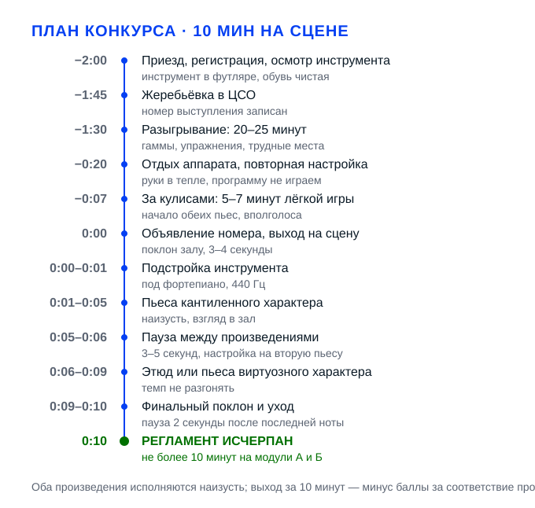
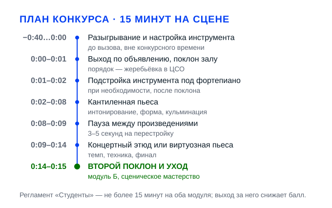
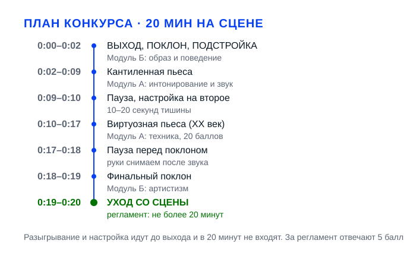

Исполнительское мастерство (инструменталист) (Р)
Задания ниже — официальные файлы «Абилимпикс» (источник: abilympics-russia.ru), разложенные по категориям. Решения написаны по тексту задания, регламенту и критериям оценки; в них указано, что именно проверяет эксперт.
Школьник
14–16 лет, базовый уровень заданияВыдержка из официального конкурсного задания: страницы, относящиеся к категории «Школьник» (стр. 6–8 источника).
Пошаговое решение
Школьнику на чемпионате «Абилимпикс» по компетенции «Исполнительское мастерство (инструменталист)» нужно выйти на сцену и сыграть наизусть два разнохарактерных произведения: пьесу кантиленного характера и этюд или пьесу виртуозного характера, уложившись в десять минут на оба модуля вместе с поклоном и подстройкой инструмента. Сто баллов делятся так: шестьдесят приносит инструментальное мастерство — чистота интонирования и ритм, уровень сложности репертуара, соответствие стилю и жанру, владение инструментом, грамотность нотного текста и соответствие программы заданию, — а сорок даёт сценическое мастерство: артистизм, сценический образ, оригинальность и умение держаться на площадке. Дальше разобрано всё по порядку, от чтения задания и заявки за двенадцать рабочих дней до финального поклона.

Задача 1. Разобрать конкурсное задание и утвердить программуМодуль А · до 10 баллов
Программа школьника — это ровно две пьесы: одна кантиленного характера, вторая виртуозная, обе наизусть и обе внутри десятиминутного лимита на два модуля. На этом этапе набираются десять баллов: пять за то, что программа вообще соответствует заданию и уложилась в регламент, и пять за уровень сложности, то есть за репертуар, подобранный по возрасту и по реальным исполнительским возможностям. Ошибка здесь стоит дороже, чем кажется: неверно собранная пара пьес тянет за собой и технику, и стиль, и хронометраж, а переучивать программу за две недели до чемпионата почти невозможно.
Действие 1.1. Выписать регламент и сроки
Шаг 1.1.1
Берём распечатку конкурсного задания и выписываем на отдельный лист то, что ограничивает программу: два разнохарактерных произведения, одно из них — пьеса кантиленного характера, второе — этюд или пьеса виртуозного характера, оба исполняются наизусть. Рядом ставим время: на оба модуля отведено не более десяти минут, и в эти десять минут входят ещё поклон, подстройка инструмента и пауза между пьесами.
Выписка нужна потому, что теряют на этой компетенции не на сцене, а до неё: за соответствие программы заданию и соблюдение регламента дают 5 баллов и снимают их целиком, если характер пьес не разведён или лимит превышен. Когда ограничения стоят на бумаге перед глазами, репертуар подбирается под них, а не под привычный экзаменационный список.
Проверьте запись вопросом: поймёт ли посторонний, сколько идёт программа, сколько в ней произведений и какого они характера. В строках должны стоять числа и формулировки задания — «не более 10 минут», «кантиленного характера», «виртуозного характера», а не «недолго» и «разные пьесы».
Частая ошибка — решить, что десять минут даются на каждую пьесу: на прогоне выясняется, что вдвоём они идут двенадцать, и менять программу приходится за неделю до чемпионата. Вторая ошибка — не посчитать поклон и настройку: они съедают до полутора минут из тех же десяти.
Хронометраж держит эксперт: секундомер идёт с первого звука до последнего. Выход за лимит фиксируется в протоколе как несоответствие заданию, и на сцене это уже не исправить.
Шаг 1.1.2
Отдельным столбцом выписываем календарь: письменная заявка на концертмейстера с приложенным нотным материалом подаётся не позднее чем за 12 рабочих дней до выступления, а просьба о сопровождающем или волонтёре для выхода на сцену и ухода с неё — не позднее чем за 3 рабочих дня. Считаем даты обратным счётом от дня чемпионата и ставим в телефон напоминание за два дня до каждого срока.
Сроки в этом задании жёсткие: заявка, поданная за десять рабочих дней, просто не рассматривается, и участник остаётся без аккомпанемента, хотя программа с ним и репетировалась. Двенадцать рабочих дней — это почти три календарные недели, и без обратного счёта они проходят незаметно.
Проверьте, что в календаре стоят конкретные числа, а не «за две недели»: между датой подачи и датой выступления должно оставаться не меньше двенадцати рабочих дней, то есть без учёта суббот, воскресений и праздников.
Обычная ошибка — считать рабочие дни календарными и подать заявку за двенадцать дней, из которых восемь выходные. Вторая — вспомнить про сопровождающего накануне, когда трёхдневный срок уже прошёл. Кроме того, к заявке сразу прикладывают ноты: без них её не примут.
Эксперт видит, есть ли у участника концертмейстер и заявлен ли он: отсутствие аккомпанемента при заявленной программе с сопровождением читается как неготовность.
Шаг 1.1.3
Выписываем и запреты, которые действуют на площадке: нельзя брать инструменты других участников, подниматься на сцену во время репетиции или выступления другого конкурсанта и ходить по залу, пока кто-то играет. Отдельно отмечаем, что менять концертную программу без уведомления организатора запрещено, а выходить на сцену в неопрятном виде или в пачкающей одежде нельзя.
Эти пункты не обсуждаются и не оцениваются по частям: нарушение снимает баллы сразу за весь блок сценической культуры, а в худшем случае ведёт к разговору с главным экспертом. Знать их заранее нужно ещё и потому, что за кулисами от волнения человек делает то, что привык делать на обычном концерте, — например, идёт смотреть на сцену в момент чужой игры.
Проверьте себя: сможете ли вы перечислить по памяти три запрета и правило про замену программы. Если хотя бы один пункт приходится вспоминать с трудом, перепишите его на тот же лист с регламентом и повесьте над инструментом.
Типичная ошибка — решить, что запреты касаются кого-то другого: выход на сцену «на секунду, поправить подставку» во время чужого выступления фиксируется и оценивается как нарушение порядка. Вторая — поменять пьесу «по совету» и не поставить в известность организатора.
Эксперт и организатор смотрят за этим постоянно, а не только в момент выступления, поэтому нарушение почти всегда замечают. Он же проверяет, что участник не мешает другим: замечание заносится в протокол отдельной строкой.
Действие 1.2. Подобрать кантиленную пьесу
Шаг 1.2.1
Для первой пьесы ищем музыку, в которой главное — звук и фраза: плавная мелодия, длинное дыхание, возможность показать легато, а не скорость. Пианисту подойдут романс или «Мелодия» с широкой фразировкой, скрипачу и виолончелисту — пьеса, где смычок ведёт линию по две-три тактовые доли, флейтисту и кларнетисту — напевная пьеса с фразами на четыре такта, баянисту и домристу — обработка народной песни.
Кантилена — это половина задания, и именно она показывает, есть ли у участника звук, то есть управляемая динамика и ровное интонирование. За чистоту интонирования и чувство ритма дают 10 баллов, и на медленной музыке фальшь слышна в разы отчётливее, чем в быстрой, где её маскирует движение.
Проверьте пьесу на инструменте целиком в спокойном темпе: слушает ли мелодия сама себя, не приходится ли на каждой длинной ноте дотягивать звук силой. Если на середине фразы кончается дыхание, смычок или мех, пьеса взята не по силам.
Берут кантилену «для галочки» — быструю пьесу, сыгранную медленно, где фраза не поётся. Эксперт слышит разницу с первых тактов: получается ровная последовательность нот без интонационного центра, и модуль теряет баллы за стиль и за интонирование.
Эксперт слушает первую пьесу как проверку звука: ровность тембра, точность интонации в длинных нотах, естественность дыхания фразы. Эксперт отличает кантилену от медленной пьесы по дыханию фразы: если мелодия не поётся, он это отметит.
Шаг 1.2.2
Сразу проверяем крайние ноты: самая высокая и самая низкая в пьесе должны быть в рабочем диапазоне, а не на пределе возможностей. У струнников смотрим, не уходит ли мелодия на высокую позицию в неудачном месте, у духовиков — не начинается ли фраза в неудобном регистре, у пианистов — не ложится ли фактура на маленькую руку. Отдельно проверяем те места, где мелодия уходит в верхний регистр или в высокую позицию: там чаще всего теряется тембр.
Это пункт про 5 баллов за уровень сложности: репертуар оценивают на соответствие возрасту и исполнительским возможностям, и пьеса, где участник борется с верхней нотой, читается как неправильно подобранная, даже если сыграна чисто. Красивая, но неудобная пьеса почти всегда звучит хуже удобной, потому что всё внимание уходит на выживание.
Проверьте так: сыграйте крайние фразы отдельно три раза подряд. Если на третьем разе появляется зажим в плече, в губах или в кисти, тесситура не та и пьесу лучше заменить, пока не поздно. Если звук на крайних нотах остаётся ровным по тембру, диапазон подобран верно.
Частая ошибка — взять пьесу, где одна эффектная нота выше всего, что участник играл раньше: она прозвучит один раз и сорвётся. Вторая — не проверить аккомпанемент: в удобной мелодии может оказаться неудобная партия концертмейстера.
Эксперт отмечает, свободно ли участник чувствует себя в своей тесситуре: зажатая верхняя нота и потеря тембра в низком регистре считываются сразу. Отдельно он слушает крайние ноты: ровность тембра в верхнем регистре он отмечает как признак подходящей тесситуры.
Действие 1.3. Подобрать виртуозную пьесу
Шаг 1.3.1
Второй номер — этюд или пьеса виртуозного характера, где техника видна и слышна: пассажи, двойные ноты, стаккато, крупная техника, беглость языка, чеканный медиатор, быстрый мех. Выбираем не самое трудное, что есть в нотах, а то, что уже уверенно звучит в восьми десятых от нужного темпа, потому что на сцене темп всегда прибавляется. Полезно взять пьесу, где есть хотя бы два разных вида техники: например, пассажи и аккорды или двойные ноты и стаккато.
Свободное и профессиональное владение инструментом — самый весомый критерий модуля, 20 баллов из 60. Он про разнообразие приёмов и виртуозность, и набирается только той музыкой, где приёмы реально разные: если весь этюд — один вид движения, показать арсенал не получится.
Проверьте на метрономе: прогоните этюд в темпе на десять процентов ниже концертного. Если и там появляются запинки в двух-трёх местах, пьеса пока не готова, и выбирать её как конкурсную рано. Запишите максимальный чистый темп на бумаге и сверяйтесь с ним раз в неделю.
Ошибка — взять этюд «на вырост», рассчитывая доучить за месяц: техника в таких пьесах нарастает медленнее, чем кажется, и на сцене участник играет на пределе, теряя и чистоту, и дыхание формы. Вторая — взять пьесу, где трудность одна и та же на всём протяжении.
Эксперт оценивает именно разнообразие приёмов и запас свободы: видно, играет участник в своём темпе или борется с текстом. Он также сравнивает заявленную сложность с возрастом участника: пьеса не по возрасту читается как случайная удача.
Шаг 1.3.2
Сверяем пару на контраст: разные тональности или хотя бы разные лады, разный темп, разная артикуляция и разный характер — созерцание и движение. Проверяем, что вторая пьеса не повторяет первую фактурно: если обе построены на одной фигурации, пара не читается как разнохарактерная, хотя формально всё на месте. Если обе пьесы в одной тональности, это не запрещено, но программу лучше пересобрать: слух не получит смены краски.
Разнохарактерность — прямое требование задания, и она же даёт баллы за соответствие исполнения стилю и жанру, 5 баллов. Две пьесы должны показать участника с двух сторон: как лирика и как виртуоза, иначе эксперт видит только половину возможностей. Контраст — это ещё и способ показать разные приёмы игры в одной программе.
Проверьте простым приёмом: сыграйте обе пьесы подряд и попросите кого-то из близких сказать одним словом, о чём была каждая. Если ответы совпадают, контраста нет и программу надо пересобрать. Спросите двух разных людей: совпадение ответов — сигнал пересобрать пару.
Обычная ошибка — собрать две быстрые пьесы, потому что они лучше выучены: программа перестаёт соответствовать заданию, и 5 баллов за соответствие уходят вместе с половиной впечатления. Вторая — две медленные пьесы, где нечего показать технически.
Эксперт слушает программу как целое и отмечает в протоколе, разведены ли пьесы по характеру и стилю. Он отмечает, показаны ли в программе разные стороны участника: лирика и техника.
Действие 1.4. Утвердить программу и оформить документы
Шаг 1.4.1
Готовую пару показываем педагогу, а затем вносим в заявку ровно так, как она будет исполняться: автор, точное название, номер сочинения, длительность каждой пьесы и общая сумма. Программу представляет главный эксперт, поэтому формулировки должны совпадать с тем, что написано в нотах, без сокращений и надписей «примерно». Латинские названия и тональности переписываем без сокращений: «Andante» и «Allegro» пишем полностью.
Название в заявке — это документ: если в программе стоит одно, а звучит другое, возникает вопрос о замене, а менять программу без согласования запрещено. Точные названия и длительности нужны ещё и организатору, который строит порядок выступлений и следит за общим временем.
Проверьте: сложите две длительности и прибавьте сорок секунд на поклон и настройку. Сумма должна быть меньше десяти минут с запасом хотя бы в минуту, потому что на сцене всё идёт медленнее, чем в классе.
Ошибка — указать в заявке одно произведение, а на сцене сыграть другое, более удобное: это прямое нарушение. Вторая — написать длительность «по памяти» и не сверить с реальным прогоном. Ещё одна ошибка — не оставить копию заявки себе: сверять будет не с чем.
Эксперт сверяет заявку с исполнением по названиям, поэтому расхождение обнаруживается до первого звука. Если название расходится с нотным текстом, он уточняет у организатора до начала отделения.
Шаг 1.4.2
Если одно произведение всё-таки нужно заменить, идём не к организатору, а в экспертный совет: по региональному вариативному пункту замена одного произведения возможна только по согласованию с ним. Просим письменно, объясняем причину и прикладываем ноты новой пьесы, а до получения ответа продолжаем готовить текущую программу. Заявление подаём не позже чем за две недели: совет собирается не каждый день.
Замена «по договорённости на словах» не действует: в протоколе останется заявленная пьеса, и новая будет считаться несогласованным изменением. Письменная просьба с приложенными нотами снимает вопросы и даёт время подготовиться к любому исходу. Кроме того, письменная просьба фиксирует дату, и потом не возникает спора о том, что и когда было сказано.
Проверьте, что у вас есть письменный ответ или отметка о приёме заявления. Если ответа нет, программа остаётся прежней, и репетировать нужно именно её, а не новую. Проверьте также, что новая пьеса укладывается в регламент и не увеличивает общее время программы.
Типичная ошибка — узнать об отказе за два дня до выступления, не репетируя старую программу. Вторая — менять пьесу самостоятельно, решив, что «так лучше». Третья ошибка — менять пьесу уже после жеребьёвки, когда программа сдана главному эксперту.
Экспертный совет фиксирует все замены, и главный эксперт получает итоговый список до начала конкурса. Главный эксперт получает от совета решение и сверяет его с заявкой в день выступления.
Задача 2. Подготовить инструмент и разыграть игровой аппаратМодуль А · до 10 баллов
Разыгрывание в задании прописано отдельным требованием, и это не формальность: разогретый аппарат и правильно настроенный инструмент дают те самые 10 баллов за чистоту интонирования и чувство ритма. На холодных руках и на разъехавшемся строе любая, даже хорошо выученная программа звучит фальшиво, и виноватым окажется не репертуар, а две пропущенные процедуры — осмотр инструмента и двадцать минут упражнений. Здесь же решается вопрос с подстройкой под фортепиано, которую по заданию делают уже на сцене, после поклона.
Действие 2.1. Осмотреть и настроить инструмент
Шаг 2.1.1
За день до выезда и ещё раз на площадке проходим по инструменту руками: у струнных проверяем волос смычка на разрыв и натяжение, колки, подставку и душку, у духовых — трость или мундштук, клапаны и прокладки, у баяна и аккордеона — мех на проколы, ремни и кнопки, у фортепиано на площадке — педали и клавиши на провалы и посторонние призвуки. Всё, что шатается или болтается, подтягиваем заранее, а не перед выходом.
Потому что на сцене это уже не чинится: лопнувший волос смычка или подтекающий клапан превращают выступление в борьбу с инструментом, и оценка за владение инструментом (20 баллов) падает независимо от подготовки. Задание отдельно требует бережного отношения к своему и к предоставленному инструменту, и осмотр — его первая часть.
Проверьте каждый пункт на ощупь и на слух: смычок держит натяжение, колки не прокручиваются, клапаны не шипят, мех не тянет воздух на сжатии. Пройдите гамму в среднем регистре и послушайте, нет ли дребезга или постороннего призвука.
Типичная ошибка — обнаружить проблему на сцене: волос рвётся именно в концерте, потому что играют громче и дольше. Вторая — одалживать инструмент у соседа по площадке, что прямо запрещено правилами. Третья — не проверить запасную трость или струну: без них любой сбой становится окончательным.
Эксперт видит готовность инструмента уже по тому, как участник входит и настраивается: суета с колками и тростью читается как неготовность. Ещё он смотрит, как участник держит инструмент в паузах: небрежное обращение заметно.
Шаг 2.1.2
Настраиваем инструмент в зале, а не в коридоре, и даём ему полчаса акклиматизации: температура в помещении по нормам площадки держится в пределах 21–24 градусов, влажность 40–60 процентов, и занесённый с мороза инструмент первое время плывёт. Струнные строим по квинтам от эталонной ноты 440 герц, духовые проверяют строй после разыгрывания, потому что труба и кларнет «поднимаются» по мере прогрева.
Строй — это половина чистоты интонирования, а 10 баллов за неё начисляются по слуху, а не по намерению. Инструмент, настроенный в холодном коридоре, в тёплом зале уедет на четверть тона, и участник будет всю программу подстраивать губами или пальцами вместо того, чтобы играть музыку.
Проверьте строй дважды: сразу после настройки и через десять минут игры. Если за это время нота ушла, инструмент не акклиматизировался, и настраивать нужно ещё раз, уже перед выходом. Отдельно проверьте аккорды и октавы: расхождение в них слышно сильнее, чем в одной ноте.
Ошибка — настраиваться за кулисами по камертону и считать, что этого достаточно: в зале другая температура и другая акустика. Вторая — крутить колки на сцене до поклона, когда по заданию подстройка идёт уже после приветствия.
Эксперт слушает настройку как часть модуля: чистая квинта и ровный строй по всему диапазону слышны в первой же фразе. Он же слушает, не подстраивает ли участник каждую ноту губами или пальцами: это признак ненастроенного инструмента.
Шаг 2.1.3
Обращаемся с инструментом по правилам: носим в футляре, ставим на подставку, а не прислоняем к стулу, не оставляем на сцене без присмотра и не кладём на клавиатуру посторонние предметы. После игры протираем струны и корпус сухой мягкой тканью, смычок отпускаем, трость убираем в футляр, мех ставим на фиксатор. Футляр держим закрытым и ставим так, чтобы на него не наступили: у струнных и духовых это самая частая причина поломок на площадке.
Бережное отношение прописано в особых указаниях по компетенции отдельным пунктом, и оно касается как своего, так и предоставленного организатором фортепиано. Практическая сторона важнее формальной: инструмент, брошенный на стуле, к вечеру имеет сбитый строй и сколы, а скол на деке — это уже разговор с организатором.
Проверьте после каждого прогона: инструмент в футляре или на подставке, смычок ослаблен, трость в футляре, на фортепиано нет бумаг и стаканов. Это занимает полминуты и снимает все вопросы. Если инструмент остаётся в зале, попросите педагога присмотреть за ним в перерыве.
Ошибка — оставить инструмент на сцене во время перерыва: на площадке ходят другие участники, и по правилам брать чужие инструменты нельзя, но случайные касания бывают. Вторая — ставить футляр в проходе, где его снесут.
Организатор и эксперт следят за сохранностью оборудования площадки, и порча фиксируется актом. Эксперт и организатор ведут площадку вместе, и повреждение фиксируется актом с подписью.
Действие 2.2. Разыграться по схеме
Шаг 2.2.1
Разыгрывание начинаем за полтора часа до выхода и строим его лестницей: сначала пять минут медленных упражнений в средней тесситуре — гаммы в одну октаву, длинные ноты на дыхании, легато по открытым струнам, ровный мех на одном звуке. Дальше пять минут упражнений с постепенным ускорением и только потом переходим к фрагментам программы. Заканчиваем разминку на среднем регистре, не уходя в крайние: они разогреваются в последнюю очередь.
Смысл лестницы в том, что аппарат входит в работу постепенно: резкий старт с быстрых пассажей даёт зажим, который остаётся на весь день. Двадцать-двадцать пять минут разыгрывания — это тот объём, после которого руки, губы или мех работают свободно, но ещё не устали; больше — уже вредно.
Проверьте себя простым признаком: самая трудная гамма идёт ровно, без «спотыканий» в верхнем регистре, а звук стал плотнее, чем в первые минуты. Если наоборот, разыгрывание продолжается в медленном темпе, без рывка в скорость.
Частая ошибка — начинать разыгрывание сразу с этюда в концертном темпе: через десять минут предплечье каменеет, и к выходу на сцене играть нечем. Вторая — разыгрываться слишком долго, до усталости, и терять свежесть к моменту выступления.
Эксперт не видит разыгрывания напрямую, но слышит его результат: свободный аппарат и ровный звук в начале программы. Он слышит, свободен ли аппарат, по ровности первого пассажа и по качеству звука в тихих местах.
Шаг 2.2.2
После общей разминки берём пять-семь самых трудных мест программы — по два-три такта, не больше — и проходим их медленно, по пять раз каждое, следя за свободой плеча, кисти или языка. В быстром темпе на разыгрывании эти места не играем: цель не проверить, а включить. Каждое такое место записываем номером такта в список и вычёркиваем только после трёх чистых повторений подряд.
Трудные места на сцене срываются первыми, потому что волнение меняет мышечный тонус раньше, чем участник это замечает. Если за час до выхода пальцы уже прошли опасный пассаж в спокойном темпе, на сцене он вспоминается как движение, а не как паника. Это прямая работа на 20 баллов за владение инструментом.
Проверьте: после пятого медленного повторения место идёт без остановки и без ускорения в середине. Если на четвёртом разе появляется спешка, значит, темп всё ещё высок для этой стадии. Если после работы место идёт ровно, но звук стал жёстким, значит, темп прибавлен раньше времени.
Ошибка — «проверять» трудное место в концертном темпе по кругу, пока не получится: так закрепляется неверное движение, и срыв повторяется на сцене. Вторая — разыгрывать только самое начало программы, оставляя середину холодной.
На сцене эксперт слышит именно эти места: если они идут так же ровно, как начало, значит, работа была системной. По этим местам видно, системно ли велась работа: случайные срывы и системные отличаются на слух.
Шаг 2.2.3
Заканчиваем разыгрывание за пятнадцать-двадцать минут до выхода и даём аппарату отдохнуть: инструмент в футляр или на подставку, руки в тепле, но не под горячей водой и не у батареи — пересушенная кожа и размягчённые мышцы работают хуже. В это же время проверяем строй ещё раз, потому что после разыгрывания духовые и струнные уходят на несколько центов.
Пауза перед выходом нужна не для отдыха «вообще», а для восстановления слухового контроля: уставшее ухо перестаёт замечать фальшь, и участник выходит играть, не слыша себя. Пятнадцать минут — время, за которое тонус возвращается, а свежесть остаётся.
Проверьте: после паузы сыграйте две-три ноты в среднем регистре и послушайте строй. Если нота «поехала», подстройте сейчас, а не на сцене после поклона. Если строй ушёл сильнее обычного, проверьте, не остыл ли инструмент: у духовых это происходит за десять минут в прохладном помещении.
Ошибка — играть до самого объявления номера, чтобы «не остыть»: к сцене участник подходит уставшим, и первая пьеса идёт натужно. Вторая — уйти в холодный коридор и вернуться с ледяными руками. Третья — разыгрываться в коридоре у лифта, где шумно и невозможно себя слышать.
Эксперт видит настройку после поклона и оценивает, насколько спокойно и уверенно она сделана. Спокойная и быстрая подстройка после поклона читается как опыт, долгая возня — как неготовность.
Действие 2.3. Удержать аппарат до выхода и между пьесами
Шаг 2.3.1
За пять-семь минут до выхода уходим за кулисы и делаем короткую версию разыгрывания: две-три медленные гаммы вполголоса, легато на одном звуке или тихое дыхание в трость, затем первые два-три такта каждой пьесы в её темпе. Всё — без эмоций и без полной громкости, чтобы не «сжечь» свежесть. Играем в четверть силы и не больше: задача — включить аппарат, а не проверить зал. За кулисами не разговариваем: голос садится, а внимание рассеивается.
Кулисы — это другая акустика и другой воздух, и аппарат в них ведёт себя иначе, чем в классе. Короткая серия движений перед выходом нужна, чтобы первая нота на сцене прозвучала так, как она звучала на прогоне, а не как первая нота после сорока минут тишины.
Проверьте: после последней гаммы звук должен быть ровным, без сипа и без дрожи в смычке. Если появляется дрожь, лучше сделать ещё две минуты медленного легато, чем выходить с трясущимися руками. Если голос или пальцы дрожат, сделайте ещё два медленных легато.
Ошибка — играть за кулисами всю программу «чтобы успокоиться»: к выходу участник уже устал, а волнение только выросло. Вторая — стоять в тишине до объявления номера и выходить с холодными пальцами. Третья — выходить, не проверив строй после разогрева.
Эксперт слышит первые такты и по ним понимает, был ли аппарат готов: неверная артикуляция в начале читается как отсутствие разыгрывания. Первые два такта он слушает как проверку готовности аппарата.
Шаг 2.3.2
Между двумя пьесами делаем паузу в три-пять секунд: руки кладём на колени или опускаем смычок, инструмент в нейтральное положение, делаем один спокойный вдох и внутренним слухом берём темп и характер второй пьесы. Начинаем не раньше, чем услышали первую фразу внутри себя. Отдельно продумываем, куда деть руки в паузе при игре стоя: смычок опущен, инструмент у плеча.
Пауза прописана в последовательности задания отдельным пунктом, и она нужна по музыкальной причине: без неё вторая пьеса начинается в темпе и настроении первой, и контраст, за который дают баллы за стиль и жанр, пропадает. Три секунды — это ещё и время перевести аппарат из одного типа движения в другой.
Проверьте на прогоне: если после паузы вторая пьеса начинается с той же громкости и той же атакой, что закончилась первая, пауза была формальной. Нужен явный переход и по звуку, и по позе. Проверьте и по записи: слышно ли, что началась другая пьеса, без объявления.
Ошибка — начать вторую пьесу впритык, «чтобы не тянуть время»: зал не успевает переключиться, а эксперт фиксирует смазанную границу формы. Вторая — тянуть паузу до десяти секунд, и тогда возникает неловкость.
Эксперт отмечает паузу как часть сценического поведения: спокойная пауза читается как владение материалом, суетливая — как спешка. Он же отмечает, не начинается ли вторая пьеса до того, как зал выдохнул после первой.
Шаг 2.3.3
Договариваемся с собой, что делать при сбое: не останавливаться и не начинать заново, а идти дальше по ближайшей опорной точке — началу следующей фразы, а не «с того места, где ошибся». Пульс при этом держим внутренним счётом: продолжаем считать доли, даже если пальцы или губы на секунду выпали. Полезно заранее выучить две-три точки в каждой пьесе, с которых можно начать в любой момент: обычно это начала разделов.
Остановка и перезапуск — самая дорогая ошибка на сцене: она рвёт форму, и 15 баллов за грамотность исполнения нотного текста и целостность уходят целиком. Способность продолжать с ближайшей опоры тренируется заранее, потому что в момент сбоя думать об этом уже некогда.
Проверьте на репетиции: попросите педагога остановить вас в случайном месте и продолжите с начала следующей фразы, не возвращаясь назад. Если получается три раза из трёх, приём освоен. Тренируйте это на репетиции с закрытыми глазами: так проверяется, работает ли слуховая опора.
Ошибка — вернуться на два такта назад, чтобы «исправить»: слушатель слышит повтор, и форма рассыпается заметнее, чем от самой ошибки. Вторая — остановиться и стоять в тишине, ожидая подсказки. Третья — начинать пьесу заново после сбоя в самом её начале.
Эксперт слышит сбой и сразу смотрит, как участник из него вышел: сохранённый пульс и форма перекрывают саму ошибку. Он смотрит на лицо участника после сбоя: спокойное продолжение впечатляет сильнее безупречного начала.
Задача 3. Выучить текст наизусть и вычистить техникуМодуль А · до 35 баллов
Обе пьесы исполняются наизусть, и это не пожелание, а требование задания: игра по нотам на площадке не предусмотрена. Наизусть держится на трёх опорах — моторике, слухе и зрительной памяти, — и если выучено только «пальцами», сбой в одном месте тянет за собой весь текст. Здесь же вычищается техника: 20 баллов за свободное владение инструментом и 15 за грамотность исполнения нотного текста набираются не в день конкурса, а в медленной работе над трудными тактами, которой обычно и не хватает.
Действие 3.1. Разобрать текст по фразам
Шаг 3.1.1
Делим обе пьесы на фразы по два-четыре такта и проставляем в нотах карандашом то, чего в тексте нет: дыхание, смену смычка, аппликатуру, распределение меха, педаль. Аппликатуру выбираем один раз и больше не меняем: у струнников это позиции и струны, у пианистов — пальцы в пассажах, у баянистов — выбор ряда. Разметку делаем мягким карандашом и не стираем до конкурса: на генеральном прогоне она ещё понадобится.
Фраза — минимальная единица, из которой потом собирается форма: 15 баллов за грамотность исполнения включают чувство формы и смысловые паузы, а они появляются только там, где границы фраз размечены заранее. Постоянная аппликатура нужна для памяти: меняющаяся аппликатура — главная причина провалов в середине пьесы.
Проверьте: сыграйте пьесу по фразам, останавливаясь на каждой границе. Если хотя бы в одном месте вы не понимаете, где заканчивается фраза, разметка не закончена. Карандаш, а не ручка — потому что разметку придётся уточнять.
Ошибка — играть пьесу целиком «как получается» и надеяться, что фразы сложатся сами: получается ровный поток, в котором эксперт не слышит ни дыхания, ни цезур. Вторая — менять аппликатуру на каждом прогоне.
Эксперт слышит фразировку с первых тактов: размеченный текст звучит как речь, неразмеченный — как чтение по слогам. Он также видит, совпадает ли дыхание фраз с разметкой в нотах, которые лежат перед ним.
Шаг 3.1.2
Выписываем на отдельный лист «карту» каждой пьесы: тональность и её отклонения, размер и смены размера, темп с метрономом, форму по разделам с номерами тактов, места кульминаций и точное количество фраз. Карта должна быть такой, чтобы по ней можно было рассказать пьесу, не играя. Обязательно указываем, где меняется фактура или характер: такие места — будущие точки входа при сбое.
Карта — это и есть та самая зрительная и аналитическая опора памяти: когда участник знает, что после сорок второго такта начинается реприза, он не теряется при сбое. Кроме того, понимание формы прямо оценивается в 15 баллах за грамотность: целостность и точная передача кульминационных моментов без карты не выстраиваются.
Проверьте карту, закрыв ноты: назовите по памяти количество фраз, место кульминации и тональность средней части. Если хотя бы один ответ не находится, карта ещё не в голове, а только на бумаге. Хороший признак — вы можете назвать кульминацию, не заглядывая в ноты.
Ошибка — считать, что «форма сама получится», и учить только ноты: тогда кульминация оказывается там, где удобно играть, а не там, где она написана. Вторая — не заметить смену размера и сбиться в середине.
Эксперт держит перед собой ноты и следит за совпадением формы: он видит, где участник теряет раздел. Если участник теряет раздел, в протоколе появляется замечание о форме, и это сразу минус в грамотности исполнения.
Шаг 3.1.3
Сверяем текст с первоисточником: штрихи, лиги, акценты, украшения, знаки динамики. Если пьеса взята в переложении, отмечаем, что именно изменено, и решаем, играем ли мы авторский вариант или редакцию. Все расхождения фиксируем на том же листе с картой. Особенно внимательно смотрим на мелизмы и на повторяющиеся фигуры: в них чаще всего играют «как запомнилось», а не как написано.
Грамотность исполнения нотного текста — это буквально 15 баллов, и снимают их за выброшенные лиги, потерянные акценты и упрощённые украшения, а не за эмоции. На чемпионате эксперт смотрит в ноты, поэтому «я так слышу» не работает: сначала точный текст, потом интерпретация.
Проверьте, пройдя пьесу с карандашом и отмечая каждое попадание в штрих. Если в одном разделе вы играете стаккато вместо легато, значит, текст не сверен. Это слышно и без нот. Пройдите пьесу медленно и сравните каждую лигу с нотным текстом: этого достаточно, чтобы найти расхождения.
Ошибка — играть по памяти о том, как пьеса звучит в записи, и не открывать ноты: в записи другая редакция, и половина штрихов не совпадает. Вторая — упростить украшение, которое «не получается». Третья — опираться на запись с другим текстом, а не на свои ноты.
Эксперт сверяет штрихи и динамику по нотам во время выступления, и расхождения отмечает в протоколе. Он сверяет динамические вилки и акценты по нотам, и выброшенное пиано замечается сразу.
Действие 3.2. Перевести текст в память
Шаг 3.2.1
Учим наизусть тремя каналами сразу: играем и слушаем (слуховая память), играем и следим за движениями (моторная), смотрим в ноты и запоминаем страницу (зрительная). Практически это значит, что фразу сначала играют с нотами, потом играют и одновременно поют, потом играют с закрытыми глазами, представляя нотный текст. Полезно записать свою игру на телефон и слушать без нот: так проверяется слуховая опора.
Одна опора — одна точка отказа: выученное только пальцами рассыпается от волнения, потому что волнение меняет мышечный тонус первым. Когда работают три канала, при сбое включается другой, и текст продолжается. Это то, что стоит за 15 баллами за целостность исполнения.
Проверьте по фразе: сыграйте её с закрытыми глазами и назовите, на какой строке страницы она находится. Если страница не вспоминается, зрительный канал не подключён, и учить нужно заново, с нотами. Проверьте и обратное: сыграйте фразу и назовите её гармонию.
Ошибка — учить наизусть целиком, играя пьесу много раз подряд «до запоминания»: так запоминаются ошибки вместе с текстом. Вторая — учить только дома за инструментом и не проверять память без него. Третья — учить в шумной комнате: внимание делится, и память получается рыхлой.
Эксперт проверяет память косвенно: он видит, смотрит ли участник в зал и на инструмент, или его взгляд ушёл внутрь, в попытку вспомнить. Смотрит он и на позу: свободная посадка говорит о том, что текст в памяти, а не в пальцах.
Шаг 3.2.2
Учим фразами с конца: берём последнюю фразу, доводим до уверенности, прибавляем предыдущую так, чтобы получилось две, и так идём назад к началу. Параллельно просим педагога называть случайный такт — и начинаем именно с него, не подходя к нему из предыдущей музыки. Начинать с последней фразы непривычно, но именно так проверяется, знаете ли вы произведение, а не только его начало.
Движение с конца снимает главную слабость «линейного» выучивания: когда текст знают только в одну сторону, сбой в середине останавливает всё. Обратный порядок даёт независимые точки входа, и любая из них может стать опорой на сцене. Кроме того, обратный порядок сразу показывает места, где память держится на слухе, а не на понимании.
Проверьте: попросите назвать пять случайных тактов и сыграйте с каждого по фразе. Если хотя бы два не запускаются без «подъезда», память ещё линейная. Достаточно десяти случайных тактов: если девять запускаются сразу, память готова к сцене.
Ошибка — учить только с начала, потому что так привычнее: первые такты идут идеально, а середина и реприза проваливаются. Вторая — считать, что игра с любого места нужна только на экзамене по специальности.
На конкурсе это видно по паузам: участник с нелинейной памятью продолжает после сбоя сразу, без поиска. Он предлагает участнику продолжить с любого места, и это самый быстрый способ проверить надёжность памяти.
Шаг 3.2.3
Проверяем память тремя прогонами подряд без нот и без остановок — так, как будет на сцене. Если в одном из трёх прогонов появляется остановка, этот фрагмент уходит в отдельный список и учится заново с нотами, а потом снова проверяется. Каждый прогон записываем на диктофон: на слух изнутри сбой кажется случайным, а в записи видно, что он повторяется в одном и том же такте.
Три прогона — минимальный критерий надёжности: один удачный прогон ничего не значит, а два подряд с одинаковой ошибкой показывают, что ошибка закреплена. На кону 15 баллов за грамотность и целостность, и они снимаются как раз за остановки и провалы. В записи слышно и то, в каком месте текст начинает «плыть»: это всегда один и тот же раздел.
Проверьте по списку: фрагменты, которые срывались, отмечены и отработаны до состояния «три из трёх». Список должен сокращаться, а не расти — если растёт, значит, переучивание идёт с ошибками. Отмечайте в списке дату последнего чистого прогона каждого фрагмента.
Ошибка — считать пьесу выученной после одного чистого прогона и перестать её трогать на неделю: к конкурсу текст «стирается» неравномерно, и первыми уходят средние разделы. Вторая — во время прогона заглядывать в ноты «на всякий случай».
Эксперт фиксирует остановки и повторы: даже одна остановка заметно снижает оценку за целостность. Он также следит за лицом в момент сбоя: спокойное продолжение читается как результат системной работы.
Действие 3.3. Вычистить трудные места и технику
Шаг 3.3.1
Трудные места выписываем по тактам и учим медленно: метроном на 60, по пять-семь повторений без единой ошибки, затем плюс восемь единиц и снова. Пассажи группируем по четыре или по шесть нот, ставим внутренние акценты и следим, чтобы движение шло от крупной мышцы, а не от пальца. Повторение считается только в том случае, если оно сделано без остановки и с одинаковой аппликатурой.
Скорость в этом возрасте набирается не силой, а количеством правильных повторений: 20 баллов за владение инструментом дают за свободную технику, а не за самый быстрый темп. Ошибка, закреплённая в медленном темпе, обязательно всплывёт на сцене, где темп прибавляется на десять-пятнадцать процентов.
Проверьте: на каждом шаге метронома место идёт три раза подряд без запинки, и только тогда прибавляете темп. Если на новой скорости появляется зажатие в предплечье, шаг слишком большой. Ведите запись темпов — 60, 68, 76, 84: так видно, где именно начинаются срывы.
Ошибка — сразу играть в концертном темпе и «набивать»: так закрепляется судорожное движение, которое на сцене разваливается. Вторая — учить пассаж целиком, когда спотыкаются два такта в середине. Третья — учить пассаж в конце дня, на уставших руках.
Эксперт слушает ровность и запас: видно, играет участник технику свободно или удерживает её усилием. Он оценивает запас темпа: если участник играет на пределе, это слышно по неровности в конце фраз.
Шаг 3.3.2
Прогоняем трудные места ритмическими вариантами: пунктиром, триолями вместо дуолей и наоборот, с акцентом на разные доли, с остановкой на каждой группе. Это не «трюки», а способ заставить палец или язык срабатывать в разных фазах движения. Полезен и вариант «играю и считаю вслух»: он сразу показывает, где движение перестаёт подчиняться счёту. На каждое место достаточно двух вариантов: больше — уже путаница.
Чистота интонирования и чувство ритма — это 10 баллов, и именно там вылезает неровность, которую в прямом темпе не слышно. Ритмические варианты ломают привычный автоматизм и показывают, где движение держится на скорости, а не на контроле. Неровность в пассажах слышна и в записи, и на расстоянии: она первая выдаёт неготовность.
Проверьте: после вариантов вернитесь к прямому тексту. Если ровность стала лучше, работа сделана правильно; если появилась новая неровность, вариант был слишком быстрым. Если после вариантов прямое исполнение стало ровнее, значит, работа идёт в нужном направлении.
Ошибка — играть варианты в темпе выше рабочего: смысл упражнения теряется, остаётся только усталость. Вторая — использовать вариант как замену медленной работы: так закрепляются чужие акценты. Третья — играть варианты по нотам, не запоминая группировку.
Эксперт слышит ритмическую ровность в пассажах: «хромающая» группировка считывается сразу, особенно в этюде. Он слушает одинаковость нот в пассаже: «выстреливающие» ноты слышны даже в быстром темпе.
Шаг 3.3.3
Работаем «стоп-кадрами»: останавливаемся на трудном такте, проверяем себя — плечи опущены, кисть свободна, губы без зажима, мех идёт ровно, — и только потом играем дальше. После каждого срыва не начинаем сначала, а возвращаемся за два такта до проблемы и проходим медленно. Стоп-кадр делаем медленно: остановка, проверка, вдох, продолжение — так закрепляется контроль, а не паника.
Зажим — главная причина, по которой выученная техника не звучит на сцене: волнение усиливает тонус, и зажатая рука теряет и скорость, и тембр. Контроль свободы во время работы приучает замечать зажим до того, как он испортит звук, а это прямо влияет на 20 баллов за владение инструментом.
Проверьте: после стоп-кадра сыграйте тот же такт и сравните звук. Если он стал шире и ровнее, значит, зажим действительно был и вы его сняли. Если разницы нет, проблема не в руках, а в аппликатуре. Если после стоп-кадра такт идёт с той же жёсткостью, ищите причину в аппликатуре.
Ошибка — терпеть зажим и «доигрывать через силу»: такие места потом боятся играть, и на сцене они срываются первыми. Вторая — начинать пьесу с начала после каждой ошибки: так отрабатывается начало и не отрабатывается середина.
Эксперт видит свободу аппарата по звуку и по позе: зажатое исполнение теряет тембр даже при правильных нотах. Он видит свободу по звуку: зажатая рука даёт резкий, узкий тембр даже при верных нотах.
Задача 4. Собрать интерпретацию и формуМодуль А · до 20 баллов
Интерпретация на этой компетенции оценивается точнее, чем кажется: 15 баллов за грамотность исполнения нотного текста — это форма, характер, выверенные динамические оттенки, акценты, смысловые паузы и точная передача кульминаций, и ещё 5 баллов за соответствие исполнения стилю и жанру. Здесь важно не добавить «своего» поверх текста, а вычитать из текста его собственную логику: где начинается раздел, где одна-единственная кульминация, какой темп предписан автором. Всё это выстраивается до сцены, а на сцене только исполняется.
Действие 4.1. Выстроить форму и кульминацию
Шаг 4.1.1
Обозначаем в нотах одну главную кульминацию на пьесу и, если форма крупная, одну побочную — не больше. К главной ведём динамическую линию: отмечаем, с какой громкости начинаем (например, от пиано), где проходит середина и насколько выше кульминация. В кантилене кульминация чаще всего одна и стоит в третьей четверти, в этюде — в конце построения. Рядом с кульминацией отмечаем, за счёт чего она достигается: громкости, плотности фактуры или темпа.
Именно за это дают 15 баллов: выверенность динамических оттенков, акцентов и точная передача кульминационных моментов. Пьеса без динамического плана звучит ровно и бесцветно, а с двумя-тремя равными кульминациями — суетливо: слушатель перестаёт понимать, куда движется музыка.
Проверьте, спев пьесу без инструмента: если вы можете показать рукой, где музыка нарастает и где спадает, план есть. Если рука идёт ровно, значит, динамика распределена по тактам, а не по смыслу. Этот приём работает без инструмента и не требует зала.
Ошибка — играть всю пьесу на одной громкости, потому что «так безопаснее»: это читается как отсутствие работы над текстом. Вторая — ставить кульминацию в самом удобном технически месте, а не там, где она написана.
Эксперт слушает пьесу как форму и отмечает, есть ли одна ясная вершина: без неё оценка за грамотность исполнения падает. Без вершины пьеса звучит как этюд, и это видно в протоколе по графам о форме и характере.
Шаг 4.1.2
Расставляем смысловые паузы и цезуры: короткое дыхание перед новой фразой, остановка на фермате, чуть более долгая пауза перед репризой. Агогику используем в пределах: замедление в конце фразы на десять процентов, а не вдвое, и обязательный возврат в основной темп. Замедление планируем в конце фразы, а не в середине: остановка посреди мелодии рвёт её на части.
Пауза — самый дешёвый и самый недооценённый приём: она делает форму слышимой и даёт залу точку, в которой можно выдохнуть. Но затянутая пауза и произвольная агогика ломают метрическую сетку, а это уже потеря баллов за чувство ритма и за соответствие стилю.
Проверьте себя метрономом на медленной доле: прогоните пьесу, не выключая щелчок, и послушайте, возвращаетесь ли вы в сетку после каждого отклонения. Если после замедления вы уже не попадаете в щелчок, агогика вышла за пределы.
Ошибка — растягивать каждую фразу «для выразительности»: пьеса расползается, и целостность исчезает. Вторая — не делать пауз вообще и играть фразы впритык, как упражнение. Третья — делать паузу там, где неудобно дышать, а не там, где кончается мысль.
Эксперт отмечает смысловые паузы отдельно: они входят в критерий целостности и характера произведения. Он замечает, когда пауза сделана «для себя», а когда — для музыки: первая всегда чуть длиннее.
Шаг 4.1.3
Собираем пьесу целиком и слушаем её как рассказ: одна мысль, одно движение, одна вершина. Технически это значит, что на прогоне запрещено останавливаться и «дорабатывать» детали — детали правятся отдельно, до сборки, а на прогоне проверяется только линия целого. Полезно прогнать пьесу, не играя, а дирижируя ею: рука сразу находит вершину и провалы формы.
Целостность — не украшение, а критерий: 15 баллов снимаются, если пьеса распадается на куски, даже когда все ноты сыграны правильно. Слушатель и эксперт воспринимают именно линию, а не количество точных нот. Именно поэтому на прогоне нельзя останавливаться: привычка к остановкам переносится на сцену, где продолжить уже не дадут.
Проверьте после прогона: перескажите пьесу в трёх предложениях — начало, середина, конец. Если пересказ получается, форма собрана; если вспоминаются только отдельные трудные такты, целого пока нет. Три предложения должны звучать как описание истории, а не как перечень эпизодов.
Ошибка — доводить детали прямо на прогоне: участник останавливается, теряет дыхание формы и привыкает к остановкам. Вторая — наоборот, ни разу не сыграть пьесу целиком до генерального прогона. Третья — учить пьесу только по фрагментам, ни разу не собрав её целиком.
Эксперт слушает именно целое и фиксирует распад формы — это одна из самых заметных потерь на этом конкурсе. Он слушает, держится ли единый темп формы: распад особенно слышен в конце, когда силы на исходе.
Действие 4.2. Попасть в стиль и жанр
Шаг 4.2.1
Определяем стиль каждой пьесы и подбираем средства под него. В барокко — террасная динамика и ясная артикуляция, без романтического качания; в классике — прозрачная фактура и строгая фраза; в романтизме — широкое дыхание и умеренная агогика; в музыке XX века — точность метра и характерный штрих. Разницу записываем на лист с картой пьесы. Полезно послушать две разные записи одной пьесы и сравнить, чем отличается артикуляция у разных школ.
Соответствие исполнения стилю и жанру — 5 баллов, и они теряются чаще всего из-за переноса привычной манеры на всю программу. Участник, играющий барокко как романс, показывает, что не слышит разницы эпох, хотя технически всё может быть чисто. Разница эпох слышна в артикуляции раньше, чем в темпе.
Проверьте: сыграйте по четыре такта из каждой пьесы подряд и сравните артикуляцию. Если обе звучат одинаково по штриху и по дыханию, стилевая разница не сделана, и контраст программы пострадает. Если разницы не слышно, начните с артикуляции: штрих определяет стиль быстрее динамики.
Ошибка — играть всё «красиво и певуче», включая этюд: барокко и классика теряют характер. Вторая — наоборот, играть всё сухо и ровно, включая кантилену. Третья — играть всю программу в одной манере, потому что «так учили»: программа теряет второе измерение.
Эксперт сверяет манеру с эпохой: он слышит стилистическое несоответствие раньше, чем техническую погрешность. Он держит в голове жанровые признаки и отмечает, где манера расходится с эпохой.
Шаг 4.2.2
Работаем над штрихом под свой инструмент: у струнников — распределение смычка, точка контакта и вес руки в легато, у духовиков — атака языка и опора дыхания, у пианистов — педаль по гармонии, а не «на всё», у баянистов и аккордеонистов — плавность меха и смена направления в невидимом для слуха месте. У пианистов отдельно проверяем смену педали на каждой новой гармонии, у баянистов — смену меха на границе фразы.
Штрих — это то, из чего складывается и стиль, и разборчивость текста: 5 баллов за стиль и часть 20 баллов за владение инструментом набираются именно здесь. Смена меха или смычка в середине фразы слышна как разрыв, а педаль «на всё» превращает прозрачную музыку в кашу.
Проверьте на записи с телефона: послушайте свою пьесу и отметьте места, где штрих пропадает или меняется направление движения. На слух изнутри это почти не слышно, а в записи слышно сразу. Записывайте короткими фрагментами, по одной фразе: так слышны мельчайшие разрывы.
Ошибка — менять мех или смычок в самом выразительном месте фразы: получается неоправданный акцент. Вторая — держать педаль на всю пьесу, из-за чего гармония слипается. Третья — менять мех на каждой доле, из-за чего фраза становится рубленой.
Эксперт слышит разборчивость артикуляции: смазанный штрих снижает оценку за технику даже при чистой интонации. Он отмечает качество звуковедения: ровность линии и разборчивость артикуляции входят в технику.
Шаг 4.2.3
Выставляем темп по авторскому указанию и сверяем с метрономом: сначала на 80 процентов от нужного, потом доводим до номинала. Отклонения от указанного темпа держим в пределах десяти процентов, а в этюде — ещё строже, потому что быстрый темп там является частью задания. Отдельно проверяем темп в трудных разделах: он должен быть таким, чтобы их можно было сыграть три раза подряд без срыва.
Темп — первое, что слышит эксперт, и первое, что уезжает от волнения: на сцене участник почти всегда играет быстрее, чем в классе. Если дома темп уже на пределе, на конкурсе он станет неуправляемым, и вместе с ним уйдут и чистота, и форма. Кроме того, неверный темп меняет жанр: этюд, сыгранный медленно, перестаёт быть этюдом.
Проверьте на метрономе в день прогона: сыграйте первую фразу и сверьтесь со щелчком. Совпало — темп взят верно; если вы убежали вперёд, значит, на сцене разгонитесь ещё сильнее. Если первая фраза идёт ровно, а к середине вы разгоняетесь, значит, темп держится на усилии, а не на метре.
Ошибка — брать темп «на пределе возможностей», рассчитывая на подъём: на сцене он превращается в гонку, и этюд рассыпается. Вторая — играть значительно медленнее указанного, из-за чего пьеса теряет характер.
Эксперт сверяет темп с нотным указанием: явное расхождение трактуется как несоответствие стилю и жанру. Он же слушает, сохраняется ли темп в трудном разделе: разгон в пассажах читается как потеря контроля.
Действие 4.3. Прогнать программу целиком
Шаг 4.3.1
Собираем конкурсный блок целиком: выход, поклон, подстройка, первая пьеса, пауза три-пять секунд, вторая пьеса, пауза после последней ноты, поклон, уход. Прогоняем три раза с секундомером и записываем длительность каждого раза, чтобы увидеть разброс. Время фиксируем от первого звука до финального поклона: именно так его считает эксперт. Прогон делаем в той обуви и в том костюме, в которых будем выступать.
Прогон нужен потому, что две пьесы подряд — это другая нагрузка, чем каждая по отдельности: аппарат устаёт, слух притупляется, и вторая пьеса играется хуже первой. Регламент десять минут проверяется здесь же, в спокойной обстановке, а не на сцене под секундомером эксперта.
Проверьте: три прогона укладываются в десять минут с запасом минимум в минуту, а разброс между ними не больше тридцати секунд. Больший разброс значит, что темп нестабилен и на сцене его поведёт. Если разброс больше, значит, где-то темп плывёт, и это место надо найти по записи.
Ошибка — прогонять только пьесы, без выхода и поклона: на сцене обнаруживается, что участник не знает, куда деть руки перед началом. Вторая — прогнать один раз и успокоиться. Третья — прогонять программу только по частям и ни разу не собрать её в конкурсном порядке.
Эксперт видит, насколько уверенно участник держит весь блок: сбитая пауза между пьесами говорит об отсутствии прогонов. Он же замечает, если участник забывает поклон: без него выступление начинается с середины.
Шаг 4.3.2
Хотя бы два прогона делаем в большом помещении с другой акустикой — в зале, а не в классе: слушаем, хватает ли динамики на последний ряд, не гудит ли низкий регистр, слышны ли тихие места. По результату корректируем нюансы: где-то прибавить, где-то убрать, чтобы пиано не исчезло. Полезно попросить кого-то походить по залу во время прогона: так проверяется, слышно ли пиано с разных мест.
Акустика меняет восприятие динамики сильнее, чем кажется: в классе с мягкими стенами пиано звучит достаточно, а в зале с жёсткими — пропадает. Оценка за динамические оттенки ставится в зале, поэтому и репетировать надо там, где будет звучать. Кроме того, в зале иначе звучит педаль и иначе отзывается низкий регистр.
Проверьте, посадив кого-то на последний ряд: пусть он скажет, слышны ли самые тихие такты и не перекрывает ли аккомпанемент мелодию. Это точнее любого самоощущения. Запишите прогон из зала, а не от инструмента: микрофон телефона на последнем ряду даёт честную картину.
Ошибка — считать, что «громко и так», и не менять нюансы под зал: пиано теряется, а форте превращается в крик. Вторая — наоборот, пережать громкость и потерять тембр. Третья — поднимать громкость до предела: зал слышит крик вместо тембра.
Эксперт сидит в зале и оценивает именно слышимость оттенков, а не их наличие в нотах. Он сидит в зале и оценивает слышимость каждого оттенка, поэтому тихие места должны доходить до последнего ряда.
Шаг 4.3.3
Если выступаете с концертмейстером, проводим две-три совместные репетиции: согласуем вступления, дыхание, паузы, темповые отклонения и совместный поклон. Отдельно проговариваем, кто и когда делает подстройку, чтобы на сцене не возникло паузы с переглядыванием. Отдельно договариваемся о темпе вступления: темп берёт участник, а концертмейстер следует за ним.
Ансамбль — это отдельная часть оценки: расхождение во вступлении или в паузе слышно как невыученность, а 15 баллов за грамотность исполнения включают и согласованность. Кроме того, концертмейстер должен получить ноты заранее, по заявке за двенадцать рабочих дней.
Проверьте на записи: совпадают ли вступления и окончания фраз. Если хотя бы одно вступление идёт с задержкой, репетиций мало — на сцене задержка удвоится. Проверьте и совместный поклон: он делается одновременно, и это видно из зала.
Ошибка — репетировать с концертмейстером один раз и накануне: ансамбль не складывается, и участник начинает подстраиваться под аккомпанемент, теряя собственный темп. Вторая — не обсудить поклон. Третья — не передать концертмейстеру ноты заранее, сославшись на занятость.
Эксперт слышит ансамблевую согласованность и отдельно смотрит на совместный поклон и уход. Он отдельно слушает ансамблевую согласованность и смотрит на совместный уход со сцены.
Задача 5. Собрать сценический образ и пройти выходМодуль Б · 40 баллов
Модуль Б — сценическое мастерство — стоит столько же, сколько вся техника вместе взятая: 40 баллов из 100, по 10 за артистизм, за сценический образ, за оригинальность исполнения и за умение держаться на концертной площадке. Эти баллы набираются не силой звука, а поведением: как участник вышел, как поклонился, как стоял в паузе, куда смотрел, как ушёл. Почти всё здесь решается заранее — костюмом, отрепетированным поклоном и понятым порядком дня, — и почти ничего нельзя исправить в момент выступления.
Действие 5.1. Подготовить концертный образ
Шаг 5.1.1
Концертный костюм подбираем под зал и под характер программы: платье или костюм спокойного цвета, без крупных блёсток, без длинных свисающих рукавов и шарфов, которые цепляются за инструмент. Обувь — закрытая, чистая, разношенная, на устойчивом каблуке или без него; новая обувь натирает и меняет посадку за инструментом. Отдельно проверяем, не блестит ли ткань под софитами: бликующая ткань отвлекает зал.
Сценический образ — это 10 баллов, и оценивают его по конкретным признакам: костюм, опрятная причёска, сценическое поведение. Отдельно в задании сказано, что выходить в неопрятном виде, в пачкающей одежде и грязной обуви запрещено, поэтому проверять нужно всё, включая подошву.
Проверьте костюм в движении: сядьте за инструмент, поднимите руки, наклонитесь. Ничего не тянет, не сползает, не цепляется за подставку или мех. Пройдите десять шагов по комнате — обувь не должна скрипеть и скользить.
Ошибка — надеть концертное платье или костюм впервые в день выступления: оказывается, что рукав мешает, а воротник давит. Вторая — прийти в кроссовках «их же почти не видно» или в обуви с потёртой подошвой.
Эксперт осматривает участника до выхода и фиксирует неопрятность сразу: это единственный критерий, где баллы теряются ещё до первого звука. Он же смотрит на обувь: грязная подошва заметна, когда участник выходит на сцену.
Шаг 5.1.2
Причёску делаем так, чтобы она не падала на лицо и не требовала поправок: волосы убраны назад или заколоты, чёлка не закрывает глаза, украшения не звенят и не мешают движению. Для струнников и духовиков это ещё и вопрос техники: упавшая на лицо прядь сбивает дыхание и мешает смотреть на смычок или на клавиши. Заколки берём в тон волос и проверяем, не цепляются ли они за воротник при наклоне.
Опрятная причёска прямо названа в критерии сценического образа, и она влияет на впечатление сильнее, чем кажется: зал видит лицо целиком, а привычка поправлять волосы рукой во время игры читается как неуверенность. Продуманная причёска снимает и практическую проблему — руки заняты инструментом.
Проверьте перед зеркалом с наклоном головы: наклонитесь, как будто играете, и встряхните головой. Ничего не выпадает, глаза открыты, заколки не видны. Потом проверьте со спины — там чаще всего остаются незакреплённые пряди.
Ошибка — сделать сложную причёску, которая держится на честном слове: к середине программы она рассыпается. Вторая — оставить длинные серёжки или браслет, которые звенят при игре. Третья — прийти с мокрой головой: волосы ложатся иначе, и причёска разваливается к середине.
Эксперт смотрит на участника в анфас и в профиль: причёска и аксессуары входят в оценку сценического образа. Он оценивает причёску вместе с костюмом, как единый сценический образ.
Шаг 5.1.3
Собираем образ под программу: две пьесы — два настроения, но один участник. Медленную игру ведём спокойной пластикой и собранной позой, быструю — более активной, но без театральных жестов руками и без раскачивания всем корпусом. Позу за инструментом проверяем на прогоне: спина прямая, плечи свободны, инструмент в удобном положении. Поза проверяется по видео со стороны: со своего места участник не видит, как выглядит его посадка.
Сценический образ — это не только одежда, но и манера держаться: 10 баллов за него и 10 за артистизм ставят по совокупности. Лишние движения корпусом читаются как неуверенность или как попытка компенсировать технику, а собранная поза даёт и лучший звук, и лучшее впечатление.
Проверьте на записи: посмотрите видео своего прогона без звука. Если видно, что движения совпадают с музыкой и не отвлекают, образ собран; если корпус живёт отдельно от фразы, пластику надо упростить.
Ошибка — добавить «артистизм» взмахами рук и кивками в такт: это первое, что снижает оценку за оригинальность. Вторая — сидеть или стоять скованно, глядя только в инструмент. Третья — копировать манеру известного исполнителя, не имея его техники.
Эксперт оценивает соответствие пластики характеру музыки: несовпадение видно в первые тридцать секунд. Он отмечает оригинальность манеры: за неё дают отдельные 10 баллов, но только если она не мешает тексту.
Действие 5.2. Пройти день конкурса до выхода
Шаг 5.2.1
Приезжаем на площадку за полтора-два часа: регистрация, получение номера, проверка инструмента, знакомство с залом. Жеребьёвка выступлений проводится в Цифровой системе оценивания, поэтому номер своего выступления узнаём у организатора и записываем, а вместе с ним — сколько участников впереди и сколько примерно времени есть на разыгрывание. Инструмент при этом остаётся в футляре до того момента, когда станет ясно, где можно разыгрываться.
Порядок выступления задаёт весь план дня: если номер первый, разыгрываться нужно сразу по приезде, а если последний — растянуть подготовку, чтобы не остыть за два часа ожидания. Участник, который не знает своего места в очереди, либо суетится, либо выходит холодным, и это слышно в первых тактах.
Проверьте: у вас записаны номер, время начала отделения и имя организатора, к которому можно обратиться. Инструмент осмотрен, документы на месте, программа сдана главному эксперту. Уточните у организатора, где можно разыгрываться и где оставить футляр.
Ошибка — приехать за двадцать минут, рассчитывая «успеть разыграться в коридоре»: регистрация и настройка съедают всё время. Вторая — не узнать порядок и оказаться не готовым к выходу. Третья — оставить документы в машине и вернуться за ними к самому выходу.
Организатор объявляет номер перед выходом, и участник должен быть готов заранее: эксперты ждут выхода, а не наоборот. Он же получает список выступающих и сверяет его с заявками.
Шаг 5.2.2
В зале ведём себя по правилам площадки: не поднимаемся на сцену во время репетиции или выступления другого участника, не ходим по залу, пока кто-то играет, не берём чужие инструменты. Телефон — на беззвучном, разговоры — в коридоре, вход и выход из зала — только между номерами. Если нужно выйти из зала, дождитесь паузы между номерами и идите по боковому проходу.
Эти ограничения прописаны в особых указаниях и относятся к сценической культуре, за которую в модуле Б дают 40 баллов: эксперт видит участника не только на сцене, но и в зале. Кроме того, шум и движение в зале мешают играть другому, а на чемпионате это фиксируется как нарушение порядка.
Проверьте себя перед входом: телефон беззвучен, руки свободны, ничего не несёте в зал, кроме нот для концертмейстера. Если нужно выйти — дождитесь аплодисментов. Проверьте и внешний вид после ожидания: помятый костюм поправляют до входа в зал, а не на сцене.
Ошибка — подойти к сцене, чтобы «посмотреть, как стоит инструмент», во время чужого выступления. Вторая — громко обсуждать своё выступление в зале сразу после него. Третья — снимать выступление на телефон с места, загораживая обзор другим.
Эксперт и организатор наблюдают за порядком в зале, и нарушение отражается на итоговой оценке модуля. Наблюдает он и за тем, как участник реагирует на чужую игру: аплодисменты входят в культуру поведения.
Шаг 5.2.3
Перед выходом делаем короткую настройку: пять минут тишины без телефона и разговоров, медленное дыхание на четыре счёта вдох и четыре выдох, мысленный прогон первых четырёх тактов каждой пьесы и напоминание себе одного действия — например, «пою мелодию» или «не разгоняю темп». Полезно заранее выучить короткую формулу настройки: вдох, выдох, первая фраза, и ничего больше.
Волнение не убирается усилием воли, но перенаправляется: вместо «не ошибиться» ставим конкретную исполнительскую задачу, и внимание уходит в музыку. Это и есть практическая сторона 10 баллов за артистизм — свободный, а не зажатый участник звучит и выглядит лучше.
Проверьте: пульс и дыхание выровнялись, руки не ледяные, в голове звучит начало первой пьесы. Если мысли крутятся вокруг оценок и соперников, настройка не сделана и нужно ещё две минуты дыхания. Если дыхание не выравнивается, выпейте воды и постойте минуту в тишине.
Ошибка — «настраиваться» повторением трудного пассажа до посинения: вместо уверенности приходит усталость и страх. Вторая — обсуждать с родителями и педагогом возможные оценки за минуту до выхода. Третья — пить много воды перед выходом: это мешает и дыханию, и позе.
Эксперт видит состояние участника в момент выхода: собранность и спокойное лицо читаются сразу. Он видит участника за секунду до выхода, и именно там читается, собран он или нет.
Действие 5.3. Выступить и уйти со сцены
Шаг 5.3.1
После объявления номера выходим спокойным шагом, не бегом и не крадучись: доходим до середины сцены, останавливаемся, поворачиваемся к залу и кланяемся — наклон корпуса на три-четыре секунды, взгляд в зал, без резкого рывка головой. Затем переходим к инструменту, устраиваемся и при необходимости подстраиваемся под фортепиано. Если зал большой, доходим до края сцены, а не останавливаемся у кулис: поклон должен быть виден последнему ряду.
Порядок прямо прописан в задании: после поклона при необходимости делается подстройка инструмента, и только потом звучит музыка. Поклон до начала — это точка, в которой зал и эксперт получают право слушать, а 10 баллов за умение держаться на площадке набираются именно в эти первые секунды.
Проверьте на прогоне: от выхода до первого звука проходит не больше сорока секунд, поклон длится три-четыре секунды, подстройка не превращается в отдельный концерт. Если настройка затянулась дольше минуты, она делалась не в том месте.
Ошибка — выйти и сразу начать играть, забыв поклон: зал не понимает, началось ли выступление. Вторая — кланяться слишком низко и надолго или наоборот кивнуть головой, не сгибая корпус. Третья — идти к инструменту, глядя в пол: зал теряет контакт ещё до первого звука.
Эксперт фиксирует поклон как часть сценического поведения, и он же служит сигналом к началу оценивания. Он засекает время от выхода до первого звука: слишком долгая пауза тоже снимает баллы.
Шаг 5.3.2
Играем первую пьесу, держа взгляд в зале на уровне третьего-четвёртого ряда, а не на клавишах или на грифе: смотреть на руки — только в трудных местах и коротко. После последней ноты держим паузу две секунды, не снимая рук, и только потом переходим к паузе между произведениями в три-пять секунд. В трудных местах взгляд опускаем на инструмент на один такт и сразу возвращаем в зал.
Контакт с аудиторией и сценическая мимика — это отдельные 10 баллов, и они набираются взглядом и дыханием, а не улыбкой по команде. Пауза после последней ноты даёт залу понять, что пьеса закончилась: без неё аплодисменты накладываются на последний аккорд, и форма обрывается.
Проверьте на записи: видно ли по видео, куда направлен взгляд и есть ли пауза после финальной ноты. Если взгляд всё время вниз, а руки снимаются мгновенно, контакт с залом не выстроен. Проверьте по видео и позу: плечи не поднимаются к ушам, голова не втянута.
Ошибка — играть «в инструмент», опустив голову: зал видит только макушку. Вторая — снимать руки на последней ноте, обрывая звук и форму. Третья — играть с закрытыми глазами всю пьесу: зал видит отрешённость вместо контакта.
Эксперт оценивает мимику и контакт с аудиторией по ходу исполнения, а не в конце. Он оценивает сценическую мимику и то, насколько лицо соответствует характеру музыки.
Шаг 5.3.3
Заканчиваем выступление финальным поклоном: пауза после последней ноты, поклон на три-четыре секунды, при аплодисментах — второй, более короткий, и спокойный уход со сцены тем же шагом, без разговоров и оглядки. Инструмент забираем аккуратно, после ухода. Поклон делаем от корпуса, а не головой: медленно вниз и медленно вверх, руки свободно. Если аплодисментов нет, всё равно выдержите паузу и поклонитесь один раз.
Финальный поклон и уход — последние 10 баллов модуля Б, и они самые простые: их дают за то, что участник поблагодарил зал и не суетился. Уход важен и практически: на сцене остаётся следующий участник, а суета за кулисами мешает ему настраиваться. Уход — это тоже часть выступления, и он виден залу не хуже начала.
Проверьте: поклон есть, он не скомкан, шаг ровный, лицо спокойное. Если после выступления хочется сразу обсудить ошибки — дождитесь выхода из зала. Проверьте на репетиции с секундомером: поклон длится 3–4 секунды, уход — не больше десяти.
Ошибка — убежать со сцены сразу после последней ноты, не поклонившись: снимаются баллы и за сценическое поведение, и за артистизм. Вторая — стоять и раскланиваться слишком долго, задерживая отделение.
Эксперт ставит оценки в Цифровой системе оценивания сразу после выступления, поэтому последние секунды тоже попадают в протокол. Он видит и то, как участник ведёт себя после выхода из зала: суета за кулисами тоже заметна.
Студент
учащиеся колледжей и техникумовВыдержка из официального конкурсного задания: страницы, относящиеся к категории «Студент» (стр. 6–8 источника).
Пошаговое решение
Компетенция «Исполнительское мастерство (инструменталист)» для категории «Студенты» — это пятнадцать минут на сцене, за которые нужно показать два разнохарактерных произведения наизусть: пьесу кантиленного характера и концертный этюд или пьесу виртуозного характера. Оценивают сто баллов: шестьдесят в модуле А за инструментальное мастерство — интонирование и ритм, сложность репертуара, стиль, владение инструментом, грамотность текста и соблюдение регламента, и сорок в модуле Б за сценическое мастерство — артистизм, концертный костюм и причёску, оригинальность манеры и умение держаться на площадке. Программа сдаётся главному эксперту, порядок выступлений определяет жеребьёвка в Цифровой системе оценивания, а заявки на концертмейстера и волонтёра подаются заранее: первая — за двенадцать рабочих дней, вторая — за три. Ниже — весь путь от подбора пьес до второго поклона, разложенный на шаги с указанием, что именно смотрит эксперт и на каком критерии это отражается.

Задача 1. Собрать программу и оформить допускМодуль А · репертуар 5 + регламент 5
До сцены доходит не тот, кто лучше играет, а тот, кто вовремя и правильно оформил допуск. Две пьесы — кантиленная и виртуозная — должны быть подобраны по силам, уложены в пятнадцать минут и заявлены так, чтобы у организаторов не осталось вопросов. Эти десять баллов (пять за уровень сложности репертуара и пять за соответствие программы заданию) набираются ещё до первого звука, и вернуть их на сцене уже невозможно.
Действие 1.1. Подобрать две разнохарактерные пьесы
Шаг 1.1.1
Собираем программу ровно по формуле задания для студентов: первая пьеса кантиленного характера, вторая — концертный этюд или пьеса виртуозного характера. Считаем время по нотному тексту с учётом реально взятых темпов, а не по записи любимого пианиста: две пьесы вместе должны занимать 12–13 минут, потому что выход, поклон, подстройка под фортепиано и пауза между произведениями съедают ещё около двух минут из пятнадцати. Сразу выписываем на лист полное название, автора, опус и хронометраж каждой пьесы — эти данные пойдут в программу для главного эксперта.
Уровень сложности репертуара — отдельный критерий на 5 баллов, и эксперты смотрят, соответствует ли программа возрасту и исполнительским возможностям участника. Слишком лёгкая программа не раскрывает технику, а слишком трудная разваливается на сцене. Кроме того, за нарушение регламента по времени снимают из критерия «соответствие программы конкурсному заданию» — там всего 5 баллов, и они уходят целиком.
Сложите длительности по нотам: у каждой пьесы посчитайте количество тактов и разделите на темп, в котором вы реально играете, а не на метроном с обложки. Сложите два результата и прибавьте две минуты на сценические действия. Если сумма выходит за 14 минут — меняйте пьесу, а не темп на сцене.
Самая частая ошибка — брать концертный этюд «на вырост», ориентируясь на записи профессионалов: на сцене темп падает на 15–20 процентов, пьеса расползается, и вместе с ней уходят баллы за владение инструментом. Вторая ошибка — считать время только по звучанию и забыть про выход с поклоном и подстройку.
Эксперты видят программу до выступления, в момент сдачи её главному эксперту, и первое впечатление о сложности складывается уже тогда — по названиям и авторам.
Шаг 1.1.2
Проверяем пьесы на разнохарактерность по четырём признакам: темп (медленно против подвижно), штрих (певучее legato против чёткой артикуляции), эпоха и стиль, тип фактуры. Хорошая пара — например, медленная часть сонаты или романс Чайковского и этюд Черни ор. 299 либо концертный этюд Ляпунова; плохая пара — две пьесы одного композитора в одном темпе. Записываем для себя три-четыре такта, которые задают характер каждой пьесы, — по ним вы будете входить в образ за секунду до первого звука.
Критерий «соответствие исполнения стилю и жанру» стоит 5 баллов, и он оценивается именно на контрасте: если обе пьесы звучат одинаково мягко или одинаково моторно, эксперт делает вывод, что участник не различает стили. Разнохарактерность — это то, что задание требует прямым текстом, поэтому её проверяют первым делом.
Проговорите вслух характер каждой пьесы тремя словами и сравните: если описания совпадают, пара не годится. Второй тест — проиграйте первые восемь такт в обеих пьесах подряд: контраст должен быть слышен сразу, без объяснений.
Самая частая ошибка — подбирать пьесы по принципу «обе получаются» и не замечать, что обе лирические: тогда половина оценочного поля «стиль и жанр» остаётся нераскрытой. Обратная крайность — взять две виртуозные пьесы, где нечего показать в кантилене.
На прослушивании и на сцене эксперт отмечает, меняется ли звукоизвлечение при переходе от первой пьесы ко второй, — это и есть проверка стиля. Эксперт слышит, меняется ли у участника звук, артикуляция и посадка при переходе от кантилены к этюду: если нет, программа выглядит однообразной.
Шаг 1.1.3
Размечаем в нотах «слепые зоны» — четыре-шесть фрагментов, где память подводит чаще всего: модуляции, секвенции, места после цезур, смена фактуры. Каждый такой фрагмент переписываем на отдельный листок по памяти и сверяем с оригиналом: расхождения показывают, что именно вы играете не по тексту, а по привычке. Наизусть обе пьесы обязательны по заданию, поэтому проверка памяти входит в подготовку программы, а не в последнюю неделю перед конкурсом.
Грамотность исполнения нотного текста — 15 баллов, самая весомая статья после владения инструментом, и потеря текста в одном месте стоит дороже, чем техническая шероховатость. Задание требует исполнения наизусть, и любой случай, когда участник сбился и не смог продолжить, эксперт фиксирует как остановку программы.
Проверьте себя так: играйте пьесу с любого размеченного фрагмента, начиная с такта наугад, и доводите до конца раздела. Если вход возможен только «сначала», значит, вы держите в памяти линию, а не форму.
Типичная ошибка — учить пьесу только целиком, от первой ноты до последней: при сбое на сцене нет точки, с которой можно продолжить. Вторая — полагаться на мышечную память, не проговаривая гармонию и структуру.
Эксперт замечает такие вещи, когда участник сбивается: тот, кто знает форму, подхватывает с ближайшей сильной доли, а не начинает заново. Отдельно проверяют, возвращается ли участник в текст после сбоя или начинает раздел заново: второй вариант эксперт фиксирует как потерю формы.
Действие 1.2. Согласовать программу и заявить её
Шаг 1.2.1
Если одно произведение нужно заменить, идём не к организатору площадки, а в экспертный совет: по пункту 2.4 задания замена одного произведения из заявленной программы допускается только по согласованию с ним. Готовим короткое обоснование на бумаге — что меняем, на что и почему: например, прежний этюд не укладывается в регламент по времени. Согласование получаем заранее, до дня выступления, а не в день конкурса у сцены.
Самовольная замена — прямое нарушение особых указаний: менять концертную программу без уведомления и согласования организатора запрещено. Последствие не только организационное: в критерии «соответствие исполняемой программы конкурсному заданию» 5 баллов снимаются полностью, а в крайнем случае работу могут не оценивать вовсе.
На руках должен быть письменный ответ экспертного совета или отметка главного эксперта о согласовании. Проверьте, что в заявленной программе и в вашей папке с нотами стоит одна и та же редакция произведения.
Частый промах — договориться устно с одним экспертом и считать вопрос закрытым: оценивает бригада, и для остальных ваша программа останется прежней. Вторая — приносить замену в день конкурса, когда жеребьёвка в ЦСО уже прошла.
Главный эксперт сверяет заявленную программу с фактическим исполнением, и расхождение видно сразу, ещё до первых тактов. Если в заявке стоит одна пьеса, а со сцены звучит другая, вопрос задают сразу после выступления, и объяснение «так удобнее» не принимается.
Шаг 1.2.2
Сдаём программу главному эксперту в том виде, в котором её удобно читать: лист А4, крупный шрифт, по каждой пьесе — автор, полное название, опус или номер, тональность и хронометраж, ниже общая длительность и пометка «наизусть». Два экземпляра: один уходит экспертам, второй остаётся у вас. В шапке — фамилия, компетенция, категория «Студенты» и номер участника после жеребьёвки в Цифровой системе оценивания.
По программе эксперты выставляют сразу два критерия — уровень сложности (5 баллов) и соответствие заданию (5 баллов), поэтому невнятная заявка читается как невнятная программа. Хронометраж в заявке нужен и вам: по нему сверяют, уложились ли вы в 15 минут, отведённые категории «Студенты» на оба модуля.
Проверьте лист глазами человека, который вас не знает: понятно ли, что за пьеса, сколько она длится и что она кантиленная, а вторая виртуозная. Если для этого нужно объяснение голосом — переделайте заявку.
Типичный промах — писать «Этюд» без автора и опуса: эксперт не может оценить сложность и считает программу неконкретной. Вторая — указывать оптимистичный хронометраж, который на сцене вырастает вдвое. В итоге заявка расходится с тем, что звучит со сцены, и разбираться приходится после выступления.
Сверка идёт при сдаче программы, до выступления; неточности в этот момент ещё можно исправить без потери баллов. По заявке же проверяют хронометраж: эксперт сверяет фактическое время звучания с вашими цифрами и отмечает расхождение.
Действие 1.3. Оформить заявки на концертмейстера и сопровождение
Шаг 1.3.1
Если планируете выступать с концертмейстером, подаём письменную заявку не позднее чем за 12 рабочих дней до выступления и прикладываем к ней нотный материал — партию фортепиано с вашей строкой, а не только свою партию. В заявке указываем, что именно нужно: предоставить концертмейстера или согласовать своего, сколько репетиций требуется и в какие дни вы можете. Нотный материал должен быть в той редакции, в которой вы играете, с проставленными темпами и вставками.
Двенадцать рабочих дней — срок из задания, и он не рекомендательный: позже заявку могут не принять, и вы останетесь без концертмейстера на программе, где он необходим. Без аккомпанемента пьеса теряет гармоническую опору, интонация плывёт, и критерий «чистота интонирования» на 10 баллов проседает вместе с ней.
Проверьте, что у вас на руках копия заявки с датой и входящим номером либо подтверждение по электронной почте. Посчитайте рабочие дни по календарю, исключив выходные и праздники, — ошибка в счёте здесь стоит дорого.
Обычная ошибка — прикладывать только свою партию: концертмейстер не сможет разобрать гармонию и сыграет по памяти. Вторая — подать заявку за две недели календарных дней, не пересчитав их в рабочие. Оба промаха вскрываются накануне выступления, когда исправлять уже поздно, и участник выходит без аккомпанемента.
Организаторы сверяют дату заявки с датой выступления; вопрос «почему без концертмейстера» адресуют участнику, а не площадке. Отдельно смотрят, кто задаёт дыхание — участник или концертмейстер: в кантилене это видно по первым же фразам.
Шаг 1.3.2
Если вам нужна помощь волонтёра для выхода на сцену и ухода с неё, сообщаем об этом в организационный комитет не позднее чем за 3 рабочих дня до выступления. Описываем конкретно: с какой стороны удобнее подойти, нужна ли поддержка при подъёме по ступеням, нужно ли помочь с инструментом или с креслом. Договариваемся о сигнале, по которому волонтёр подходит, — кивок, поднятая рука, — чтобы не искать друг друга взглядом в зале.
Три рабочих дня — срок из того же раздела задания, и он короче, чем для концертмейстера, потому что речь только о логистике площадки. Продуманный выход напрямую влияет на критерий «умение держаться на концертной площадке» — 10 баллов: суетливое появление на сцене сбивает образ ещё до первого звука.
Проверьте, что сигнал и маршрут проговорены с конкретным человеком, а не «с организаторами в целом». Хорошо, если вы один раз прошли этот маршрут на репетиции или на разведке площадки. Пройдите маршрут заранее, если площадку открывают для осмотра, и проверьте, не перекрывает ли он проход шириной 1,5 метра.
На этом чаще всего теряют: стесняться просить помощь и выходить с риском споткнуться: падение на сцене обнуляет впечатление от всей программы. Вторая — просить в день выступления, когда график волонтёров уже свёрстан. Любой из этих промахов виден зрителю и эксперту в первые же секунды, ещё до первого звука.
Эксперт видит, насколько спокойно и уверенно участник появляется на площадке; подготовленный выход читается как часть образа. Спокойный, заранее отрепетированный выход даёт участнику фору в те секунды, когда зал и жюри только присматриваются.
Задача 2. Подготовить инструмент и разыграть игровой аппаратМодуль А · интонирование 10
Разыгрывание — обязательный пункт задания, а не личная привычка: и школьники, и студенты, и специалисты готовят игровой аппарат и инструмент до выхода на сцену. Холодные руки, неразыгранный слух и расстроенный инструмент съедают баллы в критериях «владение инструментом» (20 баллов) и «чистота интонирования» (10 баллов), причём эти потери происходят раньше, чем вы успеваете что-то исправить на сцене.
Действие 2.1. Разыграться до выхода на сцену
Шаг 2.1.1
Начинаем разыгрывание за 35–40 минут до выхода, в подсобном помещении или в репетиционном зале, а не за кулисами в спешке. Первые 10 минут — медленные гаммы в тональностях обеих пьес, по четыре октавы, в темпе, где вы слышите каждый звук: у пианистов это ещё и хроматические гаммы двойными терциями, у струнников — длинные смычки на открытых струнах, у духовиков — длинные ноты от середины диапазона. Задача первых минут не в скорости, а в том, чтобы включить слух и почувствовать, как инструмент отвечает сегодня.
Холодный аппарат звучит вяло и фальшиво: связки, трость и струны выходят на рабочий режим не сразу, и первый выход «с холода» обычно даёт нестабильную интонацию. Критерий «свободное и профессиональное владение инструментом» — 20 баллов, самый дорогой в модуле А, и он оценивается по первому же звуку, который часто оказывается пробным, а не artistic.
К концу первой десятиминутки должно появиться ощущение тепла в пальцах или губах, ровный звук на всём диапазоне и слух, который сам замечает отклонение. Если ощущения нет — добавьте ещё пять минут гамм, а не прыгайте сразу к пьесе.
Самая частая ошибка — начинать разыгрывание с самой пьесы на полной динамике: связки и мышцы получают нагрузку без подготовки, и к выходу появляется усталость. Вторая — разыгрываться за 10 минут, «чтобы не устать».
Эксперт не видит разыгрывания, но слышит его результат: ровность первого звука и уверенность в верхнем регистре говорят о нём больше, чем что-либо ещё.
Шаг 2.1.2
Вторая часть разыгрывания — техническая, 10–12 минут: арпеджио, двойные ноты, репетиции, хроматика — то, что встречается в вашем виртуозном этюде. Берём два-три самых трудных вида техники из второй пьесы и играем их в медленном темпе, добиваясь ровности, а не скорости: например, у пианиста — пассажи в правой руке из этюда, у домриста — тремоло на одной струне, у трубача — двойной язык. Заканчиваем небольшим ускорением до темпа, близкого к концертному.
Мышечная память включается через повторение знакомых формул, и именно они дают ощущение «рука вспомнила». Критерий владения инструментом оценивает разнообразие приёмов игры и виртуозность техники, и разыгранная рука показывает их в полном объёме, а не в усечённом.
Проверьте ровность на слух: включите метроном на 60 и сыграйте трудную формулу четыре раза подряд без запинок. Если на третьем повторе темп плывёт или пальцы сбиваются — этот вид техники ещё не готов.
Частый промах — разыгрывать только гаммы и не касаться того, что реально трудно в программе: на сцене трудное место остаётся холодным. Вторая — гнать скорость с первых секунд и зажимать аппарат. Трудное место, не тронутое на разыгрывании, звучит хуже всего остального и выдаёт холодный аппарат.
На сцене эксперт слышит, насколько свободно и точно идут пассажи в первой же виртуозной фразе. Разница слышна по верхнему регистру: он должен звучать так же плотно, как средний, без провала на переходах.
Шаг 2.1.3
Отдельно, 5–7 минут, проигрываем размеченные «слепые зоны» — те четыре-шесть фрагментов, где память подводит чаще всего. Играем каждый по три раза: первый раз медленно по нотам, второй — по памяти в среднем темпе, третий — в концертном темпе, но без эмоций, как упражнение. Заканчиваем всегда на удачном повторе, а не на сбое, потому что последнее исполнение фиксируется в памяти сильнее.
Именно в этих точках на сцене рвётся текст, а критерий «грамотность исполнения нотного текста» стоит 15 баллов. Спокойное проигрывание без эмоций нужно потому, что под эмоцией контроль слабеет, и вы тренируете не музыку, а надёжность. Кроме того, спокойное повторение снижает волнение: знакомая точка перестаёт быть страшной, и на сцене вы входите в неё без паники.
Засеките: три повтора подряд без остановки и без подглядывания в ноты. Если фрагмент требует взгляда на клавиатуру или на струны, разметьте в нотах точку опоры и проиграйте ещё три раза. Если сбой повторяется в одном и том же месте, значит, там ошибка в тексте, а не в памяти, и учить нужно заново.
Типичный промах — играть «слепые зоны» только в концертном темпе и с полной отдачей: ошибки закрепляются. Вторая — закончить разыгрывание на сбое и уйти с мыслью «потом получится». На сцене это оборачивается остановкой именно в том месте, которое вы обходили стороной, и дальше пьеса идёт на автопилоте.
На сцене эксперт отмечает, как участник проходит модуляции и места после цезур: уверенный вход в них виден сразу. Особенно заметны такие места в разработке и перед репризой, где память опирается на привычку, а не на форму.
Шаг 2.1.4
Последние 5 минут перед выходом — «сухой прогон»: играем обе пьесы подряд по таймеру, без остановок и без повторений, ровно так, как будет на сцене, включая паузу между ними. Записываем фактическое время на листок и смотрим на результат: если сумма вышла за 14 минут, в этот же день решаем, что сокращаем — темп, повторы или одну из пьес. Прогон делаем один раз, чтобы не расходовать силы.
Регламент 15 минут — жёсткая рамка категории «Студенты», и на площадке его отслеживают по факту. Прогон нужен не для оценки качества, а для проверки выносливости и времени: многие участники на сцене играют быстрее, чем на репетиции, и тогда страдает не регламент, а точность.
Сверьте секундомер с заявленным в программе хронометражем: расхождение больше минуты — сигнал пересчитать заявку. Заодно отметьте, где именно кончается дыхание или выносливость, — это место требует экономии сил.
Обычная ошибка — гонять программу целиком по пять раз «для уверенности»: к выходу наступает утомление, и свежесть звука пропадает. Вторая — прогонять без паузы между пьесами. В обоих случаях страдает точность текста, а не только свежесть звука, и первый же пассаж идёт на уставших руках.
Общее время программы проверяют по факту выступления; участник, который уложился с запасом, выглядит спокойнее и играет свободнее. Участник, который знает точное время своей программы, играет без спешки и без затягиваний, и это слышно в агогике.
Действие 2.2. Подготовить и настроить инструмент
Шаг 2.2.1
Осматриваем инструмент до выхода: у фортепиано проверяем педали (обе работают без скрипа и люфта), устойчивость банкетки и то, что крышка не задета; у струнных — целостность волоса смычка, колки, подставку и мостик; у духовых — трость, мундштук, клапанную механику и конденсат; у народных — кнопки, ремни, подбородник и строй. Всё, что шатается или скрипит, устраняем до выхода, а не в паузе между пьесами.
К предоставленному организатором фортепиано и к своему инструменту задание требует относиться бережно, и это не только этика: замечание о небрежности попадает в оценку сценического образа, 10 баллов. Скрежет педали или дребезг крышки слышны в зале и разрушают впечатление от кантилены сильнее, чем одна неточная нота.
Проверьте каждую педаль отдельно, нажав её до упора и отпустив: ход должен быть плавным и бесшумным. У струнных проведите смычком по открытой струне — звук должен быть ровным, без свиста и «песка». Щёлкающая или скрипящая педаль — повод позвать техника до выхода, а не терпеть её всю программу.
На этом чаще всего теряют: садиться за инструмент, не проверив педали: на сцене левая педаль оказывается сдвинутой, и полупедаль не работает. Вторая — брать чужой инструмент «на минутку посмотреть», что прямо запрещено.
Эксперты видят, как участник обращается с инструментом на сцене: аккуратность входит в критерий сценического образа. Перед началом эксперты смотрят, как участник обходится с инструментом: садится ли без стука, поправляет ли банкетку, не задевает ли крышку.
Шаг 2.2.2
Настраиваем инструмент и подстраиваемся: струнные и народные — по камертону 440 Гц или по фортепиано, если играете с концертмейстером; духовые — по тюнеру и на слух, с учётом температуры зала; фортепиано не настраиваем сами, а сообщаем о расстроенных нотах главному эксперту заранее. По заданию подстройка под фортепиано делается после поклона, если она нужна вашему инструменту, — значит, к этому моменту вы должны знать, насколько и куда тянет строй.
Расстроенный инструмент обнуляет критерий чистоты интонирования на 10 баллов, каким бы точным ни был слух. Тёплый зал и свет софитов меняют строй духовых и струнных в первые минуты, поэтому проверять нужно не в подсобке, а ближе к сцене. На сцене разница между строем в подсобке и в зале видна по первым же длинным нотам.
Сыграйте октаву или квинту и послушайте биения: если они слышны и мешают, подстройте. У струнных проверьте все четыре струны, у духовых — особенно неустойчивые ноты в верхнем регистре и на границе регистров.
Самая частая ошибка — настраиваться один раз и не проверять строй после первой пьесы: к середине программы инструмент уходит. Вторая — крутить колки на сцене во время паузы, превращая это в отдельный номер. В итоге первая пьеса звучит чисто, а вторая уже нет, и половина баллов за интонирование теряется без видимой причины.
Эксперт слышит подстройку и оценивает, насколько она незаметна и уместна; долгая возня с инструментом на сцене бьёт по сценическому мастерству. Проверку строя эксперт замечает по паузам между фразами: она должна занимать секунды, а не полминуты.
Шаг 2.2.3
Обустраиваем сценическое место под себя: ставим банкетку или стул на нужную высоту так, чтобы предплечье было параллельно полу, у струнных проверяем высоту пульта и расстояние до концертмейстера, у вокалистов-инструменталистов с микрофоном — высоту стойки и расстояние до мембраны. Микрофон ставим на 20–30 сантиметров от инструмента и чуть выше, чтобы не ловить шум педали и дыхания. Всё это делаем до поклона, в те секунды, пока зал вас ещё не слушает.
Правильная высота посадки напрямую влияет на свободу аппарата, а значит, на владение инструментом — те самые 20 баллов. Микрофон, поставленный слишком близко, превращает кантилену в шорох и щелчки, а слишком далеко — теряет тихую динамику, которую эксперт ждёт в piano.
Сядьте и проверьте три точки: стопы достают до пола, колени под прямым углом, локти не подняты. Попросите волонтёра или концертмейстера оценить со стороны, не перекрывает ли микрофон инструмент. Сядьте и встаньте ещё раз: место должно быть удобно и на выходе, и на поклоне, и в паузе между пьесами.
Частый промах — садиться на первую попавшуюся банкетку, не отрегулировав высоту: запястье проваливается, пассажи в этюде перестают получаться. Вторая — двигать стойку микрофона во время исполнения. В обоих случаях страдает звук, а не только удобство: рука не находит опору, и пассажи теряют ровность.
Эксперт отмечает, насколько участник владеет площадкой: спокойная подготовка места читается как профессиональная привычка. Он же замечает, не переставляют ли банкетку во время исполнения: такие движения хорошо слышны в зале.
Шаг 2.2.4
Соблюдаем правила обращения с инструментами: свой инструмент держим в чехле до выхода, укладываем так, чтобы на него не наступили; чужие инструменты не берём даже «попробовать», а на сцену не поднимаемся, пока играет другой участник, и не ходим по залу во время чужого выступления. Влажность и температуру тоже учитываем: у струнных и народных инструментов не оставляем их у батареи и на сквозняке.
Три прямых запрета из особых указаний задания — не брать чужие инструменты, не подниматься на сцену во время репетиции или выступления другого участника и не передвигаться по залу во время чужого номера. Нарушение фиксируется и может привести к разговору с главным экспертом, а в худшем случае к снятию с конкурса.
Проверьте перед выходом: ваш инструмент в чехле на своём месте, чехол подписан, чужие вещи не тронуты. Заодно посмотрите, свободен ли проход между рядами — по требованиям он 1,5 метра, и по нему должны провести не только вас.
Типичный промах — оставить инструмент на стуле в зале «на минутку»: его могут задеть, а претензию предъявят вам. Вторая — выйти в зал посмотреть на соперника во время его игры. Спор с организаторами в такой ситуации заканчивается не в вашу пользу, а испорченный инструмент останется вашей проблемой.
Эксперты и волонтёры следят за поведением в зале; замечание по дисциплине переносится в общую оценку сценического мастерства. Дисциплина в зале фиксируется отдельно, и замечание о поведении во время чужого выступления может стоить части баллов за сценический образ.
Действие 2.3. Собрать дыхание и снять зажим
Шаг 2.3.1
Перед выходом делаем шесть–восемь медленных циклов дыхания: вдох на четыре счёта носом, задержка на два, выдох на шесть через приоткрытый рот, плечи при этом остаются на месте и не поднимаются. Дышим стоя, с прямой спиной, руки свободно опущены. Это три минуты работы, которые нужны всем — и духовику, у которого дыхание является частью техники, и пианисту, у которого от него зависит ровность.
Публичное выступление всегда даёт физиологический отклик: учащается пульс, пересыхает во рту, руки становятся холодными. Управляемое дыхание возвращает пульс к рабочему уровню, и без него первый звук выходит дрожащим, что сразу бьёт по критерию интонирования на 10 баллов и по артистизму на 10 баллов.
Проверьте по телу: плечи опущены, кисти не сжаты, дыхание доходит до живота, а не застревает в груди. Если после выдоха хочется зевнуть — значит, вы действительно расслабились, а не просто подышали. Считайте вдохи и выдохи про себя, чтобы не сбиваться, и следите, чтобы плечи не поднимались вместе с вдохом.
Обычная ошибка — дышать часто и поверхностно, «чтобы успокоиться»: это учащает пульс ещё сильнее. Вторая — начинать дыхательные упражнения за минуту до выхода, когда объявили номер. Первый звук выходит неровным, и переиграть его уже нельзя: зал услышал именно это начало.
Эксперт видит внешние признаки волнения — дрожащие руки, судорожный вдох перед первой нотой, — и они считываются как недостаток сценической подготовки.
Шаг 2.3.2
Снимаем остаточный зажим в аппарате: встряхиваем кисти 10–15 раз, поднимаем и роняем плечи, разминаем пальцы и предплечье, у духовиков дополнительно расслабляем челюсть и шею круговыми движениями. Особое внимание — мышцам между большим и указательным пальцем и основанию ладони: именно там зажим держится дольше всего. Затем играем или поём две-три фразы в медленном темпе, проверяя, что звук идёт свободно.
Зажатая кисть или сведённая челюсть отнимают у звука тембр, а у техники — подвижность, и пассажи в этюде начинают «запинаться». Критерий владения инструментом на 20 баллов проверяет свободу приёмов, и зажим виден эксперту раньше, чем слышен залу. Свободный аппарат легче выдерживает волнение: зажатая рука на сцене дрожит заметнее и быстрее устаёт.
Признак снятого зажима — свободное падение руки на клавиатуру или гриф и звук, который не «выжимается», а берётся легко. Сыграйте одну гамму и сравните ощущение с тем, что было до разминки. Разница ощущается сразу: звук становится объёмнее без усилия, а гамма идёт ровнее, чем до разминки.
На этом чаще всего теряют: разминать только пальцы и забывать про плечи и шею: зажим переходит выше. Вторая — разминаться слишком энергично и утомить аппарат перед выходом. Аппарат после такой разминки гудит, и первый звук теряет опору, а кисть начинает дрожать на длинных нотах.
В первые секунды исполнения эксперт смотрит на плечи и кисти: свободная рука читается как школа. Дрожащие или, наоборот, слишком крепко сжатые кисти в первые такты выдают волнение, которое эксперт фиксирует как недостаток подготовки.
Шаг 2.3.3
Собираем установку на выступление: проговариваем про себя первые четыре такта кантиленной пьесы — темп, динамику, характер первого звука — и одну фразу виртуозной. Формулируем задачу на программу одной короткой фразой, например «спеть первую и не потерять ровность во второй». За минуту до объявления номера прекращаем разговоры и любые движения вокруг инструмента: только вы, инструмент и первые такты.
Ясная задача на первую фразу снимает половину волнения, потому что внимание переключается с «как я выгляжу» на «что я делаю». Это напрямую работает на критерии артистизма и оригинальности исполнения — по 10 баллов каждый, — которые оценивают именно вовлечённость в музыку, а не старание понравиться.
Проверьте, что вы можете назвать темп первой пьесы, её первую динамику и характер — не абстрактно, а цифрой и словом. Если формулировка размытая, первый звук тоже будет размытым. Назовите их вслух или запишите на листке, чтобы формулировка была точной, а не «сыграть хорошо».
Самая частая ошибка — накручивать себя мыслями «нельзя ошибиться»: запрет усиливает напряжение и провоцирует именно ту ошибку, которой вы боитесь. Вторая — обсуждать с соседями, кто как играл, за минуту до выхода.
Эксперт видит собранность перед выходом: участник, у которого есть задача, начинает играть без лишних движений и пауз. Собранное начало — короткая пауза, точный вдох, сразу первый звук — читается как уверенность и входит в оценку умения держаться на площадке.
Задача 3. Исполнить кантиленное произведениеМодуль А · текст 15 + стиль 5
Кантилена — это проверка того, умеете ли вы управлять звуком, а не только нажимать нужные клавиши или закрывать нужные клапаны. Здесь работают грамотность исполнения нотного текста — чувство формы, выверенная динамика, акценты и кульминация (15 баллов) — и соответствие исполнения стилю и жанру (5 баллов). Интонация, за которую отвечает предыдущая задача, слышна в кантилене отчётливее всего: длинный звук не спрячешь. Задача — чтобы певучая пьеса звучала как высказывание, а не как сумма правильно взятых нот.
Действие 3.1. Выйти на сцену и начать
Шаг 3.1.1
Ждём объявления своего номера: порядок выступлений определяется жеребьёвкой в Цифровой системе оценивания, и менять его нельзя. Услышав номер, идём на сцену спокойным шагом, не бегом и не крадучись, держим спину, смотрим вперёд и чуть выше уровня первых рядов. Инструмент в руках держим так, как привыкли на репетиции, — перехватывать его на полпути не нужно. Дойдя до места, останавливаемся, а не начинаем сразу возиться с банкеткой.
Первые десять секунд задают впечатление, и они входят в критерий «умение держаться на концертной площадке» — 10 баллов, а также в сценический образ, ещё 10. Тот, кто входит суетливо, теряет часть этих баллов ещё до первого звука, и вернуть их исполнением почти невозможно.
Проверьте по себе: дыхание не сбилось, шаг был ровным, вы не поправляли одежду на ходу. Если перед выходом чувствуете, что спешите, сделайте один вдох за кулисами и только потом шагайте. Спокойный шаг и ровное дыхание — два признака готовности, по ним себя и проверяйте.
Частый промах — выбегать на сцену, чтобы «не задерживать», и начинать движение к инструменту ещё до того, как стихли аплодисменты предыдущему участнику. Вторая — идти, глядя в пол, и потом искать глазами зал уже с инструментом в руках.
Эксперты смотрят на выход каждого участника целиком: походку, осанку, взгляд, темп движения — и отмечают это в графе сценического мастерства. Плюс к этому оценивают, нашёл ли участник своё место на сцене с первого шага или искал его глазами.
Шаг 3.1.2
Остановившись у инструмента, делаем поклон: наклон корпуса примерно на 20–30 градусов, взгляд в зал, задержка на две-три секунды, затем выпрямляемся. Поклон делается один раз, до начала игры, и он не должен превращаться в разглядывание жюри. После поклона занимаем рабочее положение — садимся или встаём так, как привыкли, — и держим короткую паузу в 3–5 секунд, чтобы зал успокоился.
По заданию участник приветствует зрителей поклоном до исполнения произведений, и именно этот элемент оценивают в критериях артистизма (10 баллов) и сценического образа (10 баллов). Пауза после поклона нужна физиологически: она даёт залу замолчать, а вам — услышать тишину и войти в нужное состояние.
Проверьте, что поклон получился цельным: корпус нагнулся и выпрямился одним движением, без «двойного кивка». Пауза выдержана, если вы успели услышать, как стихли разговоры в зале. Второй ориентир: корпус вернулся в вертикаль без качания и без второго наклона.
Типичный промах — кланяться на ходу или кивком головы, не наклоняя корпус: это читается как небрежность. Вторая — начинать играть сразу после выпрямления, не дав залу и себе паузы. В обоих случаях зал видит неловкость раньше, чем слышит первую ноту, и вход получается смазанным.
Эксперт фиксирует качество поклона отдельно от игры: он видит, естественное ли это движение или заученное и неловкое. Заученный поклон виден сразу: он не совпадает с дыханием и темпом выхода, и эксперт отмечает его как формальность.
Шаг 3.1.3
Если вашему инструменту нужна подстройка, делаем её после поклона и до первого звука программы: струнные и народные подстраиваются под фортепиано или камертон, духовые проверяют одну-две опорные ноты. Делаем это быстро, молча и без извиняющихся взглядов в зал. После подстройки коротко киваем концертмейстеру — это сигнал «готов, начинаем», и только после его ответного кивка берём первый звук.
Задание прямо предусматривает подстройку под фортепиано после поклона, если она нужна по виду инструмента, и это нормальная часть выступления, а не заминка. Согласованный вход с концертмейстером важен потому, что расхождение в первых тактах разрушает ансамбль и слышно как потеря темпа, а критерий чувства ритма стоит 10 баллов.
Проверьте, что после подстройки инструмент строит в тональности пьесы: сыграйте про себя тонику и доминанту. Кивок концертмейстеру должен быть понят — если он не ответил, повторите чуть заметнее, но не начинайте вслепую.
Обычная ошибка — крутить колки или мундштук во время паузы между пьесами, когда зал уже слушает тишину. Вторая — начинать, не дождавшись концертмейстера, и потом догонять его в первом проведении темы. Оба промаха слышны в первых тактах: расхождение с концертмейстером и фальшивая опорная нота.
Эксперт смотрит на согласованность начала: одновременный вдох и первый звук оцениваются как показатель ансамблевой подготовки. Он же смотрит, кто задал вдох: если участник, значит, ансамбль держит он, а не аккомпаниатор.
Действие 3.2. Выстроить звук, интонацию и фразу
Шаг 3.2.1
Первый звук берём не на максимуме, а на средней динамике, с ясной атакой и свободным аппаратом: у пианиста — вес руки от плеча, у струнника — ровное ведение смычка ближе к подставке, у духовика — опора на диафрагму без форсирования, у баяниста — плотное, но не жёсткое меховедение. Первая фраза задаёт характер всей пьесы, поэтому её темп и динамику нужно знать заранее, а не искать на сцене. Не начинайте с «проверочного» прикосновения к инструменту — первый звук должен быть уже музыкой.
Критерий «свободное и профессиональное владение инструментом» — 20 баллов, и эксперт судит о нём по первому же звуку: плотный он или вялый, свободна ли рука, есть ли опора. Пробный, осторожный первый звук сразу снижает оценку, потому что показывает неуверенность в инструменте.
Проверьте на слух: звук ровный от начала до конца ноты, без «клюющего» начала и без провала в конце. Если первая фраза получилась тише задуманного, не выправляйте её рывком — ведите линию к следующей ноте.
На этом чаще всего теряют: начинать слишком тихо, «чтобы потом было куда расти»: зал не слышит первую фразу, и эксперт фиксирует невнятное начало. Вторая — бить по первой ноте со всей силой и потом гасить звук. Первый звук задаёт впечатление от всей пьесы, и исправить его потом нечем: кантилена начинается один раз.
Эксперт вслушивается в первые два такта особенно внимательно: по ним он понимает уровень школы и чувство инструмента. Опытный слух отличает нажим от свободного веса руки уже на второй ноте.
Шаг 3.2.2
Держим интонацию под постоянным слуховым контролем: у струнных проверяем высокие позиции и переходы через открытые струны, у духовых — ноты на границе регистров и в верхнем регистре, у народных — мелкую пассажную технику у подставки, у фортепиано — баланс между руками. Сложные в интонационном смысле ноты играем чуть «вверх», с ощущением высокой позиции: тянуть вниз всегда легче, чем вверх. Слушаем не отдельные ноты, а интервалы: кварта и квинта должны звучать чисто, без биений.
Чистота интонирования — отдельный критерий на 10 баллов, и он не прощает небрежности: одна фальшивая нота в кантилене слышна сильнее, чем целый пассаж в этюде. Кантилена обнажает интонацию, потому что звук тянется долго и зал успевает его расслышать.
Проверьте себя на длинных нотах: если звук «качается» или уходит в конце, значит, не хватает опоры или слухового контроля. Пропойте трудный интервал внутренним слухом перед тем, как его взять, — так точность выше.
Самая частая ошибка — играть кантилену «по памяти пальцев» и не слушать интервалы: отдельные ноты верны, а ансамбль с концертмейстером фальшивый. Вторая — компенсировать неточность вибрато, которое не спасает, а размывает строй.
Эксперт отмечает интонационные погрешности по ходу всей пьесы, а не только в начале, и отдельно смотрит переходы в высокие позиции. Особенно внимательно он слушает смену позиции под лигой: там интонация уходит незаметно для самого исполнителя.
Шаг 3.2.3
Строим фразу по законам дыхания: у каждой фразы есть начало, развитие и спад, и между фразами обязательна цезура — короткая пауза, которую вы делаете рукой, смычком, мехом или дыханием. Определяем длину фраз заранее по нотам и размечаем их карандашом: обычно это 2, 4 или 8 тактов. Внутри фразы ведём звук к одной смысловой вершине, а не подчёркиваем каждую долю.
Грамотность исполнения нотного текста — 15 баллов, и в описании критерия прямо названы чувство формы, целостность, выверенность динамических оттенков, акцентов и смысловых пауз. Фразировка — это и есть смысловые паузы: без цезур музыка превращается в непрерывный поток нот.
Проверьте, можете ли вы, не играя, показать рукой, где кончается каждая фраза. Если границы неочевидны, разметьте их в нотах и на репетиции проиграйте пьесу только с цезурами, без динамики. Считайте фразы вслух: их должно быть ровно столько, сколько размечено карандашом.
Частый промах — играть все фразы одинаково, «ровно» в смысле безразлично: форма рассыпается на такты. Вторая — делать цезуры слишком длинными, из-за чего пьеса распадается на куски и теряет темп. Пьеса без цезур звучит как непрерывный поток нот, и слушатель теряет ощущение, где кончается одна мысль.
Эксперт следит за дыханием фраз и за тем, совпадает ли ваша цезура с цезурой концертмейстера. Если цезуры не совпадают, ансамбль распадается, и виноватым выглядит участник, хотя партия фортепиано просто идёт своим метром.
Шаг 3.2.4
Работаем с тембром: у струнных — точка контакта смычка и скорость ведения, у духовых — положение языка и объём полости рта, у пианистов — глубина погружения пальца и педаль, у народных — угол атаки медиатора или давление меха. Добиваемся ровности звука по регистрам: переход из нижнего в верхний не должен давать провала в громкости или смены характера. Вибрато применяем как краску, а не как постоянный фон: в тихих местах оно мельче и реже.
Тембр и ровность звука — это то, из чего складывается «соответствие исполнения стилю и жанру» (5 баллов) и та часть владения инструментом (20 баллов), которая отличает музыканта от исполнителя нот. Неровный по регистрам звук слышен сразу: верхняя нота фразы «выстреливает» или, наоборот, пропадает.
Проверьте на слух ровность: сыграйте гамму в медленном темпе и послушайте, не выбиваются ли отдельные ноты. Тембр проверяется на длинной ноте: звук должен держаться без дрожания и без угасания. Сравните нижний и верхний регистр по громкости на слух: провал слышен сразу.
Типичный промах — включать вибрато на каждой ноте одинаково: кантилена звучит однообразно и «резиново». Вторая — не менять точку контакта у струнных и играть весь диапазон одним и тем же плоским звуком. Тогда верхние ноты выбиваются из общей линии, а фраза теряет опору в конце.
Эксперт оценивает разнообразие приёмов звукоизвлечения и то, насколько тембр соответствует эпохе произведения. Отдельно отмечают, меняется ли краска звука в зависимости от гармонии и динамики.
Действие 3.3. Провести форму, динамику и кульминацию
Шаг 3.3.1
Заранее выстраиваем динамическую кривую пьесы в трёх уровнях: основной (например, piano или mezzo-piano), рабочий рост и кульминационный. Размечаем в нотах не только знаки композитора, но и свои опорные точки: такт, где начинается подъём, такт, где он достигает вершины, и такт, где начинается спад. В тихих местах играем действительно тихо, но с опорой в звуке, а не шёпотом, который не долетает до последнего ряда.
Выверенность динамических оттенков, акцентов и точная передача кульминационных моментов прямо названы в критерии на 15 баллов. Ровная динамика «на одной громкости» читается как непонимание формы, даже если все ноты сыграны верно. Кроме того, слишком тихое piano в зале без усилителей просто не слышно.
Проверьте три точки: слышно ли piano в дальнем ряду, есть ли запас громкости для кульминации и не форсируете ли вы звук на подъёме. Попросите кого-нибудь послушать из глубины зала — это самый честный тест.
Обычная ошибка — начинать сразу громко и потом не иметь, куда расти: кульминация теряется. Вторая — играть всё piano «красиво» и не показать ни одного контраста, за что снимают баллы за форму. Кульминация без запаса громкости не читается, и пьеса звучит ровно и никак, сколько бы нот вы ни сыграли верно.
Эксперт отмечает, совпадает ли ваша кульминация с кульминацией формы произведения, и слушает, есть ли у динамики запас. Если кульминация не совпала, пьесу всё равно слушают до конца, но оценку формы снижают.
Шаг 3.3.2
Определяем кульминацию пьесы заранее — обычно она стоит в точке золотого сечения, примерно на двух третях или трёх четвертях формы, — и ведём к ней всю пьесу. На подъёме добавляем не только громкость, но и плотность звука, а перед самой вершиной делаем едва заметное расширение темпа. После кульминации обязательно даём спад: без него вершина не читается и звучит как случайный выкрик.
Точная передача кульминационных моментов входит в критерий грамотности исполнения (15 баллов) и в оригинальность трактовки (10 баллов в модуле Б). Кульминация — единственная точка, которую зал запоминает; если она смазана, впечатление от всей пьесы будет ровным и никаким.
Проверьте, можете ли вы назвать такт кульминации и сыграть её отдельно, придя к ней из предыдущего раздела. Если приход ощущается как неожиданность для вас самих, для слушателя он тоже будет неожиданным.
На этом чаще всего теряют: ставить кульминацию в самом конце, где её «удобно» сыграть громко: форма переворачивается. Вторая — делать две-три равные вершины, из-за чего пьеса превращается в череду нарастаний. Форма переворачивается, и пьеса теряет драматургию, даже если все ноты на месте и темп ровный.
Эксперты, знающие произведение, сразу слышат, попали ли вы в драматургическую вершину, — это один из самых заметных признаков школы. Промах виден и по реакции зала: вершина не собирает внимания.
Шаг 3.3.3
Собираем пьесу в целое: играем её целиком, отмечая, где теряется темп и куда «уползает» форма. Агогику применяем экономно — расширение в каденции, лёгкое ускорение в серединном разделе, — но возвращаемся к основному темпу, а не остаёмся в новом. Между разделами делаем цезуры, но не останавливаем движение: слушатель должен чувствовать единую линию от первой ноты до последней.
Целостность и чувство формы входят в те же 15 баллов за грамотность исполнения, а темповые отклонения — в оригинальность (10 баллов). Частая беда студентов: сыгранные по отдельности разделы не складываются, потому что темп каждого выбирался под настроение, а не под общую линию.
Проверьте по секундомеру: время пьесы на прогоне не должно отличаться от запланированного больше чем на 30 секунд. Второй тест — спойте пьесу целиком внутренним слухом, без инструмента: если форма держится в голове, она прозвучит.
Самая частая ошибка — менять темп в каждом разделе «по вдохновению»: пьеса распадается, и концертмейстер перестаёт понимать, куда вы ведёте. Вторая — играть всё в метрономной ровности и лишить музыку дыхания. Ощущение целого пропадает у слушателя первым, раньше, чем он поймёт причину.
Эксперт оценивает целостность: остаётся ли у него после пьесы ощущение законченного высказывания или набора красивых фрагментов. Сравнивают начало и конец: темп должен вернуться в исходный, а не остаться в новом.
Действие 3.4. Завершить пьесу и выдержать паузу
Шаг 3.4.1
Последнюю ноту или аккорд держим полную длительность, не обрывая звук раньше времени: снимаем педаль или смычок после того, как звук естественно угас, а не по нашему нетерпению. Руку с клавиатуры убираем мягко, без взмаха, и не поправляем её положение в воздухе. После снятия держим паузу в 2–3 секунды, давая залу и себе услышать тишину. Держим паузу до того момента, когда тишина в зале станет полной, и только потом меняем положение рук.
Финальная нота и снятие — часть критерия грамотности исполнения (15 баллов) и театральной стороны выступления: обрыв финала читается как желание поскорее закончить. Кроме того, на последней ноте чаще всего «съезжает» интонация, потому что внимание уже переключилось на поклон.
Проверьте на репетиции: звук последней ноты угасает естественно, а не обрубается, и рука остаётся свободной. Если после снятия вы чувствуете напряжение в плече, значит, финал сыгран на зажиме. Проверьте это на репетиции, а не в зале: запишите финал на диктофон и послушайте, как снят звук.
Частый промах — снимать pedal или смычок на половине длительности: финал звучит оборванно. Вторая — сразу после последней ноты вскакивать и кланяться, не дав тишине собраться. Финал звучит оборванно, и впечатление от пьесы смазывается, даже если всё предыдущее было сыграно хорошо.
Эксперт слушает финал особенно внимательно: по снятию видно, чувствует ли участник форму до последней доли. Он смотрит, остаётся ли рука на месте после снятия и не начинается ли движение к поклону слишком рано.
Шаг 3.4.2
Между произведениями делаем небольшую паузу — по заданию она предусмотрена, — чтобы перенастроиться на другой характер. Пауза длится 3–5 секунд: меняем посадку или положение корпуса, кладём руки на инструмент в новое исходное положение, внутренне проговариваем темп и характер второй пьесы. Не поправляем одежду, не вытираем руки долго, не оглядываемся в зал — всё это делается до выхода или после выступления.
Пауза нужна не для отдыха, а для переключения: после кантилены рука и слух настроены на широкое, плавное движение, а этюд требует совершенно другой артикуляции. Если начать вторую пьесу сразу, первые такты прозвучат «по инерции» и потеряют характер, а критерий стиля и жанра стоит 5 баллов.
Проверьте, что пауза не превратилась в остановку: за 3–5 секунд вы успеваете изменить положение рук и вспомнить темп. Если пауза затянулась на десять секунд и больше, зал начинает думать, что что-то случилось.
Типичный промах — заполнять паузу суетой: поправлять банкетку, перелистывать ноты, крутить колки. Вторая — начинать вторую пьесу в темпе первой, потому что рука ещё «помнит» предыдущее движение. Начало второй пьесы звучит по инерции и теряет характер, а первые такты задают восприятие всего этюда.
Эксперт отмечает, насколько осмысленно участник переходит от одного произведения к другому: пауза с перестройкой читается как зрелость. Судят по тому, как быстро участник берёт новый характер: две-три секунды или полминуты.
Задача 4. Исполнить концертный этюд или виртуозную пьесуМодуль А · владение 20
Вторая пьеса показывает технику: темп, ровность, разнообразие приёмов, точность текста на скорости. Здесь плотнее всего работает критерий свободного и профессионального владения инструментом (20 баллов), а чистота интонирования и чувство ритма — тот же критерий на 10 баллов — проверяются на пределе движения. Задача — сыграть быстро ровно и музыкально, а не быстро любой ценой.
Действие 4.1. Взять темп и удержать ритм
Шаг 4.1.1
Темп выбираем заранее и записываем цифрой: метроном на репетиции, в котором пьеса идёт чисто и без зажима, минус 5–8 процентов на волнение. На сцене стараемся попасть именно в эту цифру, а не в ту, что стоит в нотах у композитора: авторский темп рассчитан на исполнителя другого уровня. Перед первым звуком внутренне отсчитываем один такт в нужном движении — он задаёт пульс, от которого вы уже не отклонитесь.
Чувство ритма и стабильность пульса — 10 баллов, и именно темп выдаёт волнение: на сцене участники почти всегда играют быстрее, чем на репетиции, и в быстром темпе первыми рассыпаются пассажи. Владение инструментом (20 баллов) тоже оценивается в движении: смазанная середина этюда читается как неготовность.
Проверьте на репетиции, при какой цифре метронома пьеса идёт три раза подряд без единой грязи. Если при 120 получается, а при 126 — нет, концертный темп не выше 112. Запишите эту цифру на листке и положите рядом с инструментом, чтобы не искать темп на сцене.
Обычная ошибка — играть на сцене «как на записи», прибавляя 10–15 процентов от репетиционного темпа: через две страницы дыхание и пальцы сдают, и текст посыпается. Вторая — брать слишком осторожный темп и превращать этюд в упражнение.
Эксперт сверяет темп с характером пьесы и слышит, ровный ли пульс на протяжении всего произведения. Он также отмечает, не ускоряется ли участник к финалу: прибавка темпа к концу читается как потеря контроля над формой.
Шаг 4.1.2
Держим ритмический каркас: сильные доли и группировки должны быть слышны независимо от скорости, а мелкие длительности — ровными, без «подпрыгивания» на первой шестнадцатой. Проговариваем про себя счёт по группировкам, а не по каждой ноте, и на репетиции прохлопываем ритм отдельно от игры. Полезно сыграть пьесу в медленном темпе с метрономом, а затем без него, сохраняя то же ощущение пульса.
Ровность мелкой техники и чувство ритма (10 баллов) — то, что отличает концертный этюд от гаммы, сыгранной громко. Неровные шестнадцатые слышны даже неспециалисту, а эксперт отмечает их как потерю контроля над движением. Кроме того, ровность напрямую влияет на впечатление от техники: неровные шестнадцатые читаются как потеря контроля над движением.
Проверьте на метрономе в медленном темпе: каждая доля совпадает с щелчком, нет «забеганий» и «отставаний». Затем включите метроном только на сильные доли — если пульс не рвётся, каркас держится. Дыхание при этом должно оставаться ровным, а плечи — на месте.
На этом чаще всего теряют: играть быстрые пассажи «пальцами вперёд», обгоняя левую руку или концертмейстера: получается ритмическая каша. Вторая — ускорять на лёгких местах и тормозить на трудных, из-за чего форма дышит рывками.
Эксперт слушает ритмическую устойчивость на протяжении всей пьесы и отдельно проверяет, не плывёт ли темп к финалу. Неровность в конце пьесы эксперт объясняет усталостью, а не волнением, и баллы снимает соответственно.
Шаг 4.1.3
Агогику в виртуозной пьесе применяем точечно: микроскопическое расширение перед возвращением темы, короткая цезура перед кодой, акцент на сильной доле в кульминации. Всё остальное время держим ровный пульс, потому что в этюде любое rubato съедает энергию. Акценты ставим те, что указаны в тексте, и не добавляем свои на каждой сильной доле. Расширения записываем в нотах, чтобы не забыть на сцене, и проверяем их на прогоне.
Акценты и смысловые паузы прямо названы в критерии грамотности исполнения (15 баллов), а индивидуальная трактовка — в оригинальности (10 баллов модуля Б). При этом перебор с rubato в этюде читается как непонимание жанра и снимает баллы за соответствие стилю (5 баллов).
Проверьте, что после каждого расширения вы возвращаетесь в исходный темп, а не остаётесь в новом. Сыграйте пьесу с метрономом и без: разница в общем времени не должна превышать пяти-семи секунд. Секундомер держите на виду: на слух отклонение в семь секунд не ощущается.
Самая частая ошибка — растягивать каждую фразу «для выразительности»: этюд теряет блеск и превращается в пьесу без характера. Вторая — ставить акценты там, где удобно руке, а не там, где они написаны. Слушатель теряет ощущение движения вперёд, и пьеса кажется длиннее, чем есть.
Эксперт отмечает, насколько агогика оправдана музыкально и не разрушает ли она жанр концертного этюда. Дополнительно он сравнивает вашу агогику с указаниями в нотах: расхождение должно быть осознанным, а не случайным.
Действие 4.2. Отработать технические приёмы
Шаг 4.2.1
Аппликатуру фиксируем окончательно за две-три недели до конкурса и больше не меняем: любая замена на сцене — это потеря контроля. Проставляем её карандашом в нотах на всех спорных местах, включая повторяющиеся пассажи, и проверяем, что в одинаковых фигурациях она одинаковая. Отдельно отрабатываем переходы в высокие позиции и обратно, где чаще всего теряется плавность.
Владение инструментом (20 баллов) включает разнообразные приёмы игры и виртуозное владение техникой, и аппликатура — их фундамент: неудобная аппликатура не даёт скорости, сколько ни повторяй. Меняя пальцы на сцене, вы играете фактически незнакомый текст, а это прямой риск потери нот.
Проверьте: сыграйте трудный пассаж три раза подряд одной аппликатурой и послушайте, одинакова ли артикуляция. Если в одном из повторов пальцы «перескочили», аппликатура ещё не закреплена. Одинаковая артикуляция во всех повторах — признак закреплённой аппликатуры.
Частый промах — оставлять в нотах два варианта аппликатуры «на выбор»: на сцене рука выберет худший. Вторая — учить пассаж в одной позиции и не отрабатывать переходы между позициями. Поэтому все сомнительные места проставляем заранее и на репетиции играем только по ним.
Эксперт смотрит на технику из зала: ровность и свобода движения говорят о продуманной аппликатуре больше, чем скорость. Из зала видно, насколько свободно и ровно идёт движение: продуманная аппликатура читается как школа.
Шаг 4.2.2
Отрабатываем артикуляцию по группам: staccato должно быть коротким и упругим, legato — связным без «перемазывания», акценты — резкими, но не жёсткими. У струнных следим за сменой смычка и распределением его по длине, у духовых — за атакой языка, у пианистов — за пальцевым прикосновением, у народных — за углом медиатора или плотностью меха. Добиваемся, чтобы штрих оставался одинаковым и в тихом, и в громком проведении.
Разнообразие приёмов игры — прямой пункт критерия на 20 баллов, а соответствие стилю и жанру (5 баллов) проверяется как раз по артикуляции: этюд, сыгранный сплошным legato, звучит как упражнение. Потеря штриха на быстром темпе — самая заметная техническая небрежность.
Проверьте на медленном темпе: каждый штрих читается отдельно и одинаково во всех повторах. Затем ускорьте на 20 процентов — если штрих «слипся», значит, он держался за счёт скорости. Замедлите обратно и послушайте, остался ли штрих таким же, как в медленном темпе.
Типичный промах — играть всё «примерно одинаково», потому что на скорости некогда думать о штрихах: техника звучит обезличенно. Вторая — усиливать нажим вместо скорости движения, из-за чего звук становится жёстким.
Эксперт оценивает артикуляцию как признак школы: по штрихам видно, работал ли участник над текстом или только разучил ноты. Кроме того, он слышит, одинаков ли штрих в тихом и громком проведении.
Шаг 4.2.3
Отдельно, по пять минут в день, вынимаем три-четыре самых рискованных фрагмента: скачки, репетиции, двойные ноты, тремоло, пассажи через неудобную позицию. Играем их в медленном темпе с акцентом на экономию движения: чем меньше амплитуда, тем выше надёжность на сцене. Каждый фрагмент доводим до трёх чистых повторов подряд, затем переходим к следующему, а в конце играем все четыре подряд.
Именно в этих фрагментах на сцене происходит большинство срывов, и каждый срыв бьёт по критериям владения инструментом (20 баллов) и грамотности текста (15 баллов). Экономия движения нужна потому, что на волнении амплитуда движений увеличивается сама собой и точность падает.
Проверьте: фрагмент идёт три раза подряд чисто на скорости 80 процентов от концертной. Если срыв повторяется в одном и том же месте, значит, проблема в аппликатуре или в позиции, а не в памяти. Считайте чистые повторы вслух, чтобы не обманывать себя на четвёртом.
Обычная ошибка — долбить трудное место на полной скорости до посинения: зажим закрепляется, и на сцене рука «каменеет». Вторая — обходить трудный такт стороной в надежде, что «пронесёт». Такой такт срывается уже при полном зале, и именно оттуда начинается потеря текста.
Эксперт слышит такие места безошибочно: по ним судят о реальной технике, а не о красиво сыгранном начале. Небрежность в таких местах он читает как отсутствие ежедневной работы над техникой, а не как случайность.
Шаг 4.2.4
Сводим технику с педалью и концертмейстером: педаль меняем на каждой гармонии, не «дочиста», а до половины, чтобы не потерять звук; с концертмейстером договариваемся о точках, где он ведёт, а вы следуете. Проверяем синхронность на стыках разделов, где чаще всего образуется расхождение в четверть. На сцене слушаем не только себя, но и партнёра — это единственный способ удержать ансамбль.
Умение держаться вместе с концертмейстером входит в критерий ритма и интонирования (10 баллов), а педаль у пианистов — в грамотность исполнения (15 баллов): грязная педаль смешивает гармонии и делает текст невнятным. Расхождение на стыке слышно как потеря ансамбля, даже если каждый играет верно.
Проверьте по записи: включите диктофон на репетиции и послушайте стыки — на записи расхождения слышны лучше, чем в игре. Отдельно проверьте педаль на слух: при смене гармонии не должно оставаться «мыла» из предыдущего аккорда.
На этом чаще всего теряют: держать педаль «на всякий случай» дольше нужного: пассаж превращается в звуковую кашу. Вторая — играть с концертмейстером только целиком и никогда не разбирать стыки отдельно. Педаль, взятая «на всякий случай», вредит сильнее, чем её отсутствие.
Эксперт оценивает ансамбль и чистоту гармонии: неверная педаль маскирует технику, но не спасает текст. Он отдельно слушает стыки с концертмейстером: совместное начало раздела говорит о репетициях вдвоём.
Действие 4.3. Провести финал и уйти со сцены
Шаг 4.3.1
Последнюю страницу играем на запасённой энергии: к финалу не ускоряемся сверх меры, а добавляем плотности звука, и держим темп ровным до последнего аккорда. Финальный аккорд берём всей рукой, с опорой, и держим полную длительность — он должен звучать как точка, а не как «ещё одна нота». Если в тексте есть кода, распределяем силы так, чтобы её хватило без одервеневания рук.
Финал формирует впечатление от всей пьесы, а он входит в грамотность исполнения (15 баллов) и в оригинальность (10 баллов модуля Б). Именно на последней странице чаще всего теряется темп и появляется грязь: внимание уже переключилось на поклон, а рука продолжает работать по инерции.
Проверьте по записи, не ускоряется ли последняя страница больше чем на 5 процентов: это признак потери контроля. Аккорд должен звучать цельно, без «разъезжающихся» нот. Отметьте в нотах такт, с которого начинается последняя страница, и проиграйте её отдельно пять раз.
Самая частая ошибка — разгоняться к финалу «чтобы эффектно»: аккорд смазывается, а зал слышит не блеск, а спешку. Вторая — снять руки сразу после аккорда, не выдержав длительность. Оба промаха слышны залу, потому что финал — единственное место, которое слушают все одновременно.
Эксперт слушает финал отдельно: по нему видно, хватило ли участнику выносливости и расчёта сил. Он же отмечает, не смазан ли последний аккорд из-за усталости: это видно по плотности звука.
Шаг 4.3.2
После последнего аккорда выдерживаем 2–3 секунды тишины, затем встаём (или отходим от инструмента), поворачиваемся к залу и кланяемся — это второй поклон, которым участник благодарит аудиторию. Кланяемся спокойно, несколько раз, если аплодисменты продолжаются, но без суетливых кивков. Затем уходим со сцены тем же ровным шагом, что и входили, не оглядываясь и не поправляя одежду на ходу.
По заданию в конце выступления участник вновь благодарит аудиторию поклоном и уходит со сцены — это финальная часть модуля Б, где артистизм и сценическое поведение вместе стоят 20 баллов. Уход не менее важен, чем выход: смазанный уход оставляет у экспертов ощущение незавершённости.
Проверьте, что поклон получился до того, как вы начали собирать инструмент: сначала зал, потом вещи. Инструмент забираем спокойно, не роняя и не задевая банкетку. Собранный инструмент держим в руках, а не ставим на край сцены, пока кланяетесь.
Частый промах — убегать со сцены сразу после аккорда, не поклонившись: это читается как неуважение к залу и снимает баллы. Вторая — стоять, потупившись, и ждать, пока аплодисменты стихнут сами. Поклон, сделанный на бегу, сводит на нет впечатление от всей игры.
Эксперт фиксирует уход и второй поклон в графе сценического мастерства: именно здесь видно, насколько участник чувствует себя на площадке. Он отмечает и темп ухода: он должен совпадать с темпом выхода.
Задача 5. Показать сценическое мастерствоМодуль Б · 40 баллов
Модуль Б оценивает то, что происходит вокруг звука: артистизм (10 баллов), сценический образ с костюмом и причёской (10), оригинальность исполнения (10) и умение держаться на концертной площадке (10). Это ровно 40 процентов итоговой оценки, и они набираются поведением, внешним видом и индивидуальной трактовкой, а не дополнительными нотами.
Действие 5.1. Собрать сценический образ
Шаг 5.1.1
Концертный костюм готовим заранее и надеваем в день выступления, а не приносим в сумке: тёмный низ и верх спокойных тонов, без крупных надписей, блеска и пёстрых принтов, которые отвлекают от музыки. Ткань выбираем не мнущуюся и не пачкающуюся, потому что за пятно от рояльной крышки или чехла снимают баллы. Обувь — закрытая, чистая, удобная для выхода на сцену и для работы педалями.
Сценический образ с концертным костюмом, опрятной причёской и сценическим поведением — отдельный критерий на 10 баллов. Задание прямо запрещает выходить на сцену в неопрятном виде, в пачкающей одежде и грязной обуви, так что это не вкусовщина эксперта, а формальное требование.
Проверьте костюм в трёх положениях: стоя, сидя и с поднятыми руками — он не должен тянуть в плечах и открывать спину. Обувь проверьте на подошву: она не должна скользить по сцене и стучать. Силуэт проверьте на фотографии в полный рост, а не в зеркале по пояс.
Типичный промах — надевать новый костюм впервые в день конкурса: он оказывается тесным в плечах, и это видно в посадке за инструментом. Вторая — приходить в спортивной обуви «её всё равно не видно». Оба промаха видны с первого ряда, и эксперт отмечает их раньше, чем участник начинает играть.
Эксперты оценивают костюм целиком, с расстояния зала: важны силуэт, опрятность и соответствие жанру, а не стоимость вещи. Костюм должен читаться как концертный, а не как повседневный, даже на расстоянии последнего ряда.
Шаг 5.1.2
Причёску делаем так, чтобы она не падала на лицо во время игры и не требовала поправок в процессе: длинные волосы убираем назад или закалываем, чёлку фиксируем. Макияж — сдержанный, потому что сцена усиливает всё; руки и ногти — ухоженные, без длинных ногтей, которые мешают технике у струнников и пианистов. Лицо должно быть открыто: эксперты смотрят на мимику.
Опрятная причёска названа в критерии сценического образа (10 баллов) прямым текстом, и она же влияет на артистизм (10 баллов): участник, который поправляет волосы между фразами, выпадает из образа. Открытое лицо нужно и для контакта с залом, который оценивают отдельно.
Проверьте перед выходом у зеркала со спины и в наклоне: волосы не выбиваются, заколки не видны, лицо не закрыто. Попробуйте наклонить голову к инструменту — причёска должна остаться на месте. Заколки не должны быть видны из зала: проверьте при боковом свете.
Обычная ошибка — оставить распущенные волосы, рассчитывая на «естественность»: через минуту игры они падают на лицо. Вторая — яркий макияж, который на сцене выглядит как маска и мешает мимике. В обоих случаях лицо закрыто и мимика не читается, а сценический образ распадается на части.
Эксперт видит причёску и лицо на протяжении всего выступления, в том числе в профиль. Он замечает и руки: ухоженные ногти без покрытия читаются как часть образа, а длинные мешают технике.
Шаг 5.1.3
Один-два раза репетируем в полном концертном виде: в костюме, обуви, с причёской, с инструментом, с поклоном и уходом. Прогоняем всю сценическую последовательность — выход, поклон, подстройка, пауза, второй поклон, уход, — и отмечаем, что мешает: жмёт рукав, скользит обувь, цепляется ремень инструмента. Всё найденное устраняем до конкурса, а не на сцене.
Сценическое поведение — часть критерия на 10 баллов, и оно проверяется на живом выступлении, где нельзя ничего исправить. Репетиция в костюме нужна ещё и потому, что тесная одежда меняет посадку и амплитуду движений, а значит, влияет на владение инструментом (20 баллов).
Проверьте по секундомеру всю последовательность: от выхода до ухода должно уходить не больше двух минут сверх самой программы. Если больше — вы что-то делаете лишнее. Замерьте сценические действия отдельно: сам выход с поклоном должен занимать меньше минуты.
На этом чаще всего теряют: репетировать только музыку и впервые надевать костюм на конкурсе: половина неудобств обнаруживается уже на сцене. Вторая — отрабатывать поклон отдельно от выхода и ухода, из-за чего движения выглядят разрозненно.
Эксперт замечает естественность поведения: отрепетированная последовательность движений выглядит спокойно, а не заученно. Если участник впервые поправляет банкетку или рукав на сцене, эксперт понимает, что прогона не было.
Действие 5.2. Держать площадку и контакт с залом
Шаг 5.2.1
Поклон делаем как осмысленное действие, а не как формальность: останавливаемся, находим взглядом зал, наклоняем корпус на 20–30 градусов, держим две-три секунды, выпрямляемся. В конце выступления повторяем поклон, а если аплодисменты продолжаются — кланяемся ещё раз, но не больше трёх, чтобы не превращать это в спектакль. Между поклонами возвращаемся в спокойную стойку.
Приветствие и благодарность поклоном прописаны в последовательности выполнения задания, и они оцениваются в критериях артистизма (10 баллов) и сценического образа (10 баллов). Поклон — первое и последнее, что видит эксперт, поэтому он запоминается лучше, чем середина программы.
Проверьте на репетиции с зеркалом: наклон идёт от бедра, голова не опускается в пол, взгляд остаётся в зале. Пауза после наклона выдержана, если вы успеваете услышать тишину. Смотрите на линию спины: если она остаётся прямой, поклон выглядит достойно.
Самая частая ошибка — кланяться слишком быстро, «отмахиваясь»: это читается как неуважение. Вторая — кланяться слишком низко и долго, что выглядит неуверенно. Оба промаха читаются как неуважение к залу или как неуверенность, и оба стоят баллов в модуле Б.
Эксперт оценивает поклон как часть сценического поведения, отдельно отмечая его естественность и уместность. Поклон оценивают отдельно от игры, отмечая его естественность, глубину и уместность в конкретный момент.
Шаг 5.2.2
Работаем с мимикой и взглядом: лицо должно отражать характер музыки, а не напряжение, поэтому в кантилене взгляд мягкий, в этюде — сосредоточенный. Не смотрим постоянно в одну точку на инструменте: несколько раз за программу переводим взгляд в зал, особенно в паузах между фразами. В трудных местах не закусываем губу и не хмуримся — это самая заметная гримаса волнения.
Умение держаться на концертной площадке включает сценическую мимику и контакт с аудиторией и стоит 10 баллов, а артистизм — ещё 10. Слушатель воспринимает лицо раньше, чем оценивает технику: напряжённая гримаса убеждает зал, что вам тяжело, даже когда вы играете легко.
Проверьте на записи: включите камеру на репетиции и посмотрите на своё лицо без звука. Если выражение не меняется или, наоборот, всё время напряжённое, значит, над мимикой нужно работать отдельно. Хмурый лоб и закушенная губа видны залу раньше всего остального.
Частый промах — играть с «каменным» лицом, считая, что главное — музыка: эксперт теряет контакт и оценивает артистизм ниже. Вторая — изображать эмоции специально, что выглядит фальшиво и мешает игре. Артистизм в этом случае не поднимается выше среднего, даже если музыка безупречна.
Эксперт смотрит на участника всё выступление и фиксирует, есть ли живое лицо и осмысленный взгляд в зал. Мимика оценивается вместе с посадкой: напряжённое лицо при свободных плечах встречается редко и говорит о работе над образом.
Шаг 5.2.3
Держимся площадки по правилам: на сцену поднимаемся только по своему вызову, по залу во время чужого выступления не ходим, к чужому инструменту не подходим. Со микрофоном обращаемся аккуратно: не дуем в него, не стучим, не отодвигаем во время игры. Если что-то пошло не так — стойка упала, педаль заела, — останавливаемся, спокойно устраняем и продолжаем с ближайшей сильной доли.
Умение держаться на площадке — 10 баллов, и оно проверяется именно в непредвиденных ситуациях: эксперты отмечают, способен ли участник сохранить образ при помехе. Три прямых запрета задания — не брать чужие инструменты, не подниматься на сцену во время чужого выступления и не ходить по залу во время чужого номера.
Проверьте перед выходом, что микрофон стоит там, где нужно, и не перекрывает инструмент; что путь к инструменту свободен и ширина прохода достаточна. После выступления убедитесь, что место осталось таким, каким вы его получили.
Типичный промах — суетливо исправлять помеху, извиняясь перед залом: внимание теряется, и дальше игра идёт «на автопилоте». Вторая — обсуждать неполадку с организаторами прямо на сцене. Заминка, обсуждаемая со сцены, превращается в отдельный эпизод, которого в задании нет.
Эксперт отмечает поведение в нештатной ситуации отдельно: спокойствие и быстрое возвращение в музыку ценится выше, чем идеальная игра без помех. Пауза перед продолжением не должна быть длиннее двух секунд.
Действие 5.3. Найти индивидуальную манеру
Шаг 5.3.1
Определяем свою трактовку заранее и словами: что вы хотите сказать этой пьесой, какие две-три детали в ней сделаны иначе, чем у других, — темп в среднем разделе, характер вибрато, распределение кульминаций, артикуляция в репризе. Проверяем, что эти детали не спорят с текстом композитора: любая индивидуальность строится на точном прочтении нот. Записываем свою трактовку на диктофон и слушаем через день.
Оригинальность исполнения, индивидуальная манера — 10 баллов, и это единственный критерий, который нельзя набрать «правильностью»: безупречно ровное исполнение без своей интонации получает здесь средний балл. Индивидуальность должна быть слышна, но не должна превращаться в искажение авторского текста.
Проверьте, можете ли вы объяснить двумя предложениями, чем ваше исполнение отличается от нейтрального. Если формулировка сводится к «я играю правильно», индивидуальной манеры пока нет. Запишите эту фразу и перечитайте через неделю: она не должна измениться.
Обычная ошибка — копировать известную запись, включая её темповые отклонения: это слышно и оценивается как отсутствие собственной трактовки. Вторая — выдумывать «оригинальность» за счёт текста, меняя ноты или игнорируя указания композитора.
Эксперт отмечает, есть ли у участника своя интонация и отличается ли она от школьного прочтения той же пьесы. Он также слышит, повторяет ли участник чужие трактовки: копия узнаётся по несовпадению с собственной техникой.
Шаг 5.3.2
Балансируем оригинальность и стиль: отклонения от нейтрального темпа допустимы в пределах, которые выдержит жанр, — в барокко недопустимо романтическое rubato, в романтизме, наоборот, без агогики пьеса звучит механически. Держим в голове, что стиль и жанр стоят 5 баллов в модуле А, а соответствие программы заданию — ещё 5. Любую интерпретаторскую идею проверяем на слушателе, который знает музыку.
Критерий оригинальности оценивают вместе со стилем, и слишком смелая трактовка может обнулить обе оценки: эксперт увидит, что участник не владеет стилем. Наоборот, точное следование стилю с двумя-тремя свежими решениями даёт максимум по обоим критериям.
Проверьте, что каждое ваше отклонение можно объяснить музыкально, а не «так красивее». Попросите преподавателя или коллегу послушать и сказать, где трактовка спорит с эпохой. Если объяснения нет, отклонение стоит убрать: оно держится только на вкусе.
На этом чаще всего теряют: переносить приёмы одной эпохи в другую: вибрато в барочной пьесе или метрономная строгость в романсе. Вторая — отказываться от любой индивидуальности из страха ошибиться. Оба перекоса видны эксперту сразу: либо стиль потерян, либо индивидуальности нет вовсе.
Эксперт оценивает трактовку в связке: слышит ли он личность и одновременно понимание стиля. Он проверяет и обратное: не потерял ли участник индивидуальность в погоне за правильностью, ведь безликое исполнение получает здесь средний балл.
Специалист
работающие профессионалыВыдержка из официального конкурсного задания: страницы, относящиеся к категории «Специалист» (стр. 6–11 источника).
Пошаговое решение
Это конкурс исполнителя, а не конкурс подготовки: на сцене видно всё, что было сделано или не сделано до неё. Программа специалиста — два разнохарактерных произведения, одно из них сочинение композитора XX века, оба наизусть, и весь выход целиком укладывается в двадцать минут. Сто баллов делятся почти пополам: шестьдесят за инструментальное мастерство (интонирование, ритм, техника, грамотность текста, уровень сложности и регламент) и сорок за сценическое мастерство — артистизм, образ, оригинальность и умение держаться на площадке. Поэтому решение начинается с бумаг и репертуара, продолжается разыгрыванием и заканчивается паузой после последней ноты. Ниже — сорок три шага в том порядке, в котором они идут на конкурсе, с размерами, сроками и баллами, которые за каждый шаг отвечают.

Задача 1. Собрать программу и оформить допускМодуль А · 10 баллов за репертуар и соответствие заданию
До сцены дело доходит только у тех, чья программа принята. По условиям категории «Специалисты» нужно два разнохарактерных произведения, одно из них — сочинение композитора XX века, оба исполняются наизусть, и вся программа целиком укладывается в двадцать минут вместе со сценической частью. Здесь же решается судьба пяти баллов за уровень сложности и пяти баллов за соответствие программы конкурсному заданию: их нельзя добрать на сцене, потому что эксперт видит заявленный репертуар до первого звука.
Действие 1.1. Подобрать два разнохарактерных произведения
Шаг 1.1.1
Начинаем не с нот, а с листа бумаги: выписываем два названия рядом и проверяем, что между ними есть настоящий контраст. Одно произведение должно быть кантиленного характера — плавная линия, певучий звук, длинное дыхание фразы, — второе виртуозного: быстрый темп, мелкая техника, скачки, крупная динамика. На фортепиано кантиленной парой работает медленная часть сонаты или романс, виртуозной — этюд или токката; у струнников кантилена — это адажио или пьеса на одной струне, виртуозность — пьеса с мелкой пальцевой техникой; у духовиков — между широкой кантиленой и быстрой артикуляцией.
Требование о разнохарактерности записано в самом задании, и эксперт проверяет его формально, а не «на слух»: две лирические пьесы подряд, даже очень хорошие, читаются как одно произведение и снимают баллы за соответствие программе, то есть до пяти баллов из общих шестидесяти за модуль А. Кроме того, контраст — это ваша страховка: на сцене вы показываете два разных инструментальных умения вместо одного.
Положите список рядом с клавиатурой или грифом и проговорите вслух, что именно демонстрирует каждая пьеса. Если про первую вы говорите «певучесть и длинная фраза», а про вторую «темп и техника» — пара сложилась. Если обе описываются словом «красиво», значит контраста нет.
Самая частая ошибка — взять две пьесы одного настроения, потому что обе нравятся и обе удобно лежат в руках. На сцене такая программа слушается как одна длинная пьеса, и эксперт, заполняя лист, вынужден отметить однообразие — это минус в графе соответствия программы и в графе оригинальности исполнения.
Эксперты читают заявленную программу до выступления и держат в голове ожидаемый контраст; несовпадение с заявленным характером они отмечают сразу, как только зазвучала вторая пьеса.
Шаг 1.1.2
Проверяем второе, более жёсткое условие категории: одно из двух произведений должно быть сочинением композитора XX века. Это может быть и кантиленная пьеса, и виртуозная — задание не указывает, какая именно, поэтому выбираем по удобству. XX век здесь понимается широко: Прокофьев, Шостакович, Хачатурян, Свиридов, Щедрин, Гаврилин, Дебюсси, Равель, Барток, Хиндемит, Пуленк, а также отечественные авторы второй половины века, чьи сочинения включены в программы музыкальных школ и колледжей.
Это то самое условие, из-за которого программу иногда не допускают целиком: если оба произведения написаны до 1900 года, участник формально не выполнил задание, и теряются баллы за соответствие программы — до пяти. Проверяют это по титульному листу нот и по году жизни композитора, а не по звучанию: поздний романтик с хроматизмами формально остаётся композитором XIX века.
Найдите в нотах или в выходных данных год создания и год рождения автора. Правило простое: если сочинение написано в XX веке либо его автор работал в XX веке и пьеса принадлежит его зрелой манере, условие выполнено. Сомневаетесь — возьмите автора, в чьей принадлежности к XX веку не сомневается никто, и не спорьте с экспертом на площадке.
Типичная ошибка — положиться на память и не проверить дату: «он же современный». Вторая — взять переложение или обработку народной мелодии, сделанную в XX веке, и считать, что условие выполнено: эксперт смотрит на автора сочинения, а не на автора обработки.
Главный эксперт сверяет программу с заданием до жеребьёвки; несоответствие по веку — самый частый повод для замечания на этом этапе, и он фиксируется письменно.
Шаг 1.1.3
Следующий фильтр — реальные возможности: произведение должно быть трудным настолько, чтобы показать уровень, и настолько знакомым, чтобы не рассыпаться на сцене. Ориентир для специалиста — программа выпускного класса колледжа или концертная пьеса из репертуара профессионального исполнителя, но не сочинение, которое вы учите с нуля за месяц. Проверяем по трём признакам: играете ли вы труднейший фрагмент стабильно три раза подряд, хватает ли дыхания или силы на всю пьесу, остаётся ли темп неизменным к концу.
Уровень сложности — отдельный критерий на пять баллов, и он оценивается двояко: слишком простая программа не даёт развернуть технику и снижает оценку за владение инструментом (двадцать баллов), слишком сложная — приводит к срывам, а срыв стоит дороже, чем скромная, но сыгранная пьеса. Выгоднее всего точка, в которой произведение требует от вас максимума, но не выходит за него.
Сыграйте самое трудное место пять раз с паузами: если четыре раза из пяти оно звучит чисто, произведение ваше. Если чисто через раз — на сцене будет хуже, потому что волнение съедает примерно десятую часть запаса прочности. Полезно записать себя на телефон и послушать запись через день.
Ошибка — взять пьесу «на вырост», рассчитывая, что пальцы догонят: на сцене теряется текст и срывается темп, а это минус и за грамотность исполнения (пятнадцать баллов), и за технику. Вторая ошибка — обратная: взять школьную пьесу, чтобы гарантированно сыграть, и потерять баллы за уровень сложности и владение инструментом.
Эксперт оценивает уровень сложности по названию и по фактуре, которую слышит; заниженный репертуар у специалиста отмечают отдельно, потому что он не соответствует категории.
Шаг 1.1.4
Считаем хронометраж до секунд, а не «примерно». На категорию «Специалисты» отведено не более двадцати минут на все модули, и в эти минуты входят выход, поклон, подстройка инструмента, пауза между произведениями и уход со сцены. Значит, чистого звучания остаётся примерно шестнадцать-семнадцать минут. Возьмите секундомер, сыграйте обе пьесы подряд в концертном темпе и запишите два числа отдельно, а третье — сумму.
Соблюдение временного регламента — самостоятельный критерий на пять баллов модуля А, и он измеримый: эксперт фиксирует время по часам. Если программа длиннее регламента, организатор может остановить исполнение, и тогда вторая пьеса останется неоценённой. Если заметно короче — остаётся впечатление недобранной программы, а баллы за уровень сложности уже не переиграть.
Сумма укладывается в семнадцать минут, при этом каждая пьеса длится не меньше пяти минут: слишком короткие номера не дают раскрыть форму. Проверьте хронометраж дважды — в спокойном темпе и в концертном, потому что на сцене быстрые части ускоряются, а медленные тянутся.
Ошибка — считать только длительность звучания и забыть про паузы: на сцене между пьесами вы потратите не десять секунд, а сорок, плюс выход и поклоны. Вторая ошибка — урезать пьесу «на месте», выкинув репризу: это слышно и читается как небрежность.
Время фиксируется экспертом по секундомеру от выхода до ухода; выход за двадцать минут отмечается в листе без обсуждения с участником. Отдельно он проверяет, входит ли в двадцать минут пауза между произведениями: у участников, которые её не считают, регламент нарушается чаще всего.
Действие 1.2. Оформить программу и заявки
Шаг 1.2.1
Программу оформляем письменно и сдаём главному эксперту до начала конкурса. Формат простой: для каждого произведения — фамилия и инициалы композитора, точное название, при необходимости тональность и опус, затем продолжительность в минутах и секундах. Ниже отдельной строкой пишем, что оба произведения исполняются наизусть, и указываем, нужен ли концертмейстер. Печатаем в двух экземплярах: один сдаём, второй остаётся у вас.
Письменная программа — это документ, по которому экспертную комиссию знакомят с вашим репертуаром заранее. Она же защищает вас: если вы сыграли не то, что заявлено, вопрос решается по бумаге. Кроме того, аккуратно оформленный лист — часть впечатления о профессиональном уровне участника, а неряшливая запись от руки на клочке читается как небрежность на старте.
В листе нет сокращений и сокращённых названий вроде «соч. 2, ч. 1» без пояснения, время указано по секундомеру, оба экземпляра совпадают по тексту. Проговорите программу вслух так, как её объявит ведущий, — если вы спотыкаетесь на названии, эксперту будет неприятно его читать.
Частая ошибка — написать «Пьеса» без автора или перепутать инициалы; вторая — указать время «около пятнадцати минут», после чего выясняется, что фактически выходит двадцать три. Третья — сдать программу в день выступления, когда изменить уже ничего нельзя.
Главный эксперт принимает программу и сверяет её с заданием; с этого момента любое изменение проходит только через него, поэтому копия должна быть у вас на руках.
Шаг 1.2.2
Если вам нужен концертмейстер от организатора, пишем заявку не позднее чем за двенадцать рабочих дней до выступления и обязательно прикладываем нотный материал — партию концертмейстера, а не только свою. В заявке указываем программу целиком, желаемые темпы и удобные тональности, если есть переложение. Свои пометки в нотах делаем карандашом и расшифровываем их на отдельном листе: пианист увидит ваши ноты впервые.
Двенадцать рабочих дней — это не рекомендация, а срок из задания: позже заявку могут не принять, и вы останетесь без партнёра. Концертмейстеру нужно время выучить партию и свести её с вами хотя бы на одной репетиции; без нот он придёт на выступление неподготовленным, а с ним поедет и ваша ансамблевая стройность.
Заявка подана, входящий номер или отметка о приёме есть, ноты приложены и проверены на комплектность — все страницы, все вставки, все репризы. Уточните, будет ли репетиция и когда; если репетиции не предусмотрено, договоритесь о встрече заранее сами.
Ошибка — приложить только свою партию: концертмейстер получает одни ноты без второй строчки и играет по слуху, а на сцене расходится с вами в гармонии. Вторая — подать заявку в последний день, рассчитывая на устную договорённость.
Наличие концертмейстера и слаженность с ним видны в первые такты: расхождение в темпе или вступлении эксперт отмечает как потерю ансамбля, а это часть оценки за грамотность исполнения.
Шаг 1.2.3
Если вам трудно самостоятельно выйти на сцену и уйти с неё — например, при нарушении опорно-двигательного аппарата, при слабом зрении, — сообщаем об этом организационному комитету не позднее чем за три рабочих дня до выступления. В сообщении указываем, какая именно помощь нужна: сопровождение до инструмента, помощь с посадкой, перенос инструмента, подсказка при ориентировании на сцене. Три рабочих дня — срок из задания, и он короче, чем срок по концертмейстеру.
Волонтёра или сопровождающего ставят заранее, и от этой заявки зависит, состоится ли ваш выход вообще. Кроме того, задание прямо разрешает присутствие в зале сопровождающего, педагогов и законных представителей, но их место тоже лучше согласовать заранее, чтобы в момент выступления не искать свободный стул в первом ряду.
Отметка о заявке есть, имя сопровождающего известно, порядок выхода отрепетирован: кто подаёт руку, где стоит стул, куда ставится инструмент. Пройдите этот маршрут заранее, если площадка открыта для осмотра, — одного прохода обычно хватает, чтобы убрать неожиданности.
Ошибка — стесняться просить помощь и надеяться, что «как-нибудь выйду»: на сцене с ступенями и кулисами это стоит времени и волнения, а иногда и падения. Вторая — заявить о помощи в день конкурса, когда волонтёров уже распределили.
Организаторы и эксперты видят, насколько спокойно и организованно прошёл выход; суета у кулис не оценивается баллами напрямую, но влияет на первое впечатление и на оценку сценического поведения.
Действие 1.3. Согласовать изменения и не нарушить запреты
Шаг 1.3.1
Региональная часть задания допускает замену одного произведения из заявленной программы — но только по согласованию с экспертным советом. Порядок такой: находим замену, проверяем её по трём условиям (характер, XX век, хронометраж), затем подаём письменное обращение с указанием прежней и новой пьесы, причины замены и нового хронометража, и ждём решения до выступления. Устного согласия «по телефону» здесь недостаточно.
Замена разрешена ровно одна, и это единственная законная возможность что-то поменять в последний момент — например, если произведение перестало получаться или обострилась травма руки. Если менять программу без согласования, это прямое нарушение: в задании записано, что менять концертную программу без уведомления и согласования организатора запрещено.
Решение экспертного совета получено в письменном виде или зафиксировано протоколом, хронометраж пересчитан, концертмейстер уведомлён и получил новые ноты. Проверьте, что новая пьеса не нарушила ни контраст, ни условие о XX веке.
Ошибка — заменить пьесу «по факту», объявив новое название уже на сцене. Вторая — заменить не из-за проблем, а из суеверия, за день до конкурса: новая пьеса не успевает стать стабильной, и вы теряете больше, чем приобретаете.
Главный эксперт сверяет объявленную программу с согласованной; расхождение фиксируется и влияет на балл за соответствие программы конкурсному заданию.
Шаг 1.3.2
Отдельно проговорим то, что задание запрещает прямо, потому что эти пункты чаще всего нарушают не из злого умысла, а по невнимательности. Нельзя брать музыкальные инструменты других участников, нельзя подниматься на сцену во время репетиции или выступления другого участника и нельзя ходить по залу, пока кто-то играет. Выходить на сцену в неопрятном виде, в пачкающей одежде или в грязной обуви тоже запрещено.
Каждый из этих пунктов — не формальность, а условие равных возможностей: чужой инструмент может быть настроен под другую руку, чужая репетиция — единственная у участника, а хождение по залу срывает тишину, без которой не слышна динамика пиано. Нарушение разбирает главный эксперт, и разговор идёт уже не о баллах, а о допуске.
Ваш маршрут по площадке известен: зал — только на своём выступлении и на выступлениях, которые разрешено слушать; к инструменту — только по приглашению организатора; чужое — не трогаем руками. Инструмент, предоставленный организатором, и свой собственный содержим бережно: чехол, подставка, чистая обувь.
Самое частое нарушение — «потрогать» чужой инструмент из любопытства или пересесть за фортепиано до начала. Второе — пройти по залу во время чужого выступления к своему месту: формально это нарушение, даже если вы шли на цыпочках.
Эксперты и организаторы следят за поведением в зале не менее внимательно, чем за игрой; замечание заносится в протокол, а репутация аккуратного участника работает на вас весь конкурс.
Задача 2. Разыграться и подготовить инструментМодуль А · 20 баллов за владение инструментом
Разыгрывание в задании названо обязательным процессом, и это не вежливая рекомендация: игровой аппарат и инструмент выходят на сцену подготовленными только после сорока-пятидесяти минут последовательной работы. Здесь же решается судьба двадцати баллов за свободное и профессиональное владение инструментом — самой крупной позиции модуля А: эксперт слышит, разогреты ли руки, ровно ли лежит звук, держится ли интонация в верхнем регистре, и разницу между «сегодня не мой день» и «не разыгрался» он различает без труда.
Действие 2.1. Разогреть игровой аппарат
Шаг 2.1.1
Начинаем за сорок-пятьдесят минут до выхода и без инструмента: круговые движения плечами по десять раз в каждую сторону, подъём и опускание лопаток, наклоны корпуса вперёд с прямой спиной. Затем кисти: вращение в лучезапястном суставе, мягкое разминание ладони большим пальцем другой руки, растяжка пальцев на раскрытие и на сжатие. Духовикам добавляем дыхательные упражнения — вдох на четыре счёта, задержка на два, выдох на восемь, и обязательно расслабление гортани.
Холодные мышцы играют хуже не потому, что «не умеют», а потому, что мелкая моторика при низкой температуре теряет точность: пассажи становятся вялыми, а звук — тусклым, без опоры. Сорок минут разогрева снимают главную причину, по которой первый номер звучит хуже последнего. Кроме того, ровный разогрев — страховка от растяжений, а травма кисти на конкурсе означает снятие с выступления.
Проверьте себя по ощущению тепла в предплечьях и по подвижности: пальцы должны раскрываться без сопротивления, кисть свободно вращаться. Если где-то тянет или покалывает — не продолжайте через силу, снизьте нагрузку и покажите место преподавателю.
Самая частая ошибка — сразу сесть за инструмент и начать с быстрой пьесы: аппарат не разогрет, кисть зажимается, и дальше весь конкурс проходит с зажатой рукой, а это видно и по звуку, и по посадке. Вторая — разминаться слишком энергично, до болезненных ощущений.
Эксперт не видит разминку, но видит её результат: свобода аппарата и ровность звука в первых тактах читаются как признак школы, а не как удача. Он же отмечает, разогревался участник или вышел «с холода»: у второго к концу первой пьесы темп заметно плывёт, а звук теряет опору.
Шаг 2.1.2
Дальше — инструмент и медленный темп. Начинаем с гамм в две-три октавы в умеренном движении, следя за ровностью каждого звука и за тем, чтобы пальцы опускались и поднимались одинаково, без лишних движений. Затем арпеджио и упражнения на легато: у струнников — переходы через струну и смена позиций, у духовиков — длинные ноты с ровным вибрато, у баянистов и аккордеонистов — растяжка меха и ведение без рывков.
Медленный темп нужен не для «разогрева вообще», а чтобы включить контроль: в быстром темпе ошибку слышно, но не исправить, в медленном — слышно, где именно теряется ровность. Именно ровность и чистота интонирования оцениваются десятью баллами, и на сцене они появляются только у тех, кто вложил их в аппарат до выхода.
Звук ровный по силе и по тембру, интонация в верхнем регистре не плывёт, переходы через струну или смены позиций не дают призвуков. Запишите на телефон двадцать секунд гаммы: на записи слышно то, что ухо прощает во время игры.
Ошибка — играть гамму быстро, «как на конкурсе», и получать грязь, которую потом не слышно из-за привычки. Вторая — пропустить медленный этап целиком, потому что «я это знаю»: аппарат не разогрелся, и первая пьеса идёт на голом энтузиазме.
Чистота интонирования и чувство ритма — десять баллов, и эксперт отличает ровность, наработанную утром, от случайной удачи. Он слушает гаммы и упражнения только в том случае, если они слышны в зале; в остальном судит по ровности первого произведения.
Шаг 2.1.3
Теперь самое трудное: берём из обеих пьес по два-три сложных фрагмента — пассажи, скачки, трудные смены позиций, высокие ноты, быстрые штрихи — и играем их отдельно, медленно, по пять-семь повторений, каждый раз с точной аппликатурой и точным штрихом. Затем соединяем фрагмент с соседним тактом так, чтобы вход в трудное место и выход из него были такими же наработанными, как сам фрагмент.
Сцена ломает именно стыки: сам пассаж участник знает, а вход в него после ферматы — нет. Пятнадцать баллов за грамотность исполнения нотного текста складываются из выверенных переходов, а не из общих впечатлений. Кроме того, наработанный фрагмент даёт ту самую уверенность, из которой берётся свобода на сцене.
Проиграйте фрагмент три раза подряд без остановки: если все три раза одинаково чисто и с одинаковой аппликатурой — он готов. Если во второй раз пальцы пошли иначе, значит вы играете по памяти рук, а не по тексту, и на сцене это место рассыплется.
Ошибка — «заиграть» фрагмент до автоматизма в одном темпе: на сцене темп сдвигается, и автоматизм не срабатывает. Вторая — работать только над технически трудным и не трогать места, где легко сбиться по форме.
Эксперт слушает переходы и цезуры: именно там слышно, работает участник над текстом или играет «общим потоком». На сцене он отмечает, совпадает ли наработанная аппликатура с той, которая звучит: смена пальцев в трудном месте слышна как провал.
Шаг 2.1.4
Последний этап разыгрывания — один прогон программы в концертном темпе и в концертном порядке, от первой ноты до последней, без остановок на ошибках. Играем так, как будто уже сцена: с паузой между произведениями, с поклоном в конце. Больше одного полного прогона делать не нужно, а за двадцать-тридцать минут до выхода полный прогон лучше не повторять вовсе.
Прогон нужен, чтобы распределить силы: вы почувствуете, где кончается дыхание, где устаёт кисть, где хочется ускорить. Целостность и чувство формы — часть пятнадцати баллов за грамотность исполнения, и она нарабатывается именно сквозной игрой. А вот второй и третий прогоны подряд, наоборот, «съедают» свежесть: к сцене аппарат приходит уставшим.
Прогон прошёл без остановок, общий темп сохранён к финалу, дыхание восстановилось за минуту. Отметьте для себя два-три места, где хотелось сбавить темп, и больше их не трогайте — перед выходом исправлять поздно.
Ошибка — гонять программу пять раз «для надёжности»: к сцене руки устают, а свежесть исполнения пропадает. Вторая — во время прогона останавливаться на ошибке и начинать заново: так вы тренируете привычку останавливаться, а на сцене остановка стоит всей пьесы.
Свежесть и целостность слышны сразу: эксперт отмечает, играет участник «на подъёме» или доигрывает выученное на износе. Сам прогон ему не виден, но виден его след: целостность формы и то, как распределены силы по всей программе.
Действие 2.2. Подготовить инструмент и рабочее место
Шаг 2.2.1
Осматриваем инструмент по своему чек-листу, и для каждого он свой. Струнники проверяют струны на потёртости у подставки, плотность колков, состояние волоса смычка и канифоль; духовики — трость или мундштук, клапаны, плотность соединений, наличие воды в канале; баянисты и аккордеонисты — мех, ремни, клавиатуру; гитаристы — порожки, колки, запасные струны. Фортепиано, предоставленное организатором, осматриваем глазами и слушаем: педаль, стул, крышка.
Инструмент — единственное, что вы можете потерять в середине выступления по независящей от вас причине, и почти все такие потери предсказуемы за десять минут до выхода: потёртая струна рвётся именно на форте, трость трескается именно в верхнем регистре. Осмотр стоит пяти минут и сохраняет двадцать баллов за владение инструментом, потому что порванная струна — это остановка, а не «творческая пауза».
Все узлы проверены, запасные струны или трость лежат в кармане чехла, канифоль на месте, мех ходит без скрипа. Проверьте звук на крайних регистрах: верхняя нота должна отзываться так же легко, как средние.
Ошибка — осматривать инструмент впервые за неделю на площадке. Вторая — не иметь запасной трости или струны: замена занимает две минуты, но только если запас есть. Третья — не проверить запас канифоли или смазки для меха: сухой смычок скрипит, а мех начинает щёлкать на сжиме.
Эксперт видит подготовленность инструмента косвенно — по стабильности строя и по отсутствию пауз на устранение неполадок между произведениями. Он же смотрит, как участник обращается с чужим инструментом на площадке: небрежность видна сразу и запоминается.
Шаг 2.2.2
Настраиваем инструмент и подстраиваем его под фортепиано, если вы играете с концертмейстером. Настройка идёт в тишине, до объявления номера, а подстройка — уже на сцене после поклона: это прямо разрешено и даже предписано заданием для тех инструментов, где строй плывёт от температуры и волнения. Духовики проверяют строй по квинте и по октаве и, если зал холодный, играют первую фразу чуть выше, потому что инструмент в первые минуты «садится».
Чистота интонирования — десять баллов, и расхождение с фортепиано на четверть тона слышно даже неспециалисту: оно разрушает ансамбль и делает исполнение непрофессиональным. Подстройка на сцене занимает пятнадцать-двадцать секунд и не считается потерей времени, потому что входит в двадцатиминутный регламент как часть подготовки.
Строй совпадает с фортепиано по контрольной ноте в средней октаве и по октаве; на сцене после подстройки первая нота не «плавает». Проверьте в зале, а не за кулисами: температура и влажность на сцене другие.
Ошибка — настраиваться только за кулисами и не подстраиваться на сцене: разница в температуре даёт до четверти тона. Вторая — подстраиваться слишком долго, превращая это в отдельный номер. Третья — подстраиваться по слуху без контрольной ноты фортепиано: свой инструмент окажется чистым сам по себе, но не в ансамбле.
Момент подстройки эксперт оценивает и как профессионализм, и как сценическое поведение: спокойная, быстрая подстройка читается как уверенность. Ему важно, чтобы подстройка шла в тишине и не превращалась в разговор с концертмейстером через всю сцену.
Шаг 2.2.3
Пользуемся инструментом бережно и по правилам, записанным в задании: своё носим в чехле, чужое не трогаем, предоставленное организатором фортепиано не передвигаем, крышку не хлопаем, на инструмент ничего не ставим — ни ноты, ни телефон, ни стакан с водой. Между произведениями не крутим колки и не проверяем строй «на всякий случай». Перед уходом со сцены проверяем, что инструмент стоит устойчиво и не окажется на самом краю подставки.
Бережное отношение прямо прописано в особых указаниях по компетенции, и нарушение разбирает главный эксперт. Кроме того, есть практическая сторона: сдвинутое фортепиано меняет акустику и расстояние до педали, а положенные на крышку предметы оставляют следы, за которые отвечает участник, а не организатор.
Инструмент в том же состоянии, в котором получен: чехол закрыт, подставка на месте, на крышке ничего нет, стул отрегулирован и не перекошен. После выступления инструмент возвращается туда, откуда взят, или остаётся в отведённой зоне.
Ошибка — поставить ноты на крышку фортепиано или на пюпитр, который не выдержит веса. Вторая — переставить стул «под себя» и не вернуть его на место, из-за чего следующий участник теряет время. Третья — оставить чехол или подставку на сцене: за них легко зацепиться при уходе, а падение на глазах у зала стоит дорого.
Организаторы фиксируют состояние инструмента до и после; небрежность становится предметом отдельного разговора с главным экспертом. Он отмечает и то, как участник обходится с инструментом в паузах: резкие движения слышны как стук по корпусу.
Шаг 2.2.4
Обустраиваем место на сцене заранее, если площадку разрешают осмотреть: высота стула, расстояние до инструмента, положение пюпитра, точка, где стоит микрофон. Стул регулируем по росту так, чтобы предплечье было параллельно полу, а ноги доставали до пола всей стопой — для фортепиано это особенно важно, потому что от высоты стула зависит свобода педали. Микрофон, если он есть, ставим так, чтобы он не перекрывал инструмент и не задевал смычок.
Правильное место — это половина свободы аппарата: на низком стуле кисть выворачивается, на высоком — плечо поднимается, и к концу первой пьесы рука устаёт. Свободное и профессиональное владение инструментом оценивается двадцатью баллами, и часть этих баллов уходит не на технику, а на неудобную посадку. Микрофон, задевающий смычок, даёт щелчок на всю запись — а запись слушают при разборе.
Сядьте и проверьте три вещи: стопы на полу, предплечье параллельно полу, корпус не заваливается назад. До инструмента — расстояние, при котором не приходится тянуться. Микрофон в тридцати-сорока сантиметрах от инструмента и не в линии смычка.
Ошибка — садиться за инструмент впервые в момент выступления: полминуты уходят на подкручивание стула, и это видит зал. Вторая — ставить микрофон вплотную, из-за чего запись перегружена и слышны шумы меха или дыхания.
Сценическая посадка и работа с оборудованием входят в критерий умения держаться на концертной площадке — десять баллов модуля Б. Отдельно он фиксирует, пришлось ли участнику что-то переставлять уже во время исполнения, — это потеря по сценическому поведению.
Задача 3. Выйти на сцену и исполнить программуМодуль А · 60 баллов
Ядро конкурса: двадцать минут на сцене, за которые нужно показать оба произведения целиком, наизусть, с точным текстом, ровной интонацией, выстроенной формой и работающей динамикой. Шестьдесят баллов модуля А распределены так: десять за чистоту интонирования и ритм, двадцать за владение инструментом, пятнадцать за грамотность исполнения нотного текста, по пять за уровень сложности, соответствие стилю и регламент. Всё это слышно в одном непрерывном потоке, поэтому порядок действий на сцене важнее, чем кажется.
Действие 3.1. Подготовиться к выходу
Шаг 3.1.1
Концертный костюм надеваем заранее, не перед самой сценой: он должен «сесть» на вас, а не тянуть в плечах в момент первого аккорда. Для инструменталиста практичнее всего костюм или платье свободного кроя с рукавом, не мешающим движению, и обувь на невысоком устойчивом каблуке или без него: за инструментом важна опора стопы. Причёска убрана так, чтобы не падала на лицо и не задевала инструмент, украшения сняты — они стучат по корпусу гитары и цепляются за струны.
Сценический образ оценивается десятью баллами модуля Б, и в задании отдельно записано, что нельзя выходить на сцену в неопрятном виде, в пачкающей одежде и в грязной обуви. Для инструменталиста это ещё и вопрос техники: длинный рукав, свисающий на клавиши, или бряцающие браслеты слышны в записи. Опрятность — самый простой балл из всех сорока в модуле Б, и терять его обидно.
Проверьте себя в зеркале в полный рост при том освещении, которое есть в фойе: костюм не топорщится, рукав не сползает на кисть, обувь чистая, причёска держится при наклоне головы. Сядьте и сделайте движение руками так, как будете играть: ничего не должно тянуть.
Ошибка — надеть новый костюм впервые в день конкурса: он оказывается тесным именно в плечах, а это сразу сказывается на свободе рук. Вторая — выйти в удобной повседневной обуви, забыв переобуться: по баллам это потеря, по впечатлению — провал образа.
Эксперт оценивает костюм и причёску в момент выхода, до первого звука; замечание по внешнему виду фиксируется сразу и потом уже не исправляется игрой.
Шаг 3.1.2
Жеребьёвка выступлений идёт в цифровой системе оценивания, и это значит, что порядок известен заранее, а не «по факту». Уточните свой номер, узнайте, сколько времени отводится на выход между участниками, и держитесь зоны ожидания за кулисами: инструмент собран, ноты (если разрешено ими пользоваться для настройки) под рукой, телефон выключен. За два номера до своего начинайте двигаться к кулисе, а не сидеть в дальнем конце коридора.
Порядок в ЦСО — это защита от путаницы: эксперт заполняет лист на конкретный номер, и если вы вышли не в свою очередь, оцениваться будет не тот участник. Кроме того, спокойное ожидание рядом с кулисой даёт вам возможность слышать зал и понять его акустику — а это напрямую влияет на динамику первой пьесы.
Свой номер и свою очередь вы знаете точно, за два номера до выхода вы у кулисы, инструмент проверен, волонтёр знает, что вы следующий. Если слышите объявление чужого номера, а вы ещё в коридоре — это уже опоздание.
Ошибка — уйти «подышать» и не услышать объявление: выход задерживается, эксперт раздражается, а вы входите в зал бегом. Вторая — держать инструмент разобранным до последней секунды и собирать его у самой кулисы.
Организатор объявляет номер и фамилию; эксперт сверяет участника с номером в ЦСО, и несоответствие — отдельная процедурная неприятность. Он же отмечает, готов ли участник выйти в свою очередь без суеты: задержки и поиски кулисы видны всему залу.
Шаг 3.1.3
За две-три минуты до выхода делаем короткую настройку: три медленных вдоха с длинным выдохом, расслабление плеч и челюсти, мягкое встряхивание кистей. Затем мысленно проговариваем первую фразу — не всю пьесу, а именно первые четыре-восемь тактов: темп, первую динамику, характер первой ноты. Полезно проговорить и переход ко второй пьесе, потому что именно там чаще всего теряется нить.
Волнение не убирается усилием воли, но снимается дыханием: длинный выдох переводит дыхательную систему из режима тревоги в рабочий режим, и руки перестают дрожать. Мысленное проговаривание первого фрагмента даёт ту самую определённость входа, от которой зависит уверенность всей пьесы, — а артистизм и умение держаться на площадке оцениваются двадцатью баллами модуля Б именно по первым минутам.
Пульс ровный, плечи опущены, кисти тёплые, в голове отчётливо звучит первая фраза в нужном темпе. Если вы не можете вспомнить, с какой динамики начинается пьеса, — это сигнал: откройте ноты на десять секунд, даже если играете наизусть.
Ошибка — «настраиваться» на всю программу целиком, прокручивая её в голове: перед выходом это только усиливает тревогу, а темп в голове всегда быстрее реального. Вторая — наоборот, запрещать себе волноваться и злиться на дрожь в руках.
Эксперт видит состояние участника в момент выхода: собранная поза и спокойное лицо оцениваются по критерию сценического поведения. Дрожащие руки и сбитое дыхание в первой фразе он отмечает как потерю собранности, даже если текст сыгран точно.
Действие 3.2. Выйти и поклониться
Шаг 3.2.1
Выходим из-за кулисы сразу, как объявили номер, спокойным шагом — не бегом и не крадучись. Идём по направлению к инструменту, но не садимся мгновенно: сначала останавливаемся на середине сцены, находим взглядом зал и делаем паузу в одну-две секунды. Инструмент берём или садимся за него только после этого. Если нужна помощь сопровождающего, он идёт чуть позади и слева, не закрывая вас от зала.
Выход — первое, что оценивают по критерию сценического поведения: десять баллов модуля Б. Бег или суетливая походка читаются как неподготовленность, а слишком медленный, «трагический» выход — как поза. Секундная пауза на середине сцены нужна, чтобы восстановить дыхание после кулисы и дать залу установиться в тишине.
Шаг ровный, руки свободны, взгляд направлен в зал, а не в пол и не в инструмент. Пауза выдержана, дыхание не сбито. Проверьте расстояние: до инструмента остаётся ровно столько, сколько нужно на один спокойный шаг.
Ошибка — выскочить и сразу сесть за инструмент, глядя в клавиши: зал не успевает сосредоточиться, а вы начинаете играть с сбитым дыханием. Вторая — идти, глядя в пол, и терять контакт с аудиторией до первого звука.
Эксперт отмечает выход в листе сразу: походка, осанка, взгляд и то, как участник занимает своё место на сцене. Он смотрит и на то, как участник занимает своё место: поправляет ли стул, оглядывается ли в поисках поддержки.
Шаг 3.2.2
Первый поклон делаем до начала игры: короткий наклон корпуса, примерно на двадцать-тридцать градусов, задержка на секунду и выпрямление. Кланяемся залу, а не инструменту и не экспертной комиссии отдельно, хотя взгляд в сторону стола жюри на выходе уместен. Руки при поклоне свободно опущены; у струнников смычок и инструмент держим так, чтобы они не описывали дугу в воздухе.
Поклон — это единственный момент, когда зал получает право смотреть на вас, а вы — право поздороваться. В задании он записан прямо: участник приветствует зрителей поклоном, после чего исполняются произведения, а в конце благодарит аудиторию вторым поклоном. Пропущенный первый поклон — минус по артистизму и по сценическому образу, то есть до десяти баллов модуля Б, причём этот балл самый лёгкий из всех.
Наклон выполнен, пауза выдержана, выпрямились до конца, взгляд снова в зал. Со стороны это должно выглядеть как одно плавное движение, а не как кивок. Попросите педагога или сопровождающего посмотреть на репетиции и сказать честно, не выглядит ли поклон поспешным.
Ошибка — кланяться на ходу, не останавливаясь: движение читается как суета. Вторая — кланяться слишком низко и надолго, особенно юношам в узком костюме: это выглядит театрально и сковывает дыхание перед первой нотой.
Поклон эксперт оценивает по двум критериям сразу — артистизм и сценический образ; он же показывает, насколько участник владеет собой в первые секунды.
Шаг 3.2.3
После поклона и до первой ноты делаем подстройку инструмента, если она нужна: у струнных и духовых это проверка строя по контрольной ноте, у баяна и аккордеона — проверка готовности выборной клавиатуры, у фортепиано — проба педали и одна-две ноты для ощущения инструмента. Делаем это быстро, тихо и без извиняющегося вида: две-три ноты, короткая пауза, кивок концертмейстеру — и начинаем. Концертмейстеру кивок даём глазами, а не размахивая рукой.
Подстройка на сцене разрешена и предписана заданием, потому что после кулисы инструмент уже в другой температуре. Она же даёт вам последнюю возможность «потрогать» инструмент перед началом — это заметно снижает стартовое волнение. С точки зрения эксперта, спокойная подстройка выглядит профессионально, а вот её отсутствие при явно поплывшем строе стоит части из десяти баллов за интонирование.
Строй сошёлся с фортепиано, руки ощущают инструмент, дыхание ровное, взгляд переведён с инструмента в зал. Если после подстройки вы чувствуете, что не готовы, — допустима ещё одна короткая пауза в две секунды, она ничего не стоит.
Ошибка — подстраиваться долго и виновато, превращая это в отдельный номер. Вторая — наоборот, начинать без подстройки, чтобы «не терять время», и потом всю пьесу бороться со строем. Третья — подстраиваться уже после первой ноты, когда пьеса началась: это слышно как фальшь на входе и сбивает концертмейстера.
Эксперт смотрит на подстройку как на элемент профессионального поведения: её наличие говорит о том, что участник слышит свой инструмент. Он засекает и время подстройки: больше полуминуты — это уже заминка, а не подготовка к игре.
Действие 3.3. Исполнить кантиленное произведение
Шаг 3.3.1
Первое произведение начинаем с точной первой ноты: перед взятием делаем вдох, совпадающий по длине с первой фразой, и только потом звук. Первые четыре-восемь тактов играем в чуть более сдержанном темпе, чем в репетиции, — примерно на пять процентов медленнее: это даёт запас, из которого потом развернётся форма. У струнников первая нота берётся с подготовленным смычком, у духовиков — с опорой на диафрагму, у пианистов — с полным, но не жёстким погружением.
Начало задаёт интонационный и темповый тон всей пьесе, и именно там теряются баллы за чистоту интонирования (десять баллов) и за чувство формы. Сдержанный старт — профессиональная привычка: быстрее всего на сцене ускоряются именно первые такты, а потом, к кульминации, темпа уже не хватает.
Первая фраза прозвучала ровно, без «подъезда» к ноте, темп совпал с внутренним ощущением. Проверьте по первой паузе: если вы дошли до неё раньше, чем ожидали, — старт был быстрым, и дальше темп надо сдерживать сознательно.
Ошибка — начать с места в карьер, «на эмоции»: через страницу темпа не остаётся, и пьеса рассыпается на куски. Вторая — слишком осторожное начало, из-за которого первая фраза звучит вяло и зал теряет внимание.
Эксперт слушает первые такты особенно внимательно: по ним он определяет уровень интонирования и культуру звука. Он же отмечает, берёт участник дыхание перед первой фразой или стартует «с сухого», на задержанном вдохе.
Шаг 3.3.2
Ведём звук: у струнников — распределением смычка, у духовиков — ровным дыханием без толчков, у пианистов — весом руки и запаздывающей педалью, у баянистов — плавным ведением меха. Главное в кантилене — непрерывность: звук не должен «перезапускаться» на каждой ноте. Для этого заранее размечаем в нотах точки смены смычка, дыхания или педали и выстраиваем их не по тактам, а по фразам.
Кантилена — это проверка владения инструментом, то есть двадцати баллов, самой большой позиции модуля А. Непрерывный звук невозможно изобразить: он появляется только там, где техника подчинена фразе. Интонирование в кантилене тоже критично — на длинных нотах фальшь слышна отчётливее всего, а «плывущая» высокая нота портит впечатление от всей пьесы.
Звук тянется без провалов между нотами, смена смычка или дыхания не слышна как толчок, высокие ноты не «садятся». Запишите фрагмент на телефон в тихой комнате: на записи стыки слышны гораздо отчётливее, чем в игре.
Ошибка — экономить смычок или дыхание и «доезжать» до конца фразы на остатках: звук садится именно там, где должен расти. Вторая — играть кантилену на одной динамике, потому что страшно уходить в пиано.
Эксперт оценивает культуру звука и ровность интонации на длинных нотах; здесь же видно, умеет ли участник слышать себя. Он слушает, где звук теряет опору: обычно это стыки фраз, а не отдельные ноты, и именно там слышна школа.
Шаг 3.3.3
Строим динамику по всей пьесе, а не по отдельным тактам: определяем главную кульминацию (обычно в точке золотого сечения, примерно на двух третях формы), второстепенные подъёмы и точки спада. К кульминации идём ступенями, оставляя запас громкости, а после неё даём себе и залу «выдох» — несколько тактов в более тихой динамике. Акценты ставим только там, где они есть в тексте, и не путаем их с громкостью.
Выверенность динамических оттенков, акцентов и смысловых пауз — это часть пятнадцати баллов за грамотность исполнения нотного текста, и она отличается от «красиво играет»: эксперт слышит, выстроена ли форма. Плоская динамика делает даже технически безупречную игру скучной, а кульминация, взятая на пределе в первом проведении темы, лишает пьесу развития.
В пьесе слышны не меньше трёх динамических уровней, кульминация одна и она на своём месте, после неё есть спад. Проверьте по нотам: совпадают ли ваши форте и пиано с авторскими указаниями, а если вы их меняете — есть ли у этого объяснение.
Ошибка — играть всю пьесу на форте, потому что так «надёжнее слышно»: зал перестаёт различать оттенки, и оценка падает. Вторая — ставить акценты на каждой сильной доле, превращая фразу в марш. Третья — сглаживать динамику перед кульминацией «чтобы не сорваться», из-за чего форма провисает и пьеса кажется длиннее.
Эксперт сверяет динамику с авторским текстом и отмечает смысловые паузы; отсутствие выстроенной формы он фиксирует как отдельный недостаток. Отдельно он слышит, есть ли выдох после кульминации: без него вся пьеса кажется однотонной и напряжённой.
Шаг 3.3.4
Завершаем пьесу так же тщательно, как начинали: последнюю фразу ведём к последней ноте, не ускоряя и не замедляя самовольно, а после снятия звука держим паузу — от двух до четырёх секунд, в зависимости от характера. Снятие делаем осознанно: у струнников смычок останавливается на струне и только потом уходит, у духовых дыхание заканчивается вместе со звуком, у пианистов снимаем педаль после того, как звук растворился, а не вместе с ударом.
Финал — то, что зал и эксперт помнят лучше всего, и последняя нота способна перечеркнуть впечатление от всей пьесы. Аккуратное снятие и выдержанная пауза читаются как профессиональная зрелость, а «оборванный» конец — как незаконченная работа; это влияет на оценку целостности в пятнадцати баллах за грамотность исполнения.
Последняя нота держится полной длительности, звук угасает естественно, руки уходят с инструмента после окончания звука, пауза выдержана. Запишите финал отдельно и послушайте: не «съедена» ли последняя нота и нет ли лишнего движения рук.
Ошибка — снять руки вместе с последней нотой: звук обрывается, и пьеса выглядит недоконченной. Вторая — сразу после последней ноты развернуться к залу, не дав тишине закрыть пьесу. Третья — закончить пьесу на педали: последний звук размазывается, и финал читается как небрежность, а не как точка.
Эксперт слушает финал до конца, включая паузу: именно в ней видно, чувствует ли участник форму произведения. Он смотрит и на руки после снятия: лишнее движение в тишине слышно так же отчётливо, как лишняя нота.
Действие 3.4. Выдержать паузу между произведениями
Шаг 3.4.1
Между произведениями задание предписывает небольшую паузу — участник настраивается на следующее произведение. Практически это десять-двадцать секунд: руки на коленях или на инструменте, спина прямая, взгляд вниз или в среднюю точку зала, три спокойных вдоха, затем внутренний счёт до трёх и первая нота. Не поправляем костюм, не пьём воду, не переговариваемся с концертмейстером и не листаем ноты — пауза должна читаться как осмысленная, а не как заминка.
Пауза — это смена характера, и она должна быть слышна как событие: после кантилены виртуозная пьеса врывается контрастом, но только если перед ней была тишина. Задание описывает паузу прямо, значит её наличие и осмысленность входят в оценку сценического поведения и целостности программы. Кроме того, пауза нужна физиологически: за семь минут кантилены кисть и дыхание устают, и двадцать секунд возвращают контроль.
Пауза выдержана, дыхание восстановлено, в голове прозвучал первый такт второй пьесы в нужном темпе. Со стороны это должно выглядеть как сосредоточенность, а не как поиск места в нотах. Если вы поймали себя на том, что не помните, с чего начинается вторая пьеса, — пауза не была использована.
Ошибка — начинать вторую пьесу сразу после последней ноты первой, «чтобы не было тишины»: контраст пропадает, и обе пьесы сливаются. Вторая — растягивать паузу до минуты, из-за чего зал начинает шевелиться, а вы теряете настрой.
Эксперт отмечает, как участник переключается между произведениями: осмысленная пауза считается признаком формы, суета — признаком неготовности. Он засекает длину паузы: десять-двадцать секунд читаются как настройка, минута — как потеря нити.
Шаг 3.4.2
В ту же паузу укладываем технические проверки, но только те, которые не разрушают тишину: у струнников — быстрая проверка строя одной нотой, если пьеса начинается в высокой позиции; у духовиков — продувание инструмента и проверка трости; у баянистов — проверка ремня и посадки; у пианистов — проверка педали и того, что стул не отъехал. Всё это делается в две-три секунды и без суеты, а если нужно дольше — лучше отказаться и играть как есть.
Плавающий строй во второй пьесе замечают все, а лишние движения между произведениями портят впечатление от паузы. Правило простое: любая проверка должна быть незаметной, иначе она превращается в отдельный эпизод, который эксперт отметит как несобранность.
Строй проверен одной нотой и совпал, инструмент держится так же, как в начале, посадка не изменилась. Если во время проверки обнаружилась реальная проблема — порванная струна или заевший клапан, — решение принимается сразу, а не после начала пьесы.
Ошибка — крутить колки между произведениями на глазах у зала: настройка может уйти сильнее, чем была, а впечатление уже испорчено. Вторая — заметить проблему и всё равно начать играть, надеясь, что «не так слышно».
Эксперт смотрит на паузу как на часть исполнения: спокойные, экономные действия оцениваются выше, чем заметная возня с инструментом. Он отмечает, сколько движений участник делает между произведениями: два-три — норма, десять — суета.
Действие 3.5. Исполнить виртуозное произведение XX века
Шаг 3.5.1
Виртуозную пьесу начинаем точно в том темпе, в котором она будет идти до конца: на сцене он должен быть на пять-семь процентов медленнее репетиционного, чтобы остался запас для кульминации. Первые такты задают ритмическую сетку, и здесь важнее ровность, чем скорость: метрономическая устойчивость слышна даже в самых быстрых пассажах. Если в пьесе есть вступление концертмейстера, отсчитываем один такт внутренним счётом и входим ровно, не подгоняя партнёра.
Чувство ритма и чистота интонирования — десять баллов, и на виртуозной пьесе они проверяются жёстко: быстрый темп не прощает ни ускорений, ни «плавающих» шестнадцатых. Сдержанный старт позволяет доиграть до конца без потери качества, а пьеса, начатая на пределе, к третьей странице превращается в гонку с собственными руками.
Темп первых восьми тактов совпадает с темпом последних восьми, метрономическая сетка ровная, концертмейстер не «тянет» вас за собой. Полезно поставить метроном в репетиции на нужный темп и проверить, совпадает ли ваше внутреннее ощущение с прибором.
Ошибка — начать быстрее, чем можете, из желания произвести впечатление: через минуту пальцы «залипают», текст теряется, и эксперт фиксирует срыв в самом выигрышном месте программы. Вторая — наоборот, начать так осторожно, что пьеса теряет характер.
Эксперт проверяет ритмическую устойчивость именно на виртуозной пьесе: он отмечает, сохраняется ли пульс в пассажах и не «разъезжается» ли темп к финалу.
Шаг 3.5.2
Показываем технику осознанно: в виртуозной пьесе обязательно есть два-три места, где нужен определённый приём — мелкая пальцевая техника, двойные ноты, скачки, стаккато, быстрые смены позиций, тремоло, репетиции меха. Эти фрагменты играем с ясной артикуляцией и одинаковой силой пальцев, не «замазывая» их педалью или быстрым смычком. Дыхание или смычок распределяем так, чтобы к кульминации оставался ресурс.
Свободное и профессиональное владение инструментом — двадцать баллов, и это самая дорогая позиция модуля А: эксперт смотрит, разнообразны ли приёмы и есть ли виртуозное владение техникой, а не только скорость. Смазанная техника при быстром темпе слышна как «грязь», и она обнуляет впечатление от сложности репертуара, за которую тоже дают пять баллов.
Каждое техническое место звучит разборчиво на той скорости, которую вы держите, пальцы двигаются одинаково в обеих руках, приём выполняется так, как задуман. Запишите трудные фрагменты на медленной скорости — там слышно, где артикуляция проваливается.
Ошибка — прятать технические погрешности за педалью или общей громкостью: на записи это звучит как каша, а эксперт слушает именно разборчивость. Вторая — играть сложное место «на характере», надеясь, что темп скроет потери.
Эксперт выделяет в листе техническую оснащённость отдельно от музыкальности: это разные графы, и оценка по ним не суммируется автоматически. Он слушает и то, меняется ли набор приёмов от пьесы к пьесе: однообразие техники снижает оценку даже при быстром темпе.
Шаг 3.5.3
Виртуозная пьеса тоже имеет форму: у неё есть эпизоды, свои кульминации и спады, и быстрый темп не отменяет агогики. Размечаем в нотах три-четыре опорные точки, между которыми темп может слегка «дышать», но возвращается к исходному. Акценты ставим по авторскому тексту, а смысловые паузы — перед самыми сильными местами: короткая остановка перед кульминацией действует сильнее, чем добавочное форте.
Целостность, чувство формы, выверенность акцентов и смысловых пауз — пятнадцать баллов за грамотность исполнения. Именно на виртуозной пьесе чаще всего слышно, играет участник музыку или «проходит» текст: ровный поток одинаковых нот без опорных точек читается как этюд, а не как пьеса.
В пьесе слышны опорные точки, темп возвращается после отклонений, кульминация одна и подготовлена. Проверьте по часам: общая длительность совпадает с репетиционной, а не сократилась на минуту за счёт ускорения.
Ошибка — играть всю пьесу на одной динамике и одном темпе, потому что «быстро — значит ровно». Вторая — делать ферматы и замедления там, где их нет в тексте, чтобы выиграть время на трудном месте. Третья — ускорять к финалу «на эмоции», из-за чего последние такты звучат грязно, а темп уже не возвращается.
Эксперт отмечает чувство формы по опорным точкам: он слышит, где участник «держит» пьесу, а где она несёт его сама. Он отмечает и то, возвращается ли темп после отклонений: именно по этому видно, держит участник форму или она держит его.
Шаг 3.5.4
Финал виртуозной пьесы — самое рискованное место программы: здесь и максимальная громкость, и максимальный темп, и усталость. Заранее решаем, как заканчиваем: держим ли последний аккорд полной длительности, есть ли фермата, куда уходит звук. Последние такты играем с полным контролем артикуляции, даже если предыдущие сорок секунд шли «на характере», а после последней ноты снимаем руки и держим паузу не меньше двух секунд.
Финал определяет впечатление от всей программы, и он же — место, где теряются баллы за грамотность исполнения: смазанный последний аккорд, «съеденная» последняя нота, преждевременное снятие рук. Кроме того, пауза после последней ноты — это то, из чего рождается финальный поклон; без неё поклон выглядит как побег со сцены.
Последний аккорд полнозвучный и ровный, длительность выдержана, руки сняты после окончания звука, пауза выдержана до поклона. Запишите финал на телефон и послушайте отдельно: часто оказывается, что последняя нота короче, чем кажется в игре.
Ошибка — «выдохнуть» на последних тактах: они звучат небрежно, и это самое слышимое место всей программы. Вторая — вскочить сразу после последней ноты, не дав залу закрыть пьесу. Третья — смазать последний аккорд на педали: он звучит как шум, а не как точка, и портит впечатление от всей пьесы.
Эксперт оценивает финал по целостности и по тому, выдержана ли пауза; последние пятнадцать секунд он слушает так же внимательно, как первые. Он же фиксирует, сколько времени участник держит паузу перед поклоном: две-четыре секунды — норма, ноль — потеря финала.
Задача 4. Держать сцену и завершить выступлениеМодуль Б · 40 баллов
Модуль Б целиком посвящён сцене, и сорок баллов здесь делятся поровну: десять за артистизм, десять за сценический образ, десять за оригинальность исполнения и десять за умение держаться на концертной площадке. Это почти половина итоговой оценки, причём набирается она не отдельным номером, а тем, как вы выходите, как дышите между фразами, куда смотрите в паузах, как кланяетесь и как уходите. Задача этой части — не добавить к игре «что-то артистичное», а не потерять то, что уже есть.
Действие 4.1. Держать сценический образ и артистизм
Шаг 4.1.1
Поза за инструментом должна быть живой и вертикальной: спина свободна, плечи опущены, корпус слегка наклонён к инструменту, но не заваливается. Опорная точка — седалищные бугры и стопы на полу, а не поясница. Между фразами не «застываем» в одной позе: допустимо небольшое движение корпуса по фразировке, но без раскачивания и без гримас. Руки на паузах остаются над инструментом, а не падают на колени после каждой фразы.
Поза — это то, из чего эксперт делает вывод о свободе аппарата и об артистизме: десять баллов модуля Б даются за артистизм, и скованная фигура читается как зажатость, а вольные раскачивания — как манерность. Кроме того, свободная поза напрямую влияет на звук: зажатое плечо не даёт кантилены, а поднятый подбородок у духовика ломает дыхание.
Плечи на одном уровне, шея не вытянута, стопы на полу, корпус не сползает к концу пьесы. Попросите кого-то снять вас на видео со стороны: по записи видно то, чего не чувствуешь сам, — например, что вы всё время смотрите в одну точку.
Ошибка — застыть в «правильной» позе так, что к концу пьесы немеет спина: тогда последние такты играются на сопротивлении. Вторая — раскачиваться в такт, особенно в быстрой пьесе: это отвлекает от музыки и снижает оценку артистизма.
Эксперт оценивает позу и свободу движений с первых секунд и отмечает, меняется ли осанка к финалу программы. Он смотрит на плечи и шею: поднятые плечи читаются как зажим, а зажим слышен в звуке сильнее, чем виден.
Шаг 4.1.2
Контакт с залом держим глазами и дыханием: перед началом пьесы находим взглядом две-три точки в разных частях зала и распределяем внимание между ними, а не смотрим в инструмент весь номер. В паузах между фразами взгляд поднимается, в кульминации — уходит в зал, а не в гриф или клавиатуру. Мимика должна соответствовать музыке: в кантилене лицо спокойное и открытое, в виртуозной пьесе — собранное, но не злое.
Умение держаться на концертной площадке — десять баллов, и в описании критерия прямо перечислены чувство сцены, контакт с аудиторией и сценическая мимика. Зал чувствует взгляд: музыкант, играющий «в инструмент», воспринимается как исполнитель для себя, а не для слушателя. При этом наигранная мимика видна сразу и работает против участника.
Взгляд поднимается не реже двух-трёх раз за пьесу, лицо не «застывшее», в кантилене дыхание и выражение совпадают с фразой. Полезно сыграть пьесу перед двумя-тремя знакомыми и попросить их сказать, куда вы смотрели.
Ошибка — смотреть в инструмент весь номер: зал видит только макушку, контакт теряется полностью. Вторая — играть «на камеру»: преувеличенные эмоции читаются как игра в артиста, а не артистизм. Третья — смотреть только в сторону экспертной комиссии, забывая про остальной зал: контакт получается частичным.
Эксперт отмечает контакт с аудиторией в листе отдельной строкой; в описании модуля Б он входит в критерий сценического поведения. Ему важен живой, а не заученный взгляд: реакция на зал должна быть настоящей, иначе она читается как приём.
Шаг 4.1.3
Оригинальность исполнения — это ваша собственная манера, а не эффектные жесты. Она проявляется в мелочах: в выбранной агогике, в тембре, в распределении динамики, в отношении к повтору, в том, как вы «держите» паузу перед репризой. Найдите в каждой пьесе два-три места, где вы сознательно играете иначе, чем в записи известного исполнителя, и сумейте объяснить себе, почему именно так: другая фразировка, более тихое проведение темы, иной штрих.
Индивидуальная манера исполнения — отдельные десять баллов модуля Б, и это единственный критерий, где копия чужой записи оценивается ниже самостоятельной трактовки. Копирование слышно: у копии нет внутренней логики, и в неожиданном месте она рассыпается. Кроме того, собственные решения легче защищать — а значит, и играть увереннее.
В каждой пьесе есть хотя бы два осознанных решения, которые вы можете назвать словами: «здесь я делаю тише, потому что это второе проведение темы», «здесь беру более сухой штрих, потому что характер». Если объяснить нечего, значит вы играете «вообще», а не свою трактовку.
Ошибка — скопировать исполнителя с записи целиком, включая его ошибки и манеру: это слышно и оценивается как отсутствие собственной манеры. Вторая — добавить «от себя» эффектные замедления там, где они противоречат форме.
Эксперт сравнивает исполнение с заявленным характером пьес и отмечает самостоятельность трактовки; оригинальность — один из четырёх критериев модуля Б.
Шаг 4.1.4
Сценический образ складывается из костюма, причёски, обуви и поведения, и всё это проверяется целиком, а не по частям. Костюм подобран по формату конкурса: тёмный или спокойного цвета, без крупных рисунков и блеска, который отвлекает от игры. Причёска держится весь номер, обувь чистая и удобная, руки ухожены — у пианистов и струнников они на виду постоянно. Перед выходом проверяем, что костюм не пахнет парфюмом: в маленьком зале резкий запах мешает и экспертам, и другим участникам.
Сценический образ оценивается десятью баллами, и в задании отдельно запрещено выходить на сцену в неопрятном виде, в пачкающей одежде и грязной обуви. Это самый предсказуемый балл модуля Б: его можно получить без риска, просто приведя себя в порядок, и так же легко потерять из-за мелочи — отклеившейся заколки или пыли на туфлях.
Костюм выглажен и сидит свободно в плечах, причёска выдержала репетицию с наклоном головы, обувь чистая, руки в порядке. Проверьте себя при том свете, который будет на сцене, — тёплый свет софитов подчёркивает мятое и блестящее.
Ошибка — надеть яркий костюм или крупные украшения «для сцены»: внимание уходит на одежду, а украшения звенят. Вторая — выйти в обуви, в которой неудобно работать педалью или держать опору. Третья — выйти в костюме, который жмёт в плечах: свобода рук теряется уже в первой пьесе, и это слышно.
Эксперт фиксирует сценический образ в момент выхода и поклона; замечания по внешнему виду вносятся в лист до начала исполнения. Он отмечает и обувь, и руки: у пианистов и струнников кисти на виду постоянно, а не только в поклоне.
Действие 4.2. Завершить выступление и уйти со сцены
Шаг 4.2.1
После последней ноты не спешим: держим паузу две-четыре секунды, опускаем руки на инструмент или на колени, выпрямляемся и только потом встаём и кланяемся. Поклон — тот же, что в начале: наклон на двадцать-тридцать градусов, секунда задержки, выпрямление. Если зал аплодирует долго, допускается второй короткий поклон, но не больше: третий уже выглядит как затянутое прощание.
Задание прямо предписывает в конце выступления поблагодарить аудиторию поклоном — это элемент модуля Б, и он оценивается вместе с артистизмом и сценическим поведением, то есть до двадцати баллов суммарно. Пауза перед поклоном нужна ещё и потому, что она закрывает программу: без неё финальный аккорд выглядит брошенным, а поклон — поспешным бегством.
Пауза выдержана, руки убраны с инструмента, поклон выполнен из положения стоя, взгляд в зал. Со стороны это одна плавная последовательность: тишина, подъём, наклон, выпрямление. Проверьте по записи, что между последней нотой и началом поклона прошло не меньше двух секунд.
Ошибка — вскочить и поклониться на лету, ещё не сняв последний звук: программа выглядит оборванной. Вторая — стоять и ждать, пока аплодисменты стихнут, вместо того чтобы завершить выступление и уйти. Третья — кланяться, не выпрямившись до конца, и уходить со сцены согнутым, что читается как неуверенность.
Эксперт оценивает финальный поклон в те же секунды, что и последнюю ноту; он же решает, закрыта программа или оборвана. Он смотрит, есть ли пауза между звуком и поклоном: без неё финал кажется брошенным, как бы хорошо он ни был сыгран.
Шаг 4.2.2
Уходим со сцены в том же темпе, в котором выходили: спокойным шагом, не спиной вперёд и не пятясь, а развернувшись к кулисе после поклона. Инструмент берём так, как учились: у струнников — за шейку и корпус, у духовиков — за корпус, не закрывая раструб рукой, у баянистов — за ремни, а не за клавиатуру. Если нужна помощь сопровождающего, он подходит после поклона, а не стоит рядом на протяжении всего номера.
Уход — последнее, что видит зал, и суетливый уход портит впечатление от хорошо сыгранной программы. Кроме того, за кулисами вас ждут другие участники: нести инструмент перед собой, задевая людей, — прямой путь к повреждению и к конфликту. Задание требует бережного отношения к инструменту, и уход — часть этого требования.
Шаг ровный, инструмент в чехле или в руках, кулиса пройдена без задевания, никто не побеспокоен. Проверьте, что забрали с собой все вещи: ноты, канифоль, воду, запасную трость. Проверьте и то, что на сцене не осталось ничего вашего: чехла, подставки, бутылки воды, запасных нот.
Ошибка — уходить, глядя в пол и ускоряясь: это читается как желание сбежать. Вторая — сразу за кулисой начать громко обсуждать своё выступление, хотя следующий участник уже выходит. Третья — нести инструмент перед собой, задевая кулису и людей: чехол цепляется, и инструмент падает на пол.
Организаторы и эксперты видят уход из зала; аккуратный уход завершает впечатление от сценического поведения. Он отмечает уход как последнюю часть образа: спокойный шаг читается как уверенность, быстрый — как облегчение.
Шаг 4.2.3
После своего выступления возвращаемся в зал только по правилам: не поднимаемся на сцену, не подходим к инструменту, не ходим по залу во время игры других участников. Если разрешено слушать — садимся на своё место заранее, до начала следующего номера, и сидим тихо: без телефона, без переговоров, без аплодисментов в середине пьесы. Чужой инструмент не трогаем вообще, даже чтобы просто посмотреть.
Задание перечисляет эти запреты прямо, и они касаются каждого: нельзя брать инструменты других участников, нельзя подниматься на сцену во время репетиции или выступления другого, нельзя ходить по залу во время чужого выступления. Нарушение разбирает главный эксперт, и речь идёт о допуске, а не о баллах. Кроме того, тишина в зале — условие, при котором слышна динамика пиано; шумя в зале, вы буквально отнимаете баллы у коллеги.
Ваше место в зале известно, вы садитесь до начала номера, телефон выключен, чужие инструменты не тронуты. После выступления своего номера пройдите к выходу в перерыве между номерами, а не во время игры.
Ошибка — выйти в зал за своей курткой посреди чужой кантилены: это нарушение и по правилам, и по отношению к коллеге. Вторая — «просто посмотреть» на чужой инструмент руками. Третья — оставить вещи на сцене и вернуться за ними во время чужого номера: это то же нарушение, что и хождение по залу.
Эксперты и организаторы следят за поведением в зале весь конкурс; замечание заносится в протокол и влияет на итоговое впечатление. Он отмечает нарушения отдельно от оценки игры: они идут в протокол, а не в баллы за модуль, и обсуждаются с главным экспертом.
Действие 4.3. Уложиться в регламент и разобрать результат
Шаг 4.3.1
Контролируем двадцать минут целиком: выход, поклон, подстройку, оба произведения, паузу и уход. Практический инструмент — «часы в голове» на опорных точках: например, к моменту начала второй пьесы должно пройти не больше половины регламента. Если вы понимаете, что выходите за время, единственное разумное решение — не ускорять музыку, а сократить паузы и не тянуть с поклоном.
Соблюдение временного регламента — пять баллов модуля А, и оно измеримое: время фиксируется по часам от выхода до ухода. При выходе за регламент организатор вправе остановить исполнение, и тогда вторая пьеса останется неоценённой, а это потеря десятков баллов, а не пяти. Ускорение музыки ради времени — плохой обмен: теряется ровность, а баллы за регламент всё равно начисляются по факту.
Домашний прогон с секундомером, включая поклоны и паузу, показывает реальный хронометраж. Разница с регламентом должна быть не меньше двух минут запаса: на сцене вы всегда потратите больше, чем в классе.
Ошибка — считать только время звучания и не учитывать выход и паузы. Вторая — сокращать пьесу на ходу, выкидывая репризу, чтобы уложиться: это слышно и стоит дороже, чем экономия секунд. Третья — не сверить хронометраж с концертмейстером: каждое его вступление добавляет к общему времени полминуты.
Эксперт отмечает время в листе; превышение регламента обсуждается с главным экспертом и фиксируется в протоколе. Он сверяет время с регламентом по секундомеру, а не на глаз, и отмечает его в листе сразу после номера.
Шаг 4.3.2
Отдельно готовим план на сбой, потому что на сцене он случается у всех: забытый текст, соскочившая струна, заевший клапан, разошедшийся с концертмейстером темп. Правило одно: не останавливаться. При забытом тексте возвращаемся к последней опорной точке, которую помним, и продолжаем с неё, сохраняя пульс; при технической поломке — если возможно, доигрываем на том, что есть, а если нет, спокойно останавливаемся, объявляем замену или перенос и не извиняемся больше одного раза.
Способность выйти из сбоя оценивается в критериях артистизма и сценического поведения: эксперт смотрит не на то, была ли ошибка, а на то, как участник её обработал. Остановка с растерянным лицом стоит дороже самой ошибки, а спокойное продолжение часто вообще не фиксируется как потеря. Ошибки в тексте при этом входят в грамотность исполнения — пятнадцать баллов, но паника добавляет к ним потерю по модулю Б.
Отработайте дома аварийный сценарий: начните пьесу с середины, «забудьте» текст и найдите точку возврата за две секунды. Проверьте, что вы помните, с какого такта начинается реприза. Это упражнение снимает половину страха сцены.
Ошибка — остановиться и начать заново с самого начала: время уходит, программа рвётся, а впечатление портится сильнее, чем от пропущенного такта. Вторая — извиняться и объяснять залу, что «руки замёрзли».
Эксперт оценивает реакцию на сбой: спокойствие и продолжение игры он отмечает как профессиональное качество. Он смотрит на лицо и руки в момент сбоя: спокойное продолжение он часто оценивает выше безупречного, но робкого текста.
Шаг 4.3.3
Разбор делаем сразу после выступления, пока помнится: в блокноте записываем три вещи — где потерялся темп, где был сбой текста, что не получилось в динамике, — и что из этого связано с волнением, а что с недоученным материалом. Затем просим запись или впечатление педагога и сверяем: собственные ощущения на сцене почти всегда расходятся с тем, что было слышно.
Комментарии экспертов на конкурсе не выдаются подробно, но сами критерии модулей А и Б подсказывают, где искать потери: интонирование, ритм, техника, форма, артистизм, образ, оригинальность, поведение на площадке. Разбор по этим восьми графам превращает впечатление «сыграл плохо» в список конкретных задач, а значит, следующий конкурс будет лучше подготовлен.
Записи сделаны по трём пунктам, для каждого указана причина, на следующую репетицию выбрано одно исправление, а не десять. Если вы не можете назвать ни одной причины — послушайте запись с педагогом и найдите хотя бы одну.
Ошибка — разбирать выступление по эмоциям («всё ужасно») и ничего не записывать: через неделю не останется ни фактов, ни задач. Вторая — начинать исправлять всё сразу, из-за чего не исправляется ничего.
Эксперт на конкурсе фиксирует результаты по каждому критерию отдельно; участник, который умеет читать эти графы, прогрессирует быстрее остальных. Он заполняет лист по восьми критериям модулей А и Б, и разбирать после конкурса стоит именно эти графы.